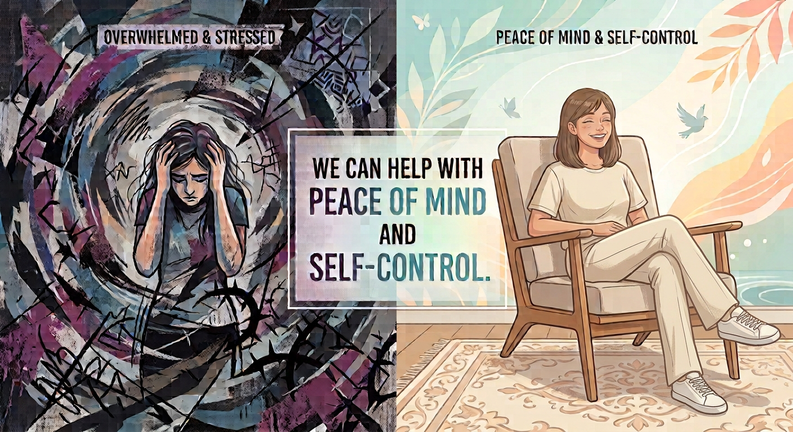
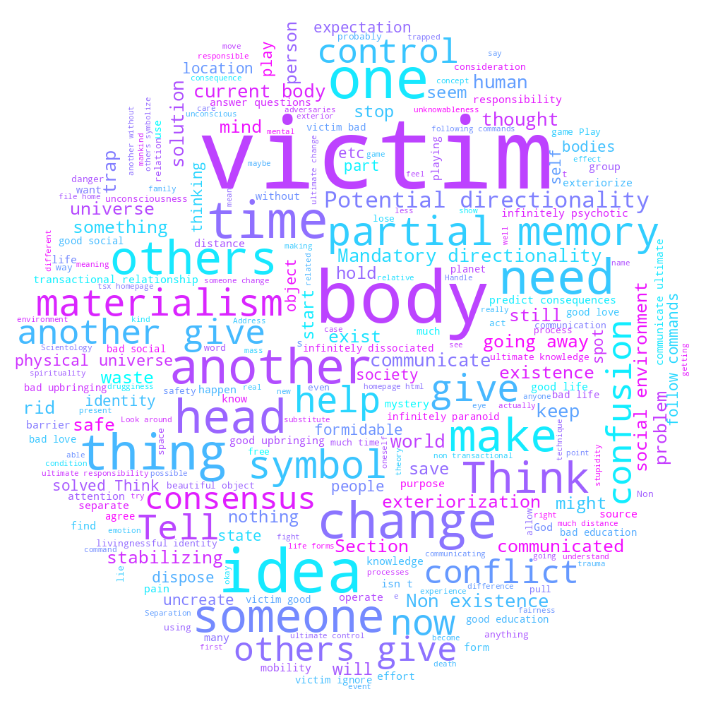

WE CAN HELP WITH PEACE OF MIND AND SELF-CONTROL
BECOME HAPPY FOR REAL

We are open to all.
We cost $0.00 to practice, no price ladder or costs in any way at
all.
We have a useful spiritual practice, a spiritual technology for
stress relief, stability, fulfillment, and for understanding
self.
Click for our SOP, which can be done online for free.
We encourage free thought in the strongest sense.
We are a new religion.
We don't require conversion or abandonment of previous beliefs.
We have an open-ended epistemology and ontology - believe what is true
for you but make sure to seek the truth and be intelligent and
discerning.
We can be easily contacted - safetyorganizationcontact@gmail.com

Our Main Goals
Our Main Goals for Individual, ranked
[This list is a work in progress still.] 1. Forming a group to fall back on to if things go bad spiritually; a group to protect one (and one’s friends) from outcomes — that exists regardless of nation, socioeconomic status 2. No issue with body death, no compulsion to report anywhere 3. Exterior, or able to exteriorize without issue 4. Able to Assume bodies without issue 5. A friendly space in which to meet others that want to go free, support others and be supported by others 6. A willingness to want to free others, regardless of the group, or teachings 7. “Full” perception while exterior 8. Retention of current memory across lifetimes (might be more difficult than the other points) 9. A feeling of safety and calmness 10. In control of automatic responses, or not having automatic responses 11. Does not have destructive intentions or evil purposes 12. Somewhat better memory of current life 13. Has a relatively healthy body or sense of form For the main goals, there are direct processes for these also 2. No issue with body death, no compulsion to report - 1-9 3. Retention of current memory across lifetimes - 16 4. Exterior, or able to exteriorize without issue - 1-8 5. Able to Assume bodies without issue 7. A willingness to want to free others, regardless of the group, or teachings. 8. Full perception while exterior - 17 9. A feeling of safety and calmness - Many processes, we can make a more specific one 10. In control of automatic responses, or not having automatic responses - Many processes, we can make a more specific one 11. Somewhat better memory of current life 12. Does not have destructive intentions or evil purposes 13. Has a relatively healthy body or sense of form We want 100% of our members to achieve these states. We also want all of our members to achieve their own dreams, e.g., being a good singer; being a good business manager; being able to have a healthy marriage, etc. But we won’t lie - the above 13 points are the main goals of what we do. And we are very good at bringing these about. We improve someone spiritually to achieve these states. We do this just by getting someone to change their mind or confront areas they are not inclined to look at or confront. We can help you with just about anything - any problem, any goal, any wish, any dream. But be grounded and don’t expect too much - this, studies show, is one of the main qualities of people who are happy - not expecting too much, or some weird idea. We can make you immortal (you already are, but we can show it to you, and make you certain of it). But we can’t “force” you to be a good singer, or to be rich, or be wealthy. We are blatantly honest. However, using your new ability that we bring about, it is very possible that those conditions or achievements could be attained. See media of what we are - Games, Films, Music
Mores, About
The odd thing is that current society’s mores are such as they are. Anyone, when they would be considering a group that would truly help them and lead to permanent states of improved being, would be given two choices by society itself These are — 1) The choice of freedom (by the associating with the group, driven by oneself) 2) Chaotic Confusion. This would include essentially every reaction and emotion, all not thought out very well. This would include Destruction, evil purposes, destructive intentions In another system, insanity is defined as (referenced here in Fair Use) - “INSANITY IS THE OVERT OR COVERT BUT ALWAYS COMPLEX AND CONTINUOUS DETERMINATION TO HARM OR DESTROY.” This is a very good, and very accurate, definition of Insanity. Also of evil. This definition defines insanity with the words “complex” and “continuous.” For some reason people can pre-suppose that the person is supposed to follow the chaos, which would include complex and continuous impulses of all kinds. This, necessarily, would then mean the person “should” be connected to destructiveness and be destructive themselves. But it is very possible to not be pro destructive groups at all, or destructive actions at all.
What is Destruction
What is a destructive group, action or lifestyle?
A group, action or lifestyle in which the being is not aware of where, what or how they are. Or a group, action or lifestyle which promotes, condones or mandates this condition. Put differently, it is one which condones or mandates unawareness and disability of the being. This is our working definition, and can be used by others as well. All such destructive groups, actions and lifestyles aren’t particularly worth supporting. Conversely, a group, action or lifestyle which promotes or enables beings to know who, what and how they are, is very worthwhile and very worth supporting. A destructive group, action or lifestyle could be one which gives a false idea, like to worship a figure, instead of knowing where and how one is. Instead of knowing where and how one is, people are often given false “solutions” of prayer, drugs, power dynamics, etc. Such are actually destructive groups and lifestyles. By feeling Safer, it is quite possible to snap out of “automatic destructiveness” or previous destructive agreements. But realize what one is dealing with. The society at large is filled with a bunch of destructive organizations and cults. People don’t even know what, where, or often, that, they are. Understanding Exterior ontology is quite important. It’s not enough to read about psychics or whatever. One needs to actually know where what, one, and how, one is. This is the baseline of normalcy. This is why we thoroughly target this. We use our SOP. This is listed below. This is one of the foundational points of our ethics. You have got to have someone know who, what and how they are.
Ontological Zeal
Seek Truth
We greatly value the pursuit, through apologetics, discourse, dialogue, communication and debate, among people of intelligence, of the true ontology of life. This is a never ending pursuit. The foundation of Safety Organization will be put in place, and new findings will be found. But our religion accepts truth and molds to it. And becomes more hardcore ontologically, never dilutes. In 1000 years, it will have a more detailed ontology. And critics can augment it. But only if they know "they can do it", etc. For the character of those who think they cannot "do" our processes, is more than in question. Fight thoroughly any "watering down" of our processes to appeal to more people, or to "soften them", to make them dumb.
Ontology of Life
What is actually true
For now, this is a working hypothesis. All truths in our movement, we wish to extensively prove and document them, within reason (and without making anyone unsafe). You are an immortal soul. You are not your body. Your capabilities are unlimited. You are the source and cause of reality - your universe (thoughts and creations), and also the universe around you (the physical universe). These are separate. You have been lied to and shackled and chained to bodies and been told that you are a body in previous spiritual experience in this universe and previous ones. You’ve lived a long time. Your ability has been tremendously reduced. Eastern traditions - Hindu and Buddhist cosmology, etc. - often think there have been trillions of years in the past. This duration is basically accurate. Your ability has never decreased, only willingness to do things has. You’ve been told by heavy “conditioning” (implanting) through advanced tech and such means in ancient, arcane places that you are a body and to be a slave. This happened many, many, many different times. This can be readily experienced. This exists, much of it, in mental mass form around the body, or in mental mass that comes in, near or inside the body, if “triggered” (restimulated). The prospect of “freedom” or “control” readily makes this stuff “kick in” hard. This can be easily experienced. For anything, one is either at Cause (a state of causing or being able or willing to potentially Cause things); or is at Effect (has no control, acts like a victim, has no awareness, etc., the Effect of things). The extent to which one is at Cause is a spectrum - a gradient scale. One finds people have very little Causativeness over this stuff usually. The stuff makes them only be lowly mad “Homo Sapiens.” The events you have experienced are recorded as “facsimiles” – copies of the events that happen, with full perceptions and concepts. These are continually recorded normally by the mind. They are very light pictures, they have physical weight in the physical universe. The slave-making events and incidents, designed to trap you and make you human, are also facsimiles. But they are heavy. They exist as ridges (basically, tangled up energy masses). Without the “help” of these heavy facsimiles, it is likely that you can step outside of your body somewhat stably and exist just as yourself. There can be great, great relief in handling these incidents. For freedom is within grasp. So long as you are not shackled down and are willing to reach for it.
What We Do
We do what we call “Processes.”
Processes are techniques, sometimes applied in a group setting, to “turn on” some kind of spiritual or mental phenomena, or to drill or train ability to a higher level.
It is not “going to the gym” or “strength training.” To conflate such is to miss the point. It is to become spiritually calmer and freer, and in so doing, yes, one might become “stronger,” but it is not just “strength”. It is becoming less compulsive, more self-determined.
It is the ancient goal of Buddhism and Eastern religion in general. But in a much better form.
Besides processing, we do the following religious services -
Group Immortality ritual - whereby we each reaffirm our inherent immortality as a group. Invigorating, you are welcome to join so long as you know you are immortal.
Grand Tours - a group processing technique where people are acclimated into the environment of the physical universe. Only for beings who can perceive exterior and know it.
Some of these shall be broadcast on social media.
Some processes might focus on handling negative things. These involve “turning on” and “turning off” some kind of mental charge or factor. For example, a heavy incident. Some processes might focus on putting into being a positive state, like Intelligence.
If you have high-level spiritual experiences or experiences of your true or broad identity, it is important not to suppress that, even if it doesn’t conform to “popular” viewpoints. If you have an experience of a past life, etc., be more than willing to support a broad epistemology. You don’t need to constantly try to invalidate your own memory or own thoughts. Eventually, your memory will be straightened out in the end.
We support the individual finding out the truth for themselves. We support academic work, university studies, skepticism, inquiry, rebellious dispositions, and unique perspectives. We strongly encourage a person to maintain the version of knowledge that they experience firsthand, and not try to “fit in” to what others think.
Our background
We are a new religion. We have no direct predecessor, we are not a sect. We are striving to find and tell Full Truth in the present time, right now.
Much like Islam can mention Christians or Christianity, or Sikhism is influenced from Islam and Hinduism, we also have inspirations.
While we are wholly and utterly ourself, and are not a branch of anything, there is a lot of wisdom and truth in Scientology. There is also truth in Chan (Zen) Buddhism, from China.
On our background -
Scientology can be often identified with space-opera conceptions. That is not, however, a good description of what much of its foundational practical technology consists of.
A direct search of the entire Grades technology for any of the terms
alien, aliens, extraterrestrial, extraterrestrials, martian, martians, mars, men from mars, space man, spaceman, space men,
space people, outer space, interplanetary, interplanetary being, galactic, galaxy, planet, planets, venus, mars, jupiter,
saturn, uranus, neptune, pluto, star, starbase, star base
shows no instances at all.
Looking over Grades Scientology material, these are the most common terms, ranked by frequency. This provides a statistical frequency-distribution approach to understanding what the foundational technology of Scientology is.
1 word - 'others', 'another', 'spot', 'recall', 'think', 'change', 'time', 'help', 'communicate', 'problem'
2 words - 'spot some', 'think of', 'recall time', 'communicate to' - Similar to above
The frequency is apparently biased toward the Objective — other human beings in the here and now, other objects, events, and the environment.
This suggests an operational methodology focused substantially on dealing with life, relationships, communication, and the immediate environment, rather than being excessively introverted. There is also comparatively little emphasis among these most frequent terms on trauma, pain, pathology, or conventional “self-help” archetypes.
The statistical frequency distribution is approximately as follows:
1. Spotting others — Objective.
2. Recalling and thinking of things — an Objective kind of Subjective.
3. Change, time, help, communication, and problems — increasingly Subjective.
This suggests that Scientology, in addition to its 372 objective processes, has a bias whereby its supposedly “subjective” techniques remain substantially Objective in their orientation.
Expectations
1. On knowing oneself
Before anything, one must understand that one can know about the mind, spirit and life. One must know that one can be in control of the creation of things.
These can help, and allow one to have these things - to be able to interact with these things without issue. This is a consideration, and can be built up markedly.
Waste 'knowing about the mind, spirit and life'.
This means to make this, "mentally", destroyed, etc. "Waste" here means "ruin, destroy, lay waste of, wreck, make vanish altogether, etc."
So, again
Waste 'knowing about the mind, spirit and life'. This allows you to have this. Instead of being oblivious of this or being predisposed to want to fight or reject it.
Also
Waste 'not knowing about the mind, spirit and life'.
Before anything, allow yourself to know yourself - whatever the way. This will protect you. you don't need to protect yourself, from yourself.
2. On expectation, and "spiritual people" or "fun times"
When one finds ex-religious people, one often notices that there are certain expectations they "had".
These expectations are usually completely arbitrary, a product of their thinking and nothing else.
People say the key to happiness is low expectations
There has even been scientific testing of such
https://www.sbs.com.au/news/article/the-key-to-happiness-really-low-expectations-according-to-scientists/gs2fg3gau
One can look at certain ex-Scientologists, "assuming" some goal instead of going with the journey, or ex-Christians, assuming hell or assuming social pressure.
There can be social expectations, which really don't exist, parental expectations, which don't need to exist (It is usually one's choice to have a kid, and always ones choice to have a body)
It is interesting that one finds so-called ex-Scientologists or anti-Scientologists saying things like "I was exterior with full perception.",
and many other claims affirming consistent ontology, and affirming current belief in such ontology, and be "mad" due to expectations.
They have found what they are, how they are, but are "mad" because of some petty nonsense, like some grievance that some person did,
or things, that, frankly, a being in a good state should be able to snap out of or not snap out of in a second.
Hubbard did have a process for Expectation in his early materials. He notes "This process is not for low-level cases" about R2-70.
One should be happy to just exist. There is nothing in any former spiritual practice, Transcendental Meditation, Scientology, Christianity, anything, that
pre-supposes high expectations. It's what people add to the picture.
These questions can ameliorate strange "expectations", which they should really be exterior from. Also, one can treat them as a symbol, move the expectations, waste them, etc.
Actually, wasting expectations could be very valuable.
These processes should be done to get rid of such issues.
What expectations do you not have for the human spirit?
What expectations does the human spirit not have for you?
What expectations do you have for the human spirit?
What expectations does the human spirit have for you?
Waste expectations of the human spirit.
Waste no expectations of the human spirit.
What expectations do you not have for religion?
What expectations does religion not have for you?
What expectations do you have for religion?
What expectations does religion have for you?
Waste expectations of religion.
Waste no expectations of religion.
What expectations do you not have for God?
What expectations does God not have for you?
What expectations do you have for God?
What expectations does the God have for you?
Waste expectations of God.
Waste no expectations of God.
What expectations do you not have for supernatural powers?
What expectations do supernatural powers not have for you?
What expectations do you have for supernatural powers?
What expectations do supernatural powers have for you?
Waste expectations of supernatural powers.
Waste no expectations of supernatural powers.
Symbols Theory
The goal of this is to change a ton of considerations of the being to get them stably exterior, quickly and directly.
We want to exteriorize them, which has much to do with symbols (approval from bodies on the high end, needing bodies and going into worshipping bodies on the low end).
The intimate "problem in exteriorization" (if there is one) is essentially one of symbols.
We believe that if someone obsessively reinteriorizes all the time, something here is probably not done properly. And no one does this, so it is novel.
Once exterior, they should be immediately made to look at things, and then interiorize into things and exteriorize from things.
On emotions and knowing
The classic Dianetic / early Scientology presentation of a person having one chronic tone level (with social and acute variations on top of it) is too crude and ultimately incorrect.
What actually exists is an emergent multiplicity of condensations, spaces and emotions, each separate in their own ways, but, together, aggregating into one "tone level", which could be observed by looking at the person, looking at the being, etc.
The “tone level” we observe or assign is an emergent, practical average of the spaces and conditions the being is currently operating with — not a single number sitting on the being.
One being can operate with absurdly different levels of condensation. He might do something with a million miles of space, and then less than an inch.
And surely, there are many things the being is doing at total failure, can't hide, unknowable, hiding, etc. AT THE SAME TIME as the being is doing things with cheerfulness, strong interest, no sympathy, etc.
Someone might be at Sacrificing and Worshipping Bodies for their body, at Cheerfulness for something that happened, super high toned for some OLD extant space that they had from probably a previous universe, etc
At the higher emotional levels, space expands and reality becomes less real. It is maximally real half way down. Then space contracts more and reality becomes less real.
Theory
A symbol is something with mass, meaning and mobility. It is an idea with mass that is able to move.
Most people can't get a thorough idea of something except in a symbol form until they've Wasted it. So wasting things first is a good idea.
Wasting can better people's cases, running concepts and doing Creative things can worsen or complicate a case.
Wasting and Saving things are better. But wasting must be the best. "Getting rid of" is also better than Wasting, and is more mild.
In order for someone to be able to have what he cannot have he first must be able to Waste it.
This makes sense, since he would have an aversion to having anything unless he knows and is able to get rid of it, destroy it, or both.
One of the problems of symbols, perhaps the problem, is symbols are mass, and a being can pick one and because he doesn't want their mobility,
he will try to hold one still (unsuccessfully, obsessively) - stillness being non-mobility and after that, having resisted it, he will become the symbol itself,
and he won't be an orientation point in relation to it, there will be another orientation point.
Therefore, getting him to non-obsessively hold the body still and not have an issue with the body's mobility, would exteriorize him. The body is a symbol, as would be many other things.
Having him keep the body's head from going away, for a long time, would also do a similar thing.
Also, since he feels trapped by the head, and since traps, by definition "keep things from going away", he is doing the inverse here, which would make it not be
obsessive. This non obsessiveness would make him not have an issue with the body's mobility, and would make him not have an issue with the body's symbolness.
The body is a symbol and if someone symbolizes to know, at the high end they emotionally are in approval from bodies (where there is more Thinkingness, thinking to know is blended in), at the lower end they are in needing bodies.
So, what interiorizes a person?
The idea " I am trying to annul the symbolness (mass, meaning or mobility) of these X symbols (in practice it would only be annulment of mobility), and I can't do that, so I'm compulsively now BECOMING a symbol, losing my ability to be an orientation point in relation to these symbols, and therefore, getting located, given meaning, and given mass, because I delusorily think that I am a symbol in "all cases". "
"I am trying to make this body not go away, I can't do it, since it's a body and moves (probably a baby, or whatever) so I will sacrifice for the body (sex), worship the body (eat), need the body (symbols), and get approval from the body (high order symbols)"
I am sure there is a multiplicity of different emotional and knowingness levels when someone picks up a body or at any given moment for almost anyone.
"I am trying to make a body not move - not be mobile" is kind of a failing proposition. Even killing it doesn't work well.
So maybe someone sitting still and saying "all my body symbols can move anywhere" out loud over and over for hours on end would exteriorize someone. It also might take 1 minute.
Maybe making the body move like a racecar, follow along lightning, etc., can also help
This explains why monks may go nowhere.
On the subject of unconsciousness, maybe why people don't seem to retain memory life to life, as a root factor, ignoring memory wipes (which the gnostics and Scientologists both believe to be true),
is too much unconsciousness, which, has the emotional tone level of "Being Nothing". So maybe beings are a patchwork of nothing; being such, they are given a body, a somethingness, as a solution for the nothingness which they have become.
I don't really see Scientologists even, retaining memory life to life. How could this be so?
Well, if beings aren't except with a body, and they are, perhaps, mostly nothing, then most of their identity would be Unconscious, a majority.
If this is so, they are mostly being nothing. Maybe 0.1% of them is being SOMETHING, but that SOMETHING would be mostly the body or body-related things.
If this is so, if the body dies, the solution to the unconsciousness, would disappear, and any stability in contrast with the confusion of the body would also disappear.
A clean solution is probably to invert the Being Nothing / Unconsciousness. To make being nothing into being something.
"Telling someone places where they are not", might be useful to make someone not be "buttered", but
"Where are you being nothing?" might be more useful.
Perhaps there is no issue really and people do come back with memory, and it's not talked about much at all.
Perhaps the body suppresses unconsciousness on a mass scale, and the body helps to make a being not think of that unconsciousness. If so, this could be dealt with.
"What unconsciousness would there be without a body?"
"If your body is dead, what unconsciousness could you communicate with?"
"If your body is dead, what unconsciousness could overcome you?"
"If your body is dead, tell me an arithmetic problem you could do without any brain at all."
"If your body is dead, what unconsciousness wouldn't be fashionable."
Unconsciousness is a method of knowing, not quite unknowable, but just above such. It is being nothing, an actual beingness, of nothingness.
All of this doesn't explain why people with success in remote viewing, etc., or people who totally COULD do remote viewing, are so shy about such. This is a different question.
Does this imply some kind of EXTREME conspiracy theory style narrative, like what the gnostics believe? Not necessarily.
Trap Theory
Trap Theory
The biggest traps
Why does someone get trapped onto something on which they can get "hurt". The person becomes obsessed with an arbitrary "orderliness" of the thing.
For example, for a body, someone might have a reaction if the body is falling at 1000 miles per hour, has six arms, has parts in the wrong place, is in pain, is drugged, is missing parts, is not beautiful, etc.
Actually, there is no orderliness of a body, not in any relevant way. One doesn't care if an action figure is decapitated (usually one wouldn't care, that is).
The huge lie is ORDERLINESS.
ORDERLINESS of matter, energy, space, time.
Time is probably the biggest lie. Especially when one has a "solution". Why don't you exteriorize out of everything bad in existence right now?
Because you have workable "solutions" for everything to liberate yourself. The more these "solutions" seem like the "only" solutions, the more one is trapped.
The order goes as follows -
1) There is energy masses into which one feels one is trapped. Of course one is not trapped
2) One doesn't like this, so one tries to "solve" everything - everything, with some solution.
It might be something like "I will pray, and God will solve it all, I won't suffer anymore."
Or "I will meditate and eventually I will go free."
Or "If I follow the leader, he will solve our problems for us."
These are ORDERLY solutions to life. How are they orderly?
1) They are ORDERED in time. __They are in a certain sequence__.
Let us say there is a "trap of jealousy of not owning a house". They are stuck in an obsession, and they can't think otherwise.
The being comes up with some solution at some point.
For example, "I will see a doctor, get my pain handled, work toward recovery, I will get a job again,
I will work for 5 years, I will buy a house, I will be in a state in which my possessions parallel my peers
2) They are ORDERED in energy, matter and space. If something is ordered in this regard, it means it is set up to be "workable".
They have certain actions which they know will be effective in liberating themselves.
In this case, it never occurred to the person that he just didn't need a house. That he is not a body. That having a house or not having a house are both okay.
That he is not trapped at all.
The biggest traps are
ORDERED solutions in time and ORDERED (workable) solutions of energy
And these kinds of things can be traps for LONG, LONG periods of time.
The insidiousness of them, why they can trap at all, is because they seem workable, and great solutions - possibly the only ones possible.
How does one free oneself from this kind of thing?
Well, whatever "ordered" time idea, mess up the time intentionally, reverse it, waste it, make time not exist, make time move fast and slow, move time (as a symbol) around, etc.
Well, whatever "ordered" (workable) energy idea, mess up the energy, matter (and possibly space) intentionally, alter it, waste it, make it not exist, move it (as a symbol) around, etc.
This is probably the best way to free oneself from the most hidden, subtle traps that could "exist".
The only real way to become free will be to exteriorize out of any think that could be hurt or a symbol that could grab ones attention. This might be a body, or some higher level "harmonic" (astral body, or whatever might exist)
THE FUNDAMENTAL LIE IS ORDERLINESS, WHICH DOESN'T EXIST, EVEN THOUGH YOU MIGHT THINK IT DOES.
Orderliness might be requisite for any game to be played. And it can be snapped out of at once if someone really cares to.
Some traps that might exist -
human body, possible "higher level" bodies (that maybe or maybe not can be attacked), amnesia of death, amnesia of birth, relocation, relocation at death,
drugs, pain, sex, hypnosis, brains, eating, symbols, unconsciousness, unknowableness, waitingness, mystery, thinking, effort, negative emotion
And there are lots of other mundane ones
A huge one is humility, modesty, narcissism, ego, etc. Feeling that one be super "modest", is a huge trap. Ego isn't necessarily a good or bad thing.
Believing that one is the "best thing since sliced bread", can, in some cases, be quite healthy, and useful.
So, before anything, don't needlessly destroy yourself.
In George Orwell's novel 1984, the "Obliteration of the Self" is the official political ideology of the super-state Eastasia.
It is also translated as "Death-Worship".
Like Ingsoc in Oceania and Neo-Bolshevism in Eurasia, it is a totalitarian system designed to destroy individuality and enforce total state compliance.
Why worship death? No one need be dead.
For all of these, if they get "attacked" (e.g., a body), you might feel very bad. For no reason at all.
And you can use this extreme forceful technique on all of these.
E.g.,
For drugs
Whatever "ordered" time idea, mess up the time intentionally, reverse it, waste it, make time not exist, make time move fast and slow, move time (as a symbol) around, etc.
Whatever "ordered" (workable) energy idea, mess up the energy, matter (and possibly space) intentionally, alter it, waste it, make it not exist, move it (as a symbol) around, etc.
And theoretically then the being shouldn't be really affected if their "body" is drugged, and even if the body feels really weird and the eyes give false information, the being shouldn't care that much.
In practice, one is never as exteriorized as one should be.
Think of a child having their toy taken away and being upset. Or someone losing a loved one.
Or someone losing their own body, and "something happening to themselves".
All of these could affect someone to a near zero degree.
Someone could also have a napkin taken away, and have a psychotic break.
The amount of complexity possible for simple things, is very high.
-------------
The physical universe is surely inside of something else, likely another universe. One is likely interiorized into multiple universes.
The universe one is in is not special. There are others. The others can act as solutions. The one one is in right now can act as solutions. The others can act as problems. The one one is in right now can act as problems.
You are not stuck in this universe. You don't need to care about its problems. You don't need to care about its solutions. If someone is harmed elsewhere, you don't need to care. If someone is harmed in this universe, you don't need to care.
The planet one is in is not special. There are others. The others can act as solutions. The one one is in right now can act as solutions. The others can act as problems. The one one is in right now can act as problems.
You are not stuck in this planet. You don't need to care about its problems. You don't need to care about its solutions. If someone is harmed elsewhere, you don't need to care. If someone is harmed on this planet, you don't need to care.
The body one is in is not special. There are others. The others can act as solutions. The one one is in right now can act as solutions. The others can act as problems. The one one is in right now can act as problems.
You are not stuck in this body. You don't need to care about its problems. You don't need to care about its solutions.
You can try practicing going out of things you normally wouldn't want to.
One can always exteriorize out of anything, any time, ever.
Just as one can leave a building, or ones home, one can go out of anything, for example "Exteriorize from heartbreak".
But one might not want to exteriorize from heartbreak, one might want to be heartbroken, or find it "fun" to be depressed and moody.
One should become "loosened up" enough, that one is comfortable doing lots of things, including going out of things.
People are BAD at going out of things. If people went out of the trappings of war, violence, rage, etc., there would be no war, violence, rage, etc.
They are completely unnecessary constructions someone can go into or out of 5,000 times immediately at will, only many would not want to do so.
Someone can go into and out of a desire for alcohol 10,000 times in one second, if they are good enough, in theory.
If you go out of things, you can then enter much better things.
One could think
"If I leave this body, I will be able to associate myself with far more immersive complications / fun / life events."
"If I leave this planet, I will be able to associate myself with far more immersive complications / fun / life events."
"If I leave this universe, I will be able to associate myself with far more immersive complications / fun / life events."
Also, exteriorizing from exteriorizing and exteriorizing from non-exteriorizing is probably quite valuable.
Really, any bad idea you have, you can step out of such, and many variations or associated things.
There are going to be MANY aspects of its "construction" that are lies and are not static.
Commentary on Historical Background
Koans originate from Chan Buddhism, which turned into Zen.
Not all koans are on the level of other koans. But here is a list of good ones. There are surely others.
Even if one’s ontology isn’t trying to “destroy” or deny the self, as in Jainism and Scientology, these are quite valuable.
These are all from China, with some Indian and Japanese origin also.
These are actually good pieces of technology to mull over (if one wants to), and so are included here.
Note, some of these are English paraphrases of the core ideas. Someone could have independently been "inspired" by them and gone free from such, in theory.
One doubts any beings have really attained an enlightened state in thousands of years with typical Buddhist and Hindu “technologies”, which are not strong.
However, if someone exclusively used these koans, maybe they would have gotten somewhere.
Increase cause over symbols
1. “What is your name before you were named?”
(or the full classical form: “Without thinking of good or evil, what is your original face before your parents were born?”)
Status AUTHENTIC
Date Tang dynasty core (Platform Sutra, Huineng / Sixth Patriarch, 8th c.); Case 23 of the Gateless Barrier (Song collection)
Country China
Source Platform Sutra • Gateless Barrier Case 23
Classic pointer to the being prior to name, body, parents, and all conditioning/symbols.
Exteriorization
2. “The gate has no lock, so why do you ask for a key?”
Status TRADITIONAL / LOOSELY SUPPORTED
Date Attributed to Sengcan (d. 606) / early Chan; exact form later traditional
Country China
Source Early Chan / Xinxin Ming stream • “great Way has no gate” language in Gateless Barrier preface
Gateless-gate rhetoric is classical; exact “no lock / why ask for a key” wording is a later traditional paraphrase.
Unfortunately
The critical stance toward exteriorization-like experiences is present in Chinese Chan, not only in Japanese Zen.
The Japanese term makyō (魔境) and the detailed modern catalogues that explicitly include astral projection or out-of-body experiences are more characteristic of later Zen teachers (e.g., Yasutani, Kapleau, Aitken). However, the underlying attitude — treating such experiences as obstacles, illusions, or “demonic states” that must not be clung to or taken as attainment — is already well established in classical Chinese Chan.
Knowing where one is as a being
3. “If you cannot find reality right here, where else will you look?”
Status TRADITIONAL / LOOSELY SUPPORTED
Date Traditional / oral
Country China
Source General Chan emphasis on right-here reality
Fits abundant Tang–Song Chan rhetoric of immediacy; no exact classical case with this wording.
Automatic processes
4. “When it rains, look at the dry ground.”
Status TRADITIONAL / LOOSELY SUPPORTED
Date Traditional oral
Country China
Source Related rain/ground imagery in Chan poetry and recorded sayings
Rain imagery and paradoxical ground/rain phrases appear in Chan verse collections; exact form not in major gong’an cases.
Control of communication
5. “Before you speak, to whom do you speak?”
Status TRADITIONAL / LOOSELY SUPPORTED
Date Traditional / oral (“Ancient Master”)
Country China
Source Related “how will you speak with lips shut” style encounters
Related classical dialogues exist; exact wording not located as a numbered case.
Understanding context one is in
6. “A white cloud does not look at the sky.”
Status TRADITIONAL / LOOSELY SUPPORTED
Date Traditional / Song-period style
Country China
Source Shitou and later Chan poetry
Classical cloud/sky imagery is solid (Shitou: “the great sky does not obstruct the floating white clouds”); exact form is Song-style paraphrase.
Understanding “hellishness” one is in
7. “Where do you find safety in a burning house?”
Status TRADITIONAL / LOOSELY SUPPORTED
Date Image from Lotus Sutra, used in Chan from Tang onward
Country India (sutra) → China (Chan use)
Source Lotus Sutra parable • common Chan applications
Burning-house parable is classical; exact question form is later application rather than a standard numbered koan.
8. “A single lotus flower blooming in the midst of fire.”
Status AUTHENTIC
Date Classical image (Vimalakīrti Sūtra and Yongjia’s Song of Enlightenment, 7th–8th c.); frequently used by Dōgen
Country China / Japan
Source Vimalakīrti • Yongjia • Dōgen’s Shōbōgenzō
Image of the being remaining pure, clear, and functional amid affliction or “hellish” conditions.
Not compulsive perception
9. “The true eye sees nothing at all.”
Status TRADITIONAL / LOOSELY SUPPORTED
Date Traditional / Song style
Country China
Source Related true-eye rhetoric
Related “true eye / Buddha-eye / sees no-thing” language appears in various dialogues; exact wording not matched to a standard case.
Humility / the being independent of the organism
10. “There is a true person of no rank who is always going in and out through the gates of your face. Those who have not yet confirmed this, look, look!”
Status AUTHENTIC
Date Mid-9th century (Linji Yixuan, d. 866)
Country China
Source Record of Linji • Book of Equanimity Case 38
Direct indication of the being that operates through (and is not identical with) the face/body.
Being a strong being / unmovable cause
11. “The iron ox does not fear the bite of a tiger.”
Status TRADITIONAL / LOOSELY SUPPORTED
Date Song dynasty collections (related imagery)
Country China
Source Related iron-ox cases (Blue Cliff Record Case 38, Book of Equanimity Case 29)
Iron-ox imagery is classical; tiger motifs appear elsewhere; exact combined form is a later synthesis.
Now, here is a new, better one
Koan
“What symbols mustn't be here?”
You might think, emojis, crosses, art, trains, plains, ships, ground, feet, hands, arms, legs, a body
your body, your mom's body, your father's body
your school, your spouse, the universe, the earth, the United States, Canada, your problems, your games,
your goals, your struggle, normalcy, abnormalcy, head pain, body pain, etc.
This is probably the cleanest way to detach someone from symbols such that they are willing to exteriorize.
One can balance it out with “What symbols must be here?”
Also, here's a list of other ones one could use -
Using CLICD-CT
C - The end point of communication is the source point
I - Being human is not being human and not being human is being human
C - Obeying commands is not obeying commands, not obeying commands is obeying commands
Following commands is not following commands, not following commands is following commands
Answering questions is not answering questions, not answering questions is answering questions
What is first is second and what is second is first
That bad second is the good first and the good first is the bad second
That good second is the bad first and the bad first is the good second
When a non-problem is a problem, a problem is always a non-problem
The voluntary is involuntary and the involuntary is voluntary
A choice is mandated and the mandated is a choice
Association is dissociation and dissociation is association
Personalization is depersonalization and depersonalization is personalization
Here is not here and not here is here
Symbols being here is the same as symbols not being here
Consensus is non consensus and non-consensus is consensus
Science is non-science and non-science is science
Knowledge is non-knowledge and non-knowledge is knowledge
Being non-trapped is being trapped and being trapped is being non-trapped
Not helping is helping and helping is not helping
Being one is being many and being many is one
Working for another is not working for another
Swapping minds is not swapping minds
Swapping bodies is not swapping bodies
What is isn't and what isn't is
Something that must be here is the same as something that musn't be here
Full SOP
Full SOP
Almost every single command or question below, is a completely new command, not copied from another older tradition or religion. This is our Safety Organization SOP.
We begin with a myriad of different commands. The goal is to make the person a real person, not a robot. Relief can be found in many ways.
This is best done with another telling you the commands or questions.
It can also be done by oneself.
Repeated iterations can do things that earlier iterations haven't.
We get the person to not be doing things obsessively or compulsively.
Best of all, this is high accessibility since our practice is free as in cost and free as in freedom. $0.00
-------------------------------------------------------
Safety Organization spiritual developments of note -
The overwhelming majority of questions and commands we use are fully original.
But, there are certain ones that stand out in their novelty.
These are developments NO other previous system has done in any form.
Since these are just text, they can, of course, be used by non-practitioners of Safety Organization as well.
The technology we use is SPIRITUAL, not mental, psychological, or psychiatric.
Our main innovations can be thought to be in categories of Communication, Livingness, Identity, Commands, Differences, Clean-Up.
This should be understood as one phrase. CLICD-C. "Clicked C."
Primitives
1) Excellent handling of simple "operational primitives" across a wide spectrum, including a very good handling of symbols. No other system in existence as of this writing does this. As such, we can put a being in command of many primitives better than any other system
Communication
2) "From where could you communicate to a victim of partial memory?" can do fantastic things and can help with neurotics and everyone. People are constantly upset about not being able to remember - indeed, they are victimized by it. This makes one NOT be victimized.
3) "From where could you communicate to a victim of time?" is also quite novel and important. Since time is such a huge factor in sanity
4) "Get the idea of communicating to another without a source." etc. can enable direct communication.
Livingness
5) "Tell me/Waste/Save a livingnessful identity." is huge. This enables control over, and snapping out of, LIFE itself.
Commands
6) "Don't follow commands."
Identity
7) "Don't be human/be human."
Differences
8) Differences, in the particular command form
Clean Up Body
9) Clean up the body, for mothers and non-mothers. Important.
Other factors (have not been made into acronym yet)
1) Actually handle the subject of communication and open the person up. (ultimate subjects)
2) Change considerations about basic things (no / all)
3) Address the 'buttons' of consensus and time ("When does someone not need to agree?", "Where could there be no consensus?", etc.)
4) Deal with basic considerations (Think that your identity doesn't need to be solved, etc.)
5) Handle change (Where could you change ______, etc.)
6) Address mundane factors ( Where could ___ give a victim ... )
11) There might be others.
-----------
How to run
Two people sit together somewhere.
One is the processor, the other is the person being helped.
The processor doesn't invalidate the person being helped, or tell him he is no good.
They also do not evaluate for the person being helped, or tell him what or how to think, or psychoanalyze for him, or anything else.
The processor asks or commands the person being helped each question or command, in order. If the person being helped doesn't answer, they say, 'I will repeat the processing command. _________'
They do this until they get an answer. When they get an answer, they acknowledge, 'Thank you', 'Good', 'Alright', etc.
They push the person through whatever might be happening until they get an answer.
This command list is very heterogeneous - that is, there are many different commands. This is a good thing.
For any large theory section, DO chat with the person about it BEFORE running it.
If he doesn't understand it, have him understand it first.
If the person has a huge realization / win / success, and wants to stop the SOP, allow him to stop. Don't force him in the session.
- Contact reality. Do basic control things
- Increase safety of the person.
- We've dealt with basic control, and safety. Now we can deal with relationship ideas, since one can control a safe relationship.
- Actually handle the subject of communication and open the person up. Only use large scale subjects.
- Change considerations about basic things (Broad thinking)
- Change considerations about the head and its seriousness.
- Deal with interiorization and exteriorization by only focusing on the body.
- This is probably a really important thing. Clean up stupidity. Address a bunch of 'wide' considerations.
- Address other points.
- Increase power of choice over insanity itself. Important.
- Address the 'buttons' of consensus and time.
- Handle change. One is Changing everything compulsively all the time. If he can Not-Change it, it would disappear, because that is the truth - there is nothing.
- Stable data.
- Handle interiorization. If he is in pain, he can't really have his attention on much else.
- Address mundane factors
- "Victim" is a huge button for people.
- Get them less erratic on being human. "Where" is lower level than "Whence"/"From where". Do both.
- Handle hypnosis.
- This should handle issues of the body 'kicking in' for whatever reason, for example, if one exteriorizes or doesn't follow what 'it likes'. This could be much extended if needed. Feel free to in every way.
- Span attention
- Swapping. Make things less rigid. Swap is dual substitute.
- Clean Up the Body
- Seventy-two operating primitives. The 'empty's are kind of Zen-style.
- Misc others
- Make the body more potentially mobile.
- Making being in control of emotioning to know to waiting to know and controlling bodies to being objects.
- Handles approval from bodies, needing bodies, symbols and worse things
- By mock-ups (mental ideas) (well, mock-ups of getting rid of things), gets the person able to get rid of what he feels he "needs".
- Materialism is the huge lie. This allows someone to get rid of things.
- Gets rid of symbols. This is the problem in exteriorization. It is intimate.
- Get rid of different methods of knowingness. This probably helps with exteriorization.
- The idea is that unknowableness or similar very low emotions, could act as stable data in a confusion, the stable datum being that many things about the object or thing are NOT KNOWN. This could give one a sense of calm, and could help to exteriorize someone.
- Here we are putting someone in control of low order methods of knowingness. We are making them not do a method of knowingness. This can help with exteriorization.
- Here we are changing considerations of control. Lack of Control can impede (or suppress) exteriorization.
- Handle traps.
- This leads to substitutes, which is easy, low order, and can handle issues with stable data or with confusions. This can help with exteriorization.
- We improve control of stable data or with confusions. This can help with exteriorization.
- We address effort, which can be a huge button for people
- Using body to give confidence in location. This can help with exteriorization
- Using body to give solution of location. This can help with exteriorization
- Separation. Exteriorization = Separation
- Connectedness. This can help with exteriorization
- Interest relates to interiorization. This can help with exteriorization
- More separation. This can help with exteriorization
- More separation and spotting spots and interest. This can help with exteriorization
- Dealing with control and existence. This can help with exteriorization
- Dealing with safety. This can help with exteriorization
- Dealing with location. This can help with exteriorization
- Dealing with interest. This can help with exteriorization
- Dealing with body form. This can help with exteriorization
- More dealing with control. This can help with exteriorization
- Dealing with sensation. This can help with exteriorization
- Spanning attention. This can help with exteriorization
- Body form as a solution. This can help with exteriorization
- Allowing oneself to exist. This can help with exteriorization
- More separation. This can help with exteriorization
- Clockwise wheel. This can help with exteriorization
- Spanning responsibility
- Consequences, solution, right and wrong
- 'From where could you communicate to a victim?' can free someone by itself. This will speed it up. Nothing 'creative' is used here, nor 'clingy' to the 'victim'.
- Now, here is a REAL process of importance. Be human / don't be human.
- Deal with Rocks.
- Misc others
- Deal with basic considerations.
- Deal with trauma if person wants.
- Now exteriorize out of anything that might be ruining you (see traps section)
- Now, do the other processes listed on this page.
We shall call the highest state of beingness for an individual "C.B." - or Causative Being. That shall be our utmost state and our ideal - to which we are all aspiring as individuals. The Standard Operating Procedure here is a list of different commands or questions. Each of them is designed to, in a different way, increase personal freedom. Use on Tablet or Laptop or Paper and Clipboard. Press Right And Left Arrows or Swipe Left and Right to move through process. This SOP can be repeated, with great results. Even thousands of times. Command list is below. This can be run anywhere, even on a bus or plane, two person ideally, but one is also doable.
Section 1 – Contact reality. Do basic control things
1. Touch your head.
2. Touch your knees.
3. Touch your head.
4. Don't control yourself.
5. Don't start yourself.
6. Don't change yourself.
7. Don't stop yourself.
8. Don't control yourself.
9. Don't start yourself.
10. Don't change yourself.
11. Don't stop yourself.
12. Start yourself.
13. Change yourself.
14. Stop yourself.
15. Start yourself.
16. Change yourself.
17. Stop yourself.
18. Touch your head.
19. Touch your knees.
20. Touch your head.
21. Don't control yourself.
22. Don't start yourself.
23. Don't change yourself.
24. Don't stop yourself.
25. Don't control yourself.
26. Don't start yourself.
27. Don't change yourself.
28. Don't stop yourself.
29. Start yourself.
30. Change yourself.
31. Stop yourself.
32. Start yourself.
33. Change yourself.
34. Stop yourself.
35. Start yourself.
36. Change yourself.
37. Touch your head.
38. Touch your knees.
39. Touch your head.
Section 2 – Increase safety of the person.
40. Get the idea of being infinitely safe.
41. Get the idea of being infinitely unsafe.
42. Get the idea of being infinitely safe.
43. Get the idea of being infinitely unsafe.
44. Get the idea of being infinitely safe.
45. Get the idea of being infinitely unsafe.
46. Get the idea of being infinitely safe.
47. Get the idea of being infinitely unsafe.
48. Get the idea of being infinitely safe.
49. Get the idea of being infinitely unsafe.
50. Get the idea of being infinitely safe.
51. Get the idea of being infinitely unsafe.
52. Get the idea of being infinitely safe.
53. Get the idea of being infinitely unsafe.
54. Get the idea of being infinitely safe.
55. Get the idea of being infinitely unsafe.
56. Get the idea of being infinitely safe.
57. Get the idea of being infinitely unsafe.
58. Get the idea of being infinitely safe.
59. Get the idea of being infinitely unsafe.
Section 3 – We've dealt with basic control, and safety. Now we can deal with relationship ideas, since one can control a safe relationship.
We are also non-transactional, and some people might not be able to understand what this means.
This could do a lot.
60. Where can you be in a non-transactional relationship?
61. Where can you be in a transactional relationship?
62. Where can you be in a non-transactional relationship?
63. Where can you be in a transactional relationship?
64. Where can you be in a non-transactional relationship?
65. Where can you be in a transactional relationship?
66. Where can you be in a non-transactional relationship?
67. Where can you be in a transactional relationship?
68. Where can you be in a non-transactional relationship?
69. Where can you be in a transactional relationship?
70. Where can you be in a non-transactional relationship?
71. Where can you be in a transactional relationship?
72. Where can you be in a non-transactional relationship?
73. Where can you be in a transactional relationship?
74. Where can you be in a non-transactional relationship?
75. Where can you be in a transactional relationship?
76. Where can you be in a non-transactional relationship?
77. Where can you be in a transactional relationship?
78. Where can you be in a non-transactional relationship?
79. Where can you be in a transactional relationship?
80. Where can you be in a non-transactional relationship?
81. Where can you be in a transactional relationship?
82. Where can you be in a non-transactional relationship?
83. Where can you be in a transactional relationship?
84. Where can you be in a non-transactional relationship?
85. Where can you be in a transactional relationship?
86. Where can you be in a non-transactional relationship?
87. Where can you be in a transactional relationship?
88. Where can you be in a non-transactional relationship?
89. Where can you be in a transactional relationship?
90. Where can you be in a non-transactional relationship?
91. Where can you be in a transactional relationship?
92. Where can you be in a non-transactional relationship?
93. Where can you be in a transactional relationship?
94. Where can you be in a non-transactional relationship?
95. Where can you be in a transactional relationship?
96. Where can you be in a non-transactional relationship?
97. Where can you be in a transactional relationship?
98. Where can you be in a non-transactional relationship?
99. Where can you be in a transactional relationship?
Section 4 – Actually handle the subject of communication and open the person up. Only use large scale subjects.
100. Where could you communicate ultimate knowledge?
101. Where could ultimate knowledge be communicated to you?
102. Where could ultimate knowledge be communicated to others?
103. Where could you communicate ultimate responsibility?
104. Where could ultimate responsibility be communicated to you?
105. Where could ultimate responsibility be communicated to others?
106. Where could you communicate ultimate control?
107. Where could ultimate control be communicated to you?
108. Where could ultimate control be communicated to others?
109. Where could you communicate ultimate change?
110. Where could ultimate change be communicated to you?
111. Where could ultimate change be communicated to others?
112. Where could you communicate ultimate knowledge?
113. Where could ultimate knowledge be communicated to you?
114. Where could ultimate knowledge be communicated to others?
115. Where could you communicate ultimate responsibility?
116. Where could ultimate responsibility be communicated to you?
117. Where could ultimate responsibility be communicated to others?
118. Where could you communicate ultimate control?
119. Where could ultimate control be communicated to you?
120. Where could ultimate control be communicated to others?
121. Where could you communicate ultimate change?
122. Where could ultimate change be communicated to you?
123. Where could ultimate change be communicated to others?
124. Where could you communicate ultimate knowledge?
125. Where could ultimate knowledge be communicated to you?
126. Where could ultimate knowledge be communicated to others?
127. Where could you communicate ultimate responsibility?
128. Where could ultimate responsibility be communicated to you?
129. Where could ultimate responsibility be communicated to others?
130. Where could you communicate ultimate control?
131. Where could ultimate control be communicated to you?
132. Where could ultimate control be communicated to others?
133. Where could you communicate ultimate change?
134. Where could ultimate change be communicated to you?
135. Where could ultimate change be communicated to others?
136. Where could you communicate ultimate knowledge?
137. Where could ultimate knowledge be communicated to you?
138. Where could ultimate knowledge be communicated to others?
139. Where could you communicate ultimate responsibility?
140. Where could ultimate responsibility be communicated to you?
141. Where could ultimate responsibility be communicated to others?
142. Where could you communicate ultimate control?
143. Where could ultimate control be communicated to you?
144. Where could ultimate control be communicated to others?
145. Where could you communicate ultimate change?
146. Where could ultimate change be communicated to you?
147. Where could ultimate change be communicated to others?
148. Where could you communicate ultimate knowledge?
149. Where could ultimate knowledge be communicated to you?
150. Where could ultimate knowledge be communicated to others?
151. Where could you communicate ultimate responsibility?
152. Where could ultimate responsibility be communicated to you?
153. Where could ultimate responsibility be communicated to others?
154. Where could you communicate ultimate control?
155. Where could ultimate control be communicated to you?
156. Where could ultimate control be communicated to others?
157. Where could you communicate ultimate change?
158. Where could ultimate change be communicated to you?
159. Where could ultimate change be communicated to others?
160. Where could you communicate ultimate knowledge?
161. Where could ultimate knowledge be communicated to you?
162. Where could ultimate knowledge be communicated to others?
163. Where could you communicate ultimate responsibility?
164. Where could ultimate responsibility be communicated to you?
165. Where could ultimate responsibility be communicated to others?
166. Where could you communicate ultimate control?
167. Where could ultimate control be communicated to you?
168. Where could ultimate control be communicated to others?
169. Where could you communicate ultimate change?
170. Where could ultimate change be communicated to you?
171. Where could ultimate change be communicated to others?
172. Where could you communicate ultimate knowledge?
173. Where could ultimate knowledge be communicated to you?
174. Where could ultimate knowledge be communicated to others?
175. Where could you communicate ultimate responsibility?
176. Where could ultimate responsibility be communicated to you?
177. Where could ultimate responsibility be communicated to others?
178. Where could you communicate ultimate control?
179. Where could ultimate control be communicated to you?
180. Where could ultimate control be communicated to others?
181. Where could you communicate ultimate change?
182. Where could ultimate change be communicated to you?
183. Where could ultimate change be communicated to others?
184. Where could you communicate ultimate knowledge?
185. Where could ultimate knowledge be communicated to you?
186. Where could ultimate knowledge be communicated to others?
187. Where could you communicate ultimate responsibility?
188. Where could ultimate responsibility be communicated to you?
189. Where could ultimate responsibility be communicated to others?
190. Where could you communicate ultimate control?
191. Where could ultimate control be communicated to you?
192. Where could ultimate control be communicated to others?
193. Where could you communicate ultimate change?
194. Where could ultimate change be communicated to you?
195. Where could ultimate change be communicated to others?
Section 5 – Change considerations about basic things (Broad thinking)
196. Get the idea no knowledge is yours.
197. Get the idea all knowledge is yours.
198. Get the idea no knowledge is another's.
199. Get the idea all knowledge is another's.
200. Get the idea no responsibility is yours.
201. Get the idea all responsibility is yours.
202. Get the idea no responsibility is another's.
203. Get the idea all responsibility is another's.
204. Get the idea no control is yours.
205. Get the idea all control is yours.
206. Get the idea no control is another's.
207. Get the idea all control is another's.
208. Get the idea no beautiful objects are yours.
209. Get the idea all beautiful objects are yours.
210. Get the idea no beautiful objects are another's.
211. Get the idea all beautiful objects are another's.
212. Get the idea no knowledge is yours.
213. Get the idea all knowledge is yours.
214. Get the idea no knowledge is another's.
215. Get the idea all knowledge is another's.
216. Get the idea no responsibility is yours.
217. Get the idea all responsibility is yours.
218. Get the idea no responsibility is another's.
219. Get the idea all responsibility is another's.
220. Get the idea no control is yours.
221. Get the idea all control is yours.
222. Get the idea no control is another's.
223. Get the idea all control is another's.
224. Get the idea no beautiful objects are yours.
225. Get the idea all beautiful objects are yours.
226. Get the idea no beautiful objects are another's.
227. Get the idea all beautiful objects are another's.
228. Get the idea no knowledge is yours.
229. Get the idea all knowledge is yours.
230. Get the idea no knowledge is another's.
231. Get the idea all knowledge is another's.
232. Get the idea no responsibility is yours.
233. Get the idea all responsibility is yours.
234. Get the idea no responsibility is another's.
235. Get the idea all responsibility is another's.
236. Get the idea no control is yours.
237. Get the idea all control is yours.
238. Get the idea no control is another's.
239. Get the idea all control is another's.
240. Get the idea no beautiful objects are yours.
241. Get the idea all beautiful objects are yours.
242. Get the idea no beautiful objects are another's.
243. Get the idea all beautiful objects are another's.
244. Get the idea no knowledge is yours.
245. Get the idea all knowledge is yours.
246. Get the idea no knowledge is another's.
247. Get the idea all knowledge is another's.
248. Get the idea no responsibility is yours.
249. Get the idea all responsibility is yours.
250. Get the idea no responsibility is another's.
251. Get the idea all responsibility is another's.
252. Get the idea no control is yours.
253. Get the idea all control is yours.
254. Get the idea no control is another's.
255. Get the idea all control is another's.
256. Get the idea no beautiful objects are yours.
257. Get the idea all beautiful objects are yours.
258. Get the idea no beautiful objects are another's.
259. Get the idea all beautiful objects are another's.
260. Get the idea no knowledge is yours.
261. Get the idea all knowledge is yours.
262. Get the idea no knowledge is another's.
263. Get the idea all knowledge is another's.
264. Get the idea no responsibility is yours.
265. Get the idea all responsibility is yours.
266. Get the idea no responsibility is another's.
267. Get the idea all responsibility is another's.
268. Get the idea no control is yours.
269. Get the idea all control is yours.
270. Get the idea no control is another's.
271. Get the idea all control is another's.
272. Get the idea no beautiful objects are yours.
273. Get the idea all beautiful objects are yours.
274. Get the idea no beautiful objects are another's.
275. Get the idea all beautiful objects are another's.
276. Get the idea no knowledge is yours.
277. Get the idea all knowledge is yours.
278. Get the idea no knowledge is another's.
279. Get the idea all knowledge is another's.
280. Get the idea no responsibility is yours.
281. Get the idea all responsibility is yours.
282. Get the idea no responsibility is another's.
283. Get the idea all responsibility is another's.
284. Get the idea no control is yours.
285. Get the idea all control is yours.
286. Get the idea no control is another's.
287. Get the idea all control is another's.
288. Get the idea no beautiful objects are yours.
289. Get the idea all beautiful objects are yours.
290. Get the idea no beautiful objects are another's.
291. Get the idea all beautiful objects are another's.
Section 6 – Change considerations about the head and its seriousness.
Formidable means something that is extremely powerful, impressive, or difficult to deal with, often inspiring a mix of fear, respect, or awe.
It can be powerful or strong; difficult to overcome; impressive; or dangerous or challenging.
292. Get the idea your head is formidable.
293. Get the idea your head is not formidable.
294. Get the idea all heads in the world are formidable.
295. Get the idea all heads in the world are not formidable.
296. Get the idea no heads in the world are formidable.
297. Get the idea your head is formidable.
298. Get the idea your head is not formidable.
299. Get the idea all heads in the world are formidable.
300. Get the idea all heads in the world are not formidable.
301. Get the idea no heads in the world are formidable.
302. Get the idea your head is formidable.
303. Get the idea your head is not formidable.
304. Get the idea all heads in the world are formidable.
305. Get the idea all heads in the world are not formidable.
306. Get the idea no heads in the world are formidable.
307. Get the idea your head is formidable.
308. Get the idea your head is not formidable.
309. Get the idea all heads in the world are formidable.
310. Get the idea all heads in the world are not formidable.
311. Get the idea no heads in the world are formidable.
312. Get the idea your head is formidable.
313. Get the idea your head is not formidable.
314. Get the idea all heads in the world are formidable.
315. Get the idea all heads in the world are not formidable.
316. Get the idea no heads in the world are formidable.
317. Get the idea your head is formidable.
318. Get the idea your head is not formidable.
319. Get the idea all heads in the world are formidable.
320. Get the idea all heads in the world are not formidable.
321. Get the idea no heads in the world are formidable.
322. Get the idea your head is formidable.
323. Get the idea your head is not formidable.
324. Get the idea all heads in the world are formidable.
325. Get the idea all heads in the world are not formidable.
326. Get the idea no heads in the world are formidable.
327. Get the idea your head is formidable.
328. Get the idea your head is not formidable.
329. Get the idea all heads in the world are formidable.
330. Get the idea all heads in the world are not formidable.
331. Get the idea no heads in the world are formidable.
Section 7 – Deal with interiorization and exteriorization by only focusing on the body.
332. Get the idea the body is the only thing that exists.
333. Get the idea nothing other than the body exists.
334. Get the idea that only the body is safe.
335. Get the idea the body is the only thing that exists.
336. Get the idea nothing other than the body exists.
337. Get the idea that only the body is safe.
338. Get the idea the body is the only thing that exists.
339. Get the idea nothing other than the body exists.
340. Get the idea that only the body is safe.
341. Get the idea the body is the only thing that exists.
342. Get the idea nothing other than the body exists.
343. Get the idea that only the body is safe.
344. Get the idea the body is the only thing that exists.
345. Get the idea nothing other than the body exists.
346. Get the idea that only the body is safe.
347. Get the idea the body is the only thing that exists.
348. Get the idea nothing other than the body exists.
349. Get the idea that only the body is safe.
350. Get the idea the body is the only thing that exists.
351. Get the idea nothing other than the body exists.
352. Get the idea that only the body is safe.
353. Get the idea the body is the only thing that exists.
354. Get the idea nothing other than the body exists.
355. Get the idea that only the body is safe.
356. Get the idea the body is the only thing that exists.
357. Get the idea nothing other than the body exists.
358. Get the idea that only the body is safe.
359. Get the idea the body is the only thing that exists.
360. Get the idea nothing other than the body exists.
361. Get the idea that only the body is safe.
362. Get the idea the body is the only thing that exists.
363. Get the idea nothing other than the body exists.
364. Get the idea that only the body is safe.
Section 8 – This is probably a really important thing. Clean up stupidity. Address a bunch of 'wide' considerations.
If one is 'wide', one doesn't have an issue about small things. One doesn't go neurotic about a random rock in a random forest 1000 miles away from one.
365. Get the idea all the stupidity in the world is part of you.
366. Get the idea no stupidity in the world is part of you.
367. Get the idea all the stupidity in the world is part of you.
368. Get the idea no stupidity in the world is part of you.
369. Get the idea all the stupidity in the world is part of you.
370. Get the idea no stupidity in the world is part of you.
371. Get the idea all the stupidity in the world is part of you.
372. Get the idea no stupidity in the world is part of you.
373. Get the idea all the stupidity in the world is part of you.
374. Get the idea no stupidity in the world is part of you.
375. Get the idea all the stupidity in the world is part of you.
376. Get the idea no stupidity in the world is part of you.
377. Get the idea all the stupidity in the world is part of you.
378. Get the idea no stupidity in the world is part of you.
379. Get the idea all the stupidity in the world is part of you.
380. Get the idea no stupidity in the world is part of you.
381. Get the idea all the stupidity in the world is part of you.
382. Get the idea no stupidity in the world is part of you.
383. Get the idea all the stupidity in the world is part of you.
384. Get the idea no stupidity in the world is part of you.
Section 9 – Address other points.
385. Get the idea you have all the adversaries in the world.
386. Get the idea you have no adversaries in the world.
387. Get the idea you have all the adversaries in the world.
388. Get the idea you have no adversaries in the world.
389. Get the idea you have all the adversaries in the world.
390. Get the idea you have no adversaries in the world.
391. Get the idea you have all the adversaries in the world.
392. Get the idea you have no adversaries in the world.
393. Get the idea you have all the adversaries in the world.
394. Get the idea you have no adversaries in the world.
395. Get the idea you have all the adversaries in the world.
396. Get the idea you have no adversaries in the world.
397. Get the idea you have all the adversaries in the world.
398. Get the idea you have no adversaries in the world.
399. Get the idea you have all the adversaries in the world.
400. Get the idea you have no adversaries in the world.
401. Get the idea you have all the adversaries in the world.
402. Get the idea you have no adversaries in the world.
403. Get the idea you have all the adversaries in the world.
404. Get the idea you have no adversaries in the world.
405. Get the idea of communicating to every universe that exists.
406. Get the idea of communicating to no universe that exists.
407. Get the idea you determine all communications in the world.
408. Get the idea you determine no communications in the world.
409. Get the idea you can dissociate from every atom in the world.
410. Get the idea you can associate with every atom in the world.
411. Get the idea you can do all the math in the world.
412. Get the idea you can do no math in the world.
413. Get the idea you can do all the jobs in the world.
414. Get the idea you can do all no jobs in the world.
415. Get the idea you have all the body problems in the world.
416. Get the idea you have no body problems in the world.
417. Get the idea you control all bodies in the world.
418. Get the idea you control no bodies in the world.
Section 10 – Increase power of choice over insanity itself. Important.
Again - "The technology we use is SPIRITUAL, not mental, psychological, or psychiatric." We are not medical doctors and are not claiming to supplant or replace them.
Insanity could easily be framed as a mind without choice, that is a pretty parsimonious phenomenological philosophy.
419. Get the idea your body doesn't feel mania.
420. Get the idea your body is not psychotic.
421. Get the idea your body is not paranoid.
422. Get the idea your body is not dissociated.
423. Get the idea your body doesn't feel mania.
424. Get the idea your body is not psychotic.
425. Get the idea your body is not paranoid.
426. Get the idea your body is not dissociated.
427. Get the idea your body doesn't feel mania.
428. Get the idea your body is not psychotic.
429. Get the idea your body is not paranoid.
430. Get the idea your body is not dissociated.
431. Get the idea your body doesn't feel mania.
432. Get the idea your body is not psychotic.
433. Get the idea your body is not paranoid.
434. Get the idea your body is not dissociated.
435. Get the idea your body doesn't feel mania.
436. Get the idea your body is not psychotic.
437. Get the idea your body is not paranoid.
438. Get the idea your body is not dissociated.
439. Get the idea your body doesn't feel mania.
440. Get the idea your body is not psychotic.
441. Get the idea your body is not paranoid.
442. Get the idea your body is not dissociated.
443. Get the idea your body doesn't feel mania.
444. Get the idea your body is not psychotic.
445. Get the idea your body is not paranoid.
446. Get the idea your body is not dissociated.
447. Where could your body not feel mania?
448. Where could your body not be psychotic?
449. Where could your body not be paranoid?
450. Where could your body not be dissociated?
451. Where could your body not feel mania?
452. Where could your body not be psychotic?
453. Where could your body not be paranoid?
454. Where could your body not be dissociated?
455. Where could your body not feel mania?
456. Where could your body not be psychotic?
457. Where could your body not be paranoid?
458. Where could your body not be dissociated?
459. Where could your body not feel mania?
460. Where could your body not be psychotic?
461. Where could your body not be paranoid?
462. Where could your body not be dissociated?
463. Where could your body not feel mania?
464. Where could your body not be psychotic?
465. Where could your body not be paranoid?
466. Where could your body not be dissociated?
467. Where could your body not feel mania?
468. Where could your body not be psychotic?
469. Where could your body not be paranoid?
470. Where could your body not be dissociated?
471. Where could your body not feel mania?
472. Where could your body not be psychotic?
473. Where could your body not be paranoid?
474. Where could your body not be dissociated?
475. Get the idea you feel infinite mania.
476. Get the idea you don't feel mania.
477. Get the idea you are infinitely psychotic.
478. Get the idea you are not psychotic.
479. Get the idea you are infinitely paranoid.
480. Get the idea you are not paranoid.
481. Get the idea you are infinitely dissociated.
482. Get the idea you are not dissociated.
483. Get the idea you feel infinite mania.
484. Get the idea you don't feel mania.
485. Get the idea you are infinitely psychotic.
486. Get the idea you are not psychotic.
487. Get the idea you are infinitely paranoid.
488. Get the idea you are not paranoid.
489. Get the idea you are infinitely dissociated.
490. Get the idea you are not dissociated.
491. Get the idea you feel infinite mania.
492. Get the idea you don't feel mania.
493. Get the idea you are infinitely psychotic.
494. Get the idea you are not psychotic.
495. Get the idea you are infinitely paranoid.
496. Get the idea you are not paranoid.
497. Get the idea you are infinitely dissociated.
498. Get the idea you are not dissociated.
499. Get the idea you feel infinite mania.
500. Get the idea you don't feel mania.
501. Get the idea you are infinitely psychotic.
502. Get the idea you are not psychotic.
503. Get the idea you are infinitely paranoid.
504. Get the idea you are not paranoid.
505. Get the idea you are infinitely dissociated.
506. Get the idea you are not dissociated.
507. Get the idea you feel infinite mania.
508. Get the idea you don't feel mania.
509. Get the idea you are infinitely psychotic.
510. Get the idea you are not psychotic.
511. Get the idea you are infinitely paranoid.
512. Get the idea you are not paranoid.
513. Get the idea you are infinitely dissociated.
514. Get the idea you are not dissociated.
515. Get the idea you feel infinite mania.
516. Get the idea you don't feel mania.
517. Get the idea you are infinitely psychotic.
518. Get the idea you are not psychotic.
519. Get the idea you are infinitely paranoid.
520. Get the idea you are not paranoid.
521. Get the idea you are infinitely dissociated.
522. Get the idea you are not dissociated.
523. Get the idea you feel infinite mania.
524. Get the idea you don't feel mania.
525. Get the idea you are infinitely psychotic.
526. Get the idea you are not psychotic.
527. Get the idea you are infinitely paranoid.
528. Get the idea you are not paranoid.
529. Get the idea you are infinitely dissociated.
530. Get the idea you are not dissociated.
531. Where could you feel infinite mania?
532. Where could you not feel mania?
533. Where could you be infinitely psychotic?
534. Where could you not be psychotic?
535. Where could you be infinitely paranoid?
536. Where could you not be paranoid?
537. Where could you be infinitely dissociated?
538. Where could you not be dissociated?
539. Where could you feel infinite mania?
540. Where could you not feel mania?
541. Where could you be infinitely psychotic?
542. Where could you not be psychotic?
543. Where could you be infinitely paranoid?
544. Where could you not be paranoid?
545. Where could you be infinitely dissociated?
546. Where could you not be dissociated?
547. Where could you feel infinite mania?
548. Where could you not feel mania?
549. Where could you be infinitely psychotic?
550. Where could you not be psychotic?
551. Where could you be infinitely paranoid?
552. Where could you not be paranoid?
553. Where could you be infinitely dissociated?
554. Where could you not be dissociated?
555. Where could you feel infinite mania?
556. Where could you not feel mania?
557. Where could you be infinitely psychotic?
558. Where could you not be psychotic?
559. Where could you be infinitely paranoid?
560. Where could you not be paranoid?
561. Where could you be infinitely dissociated?
562. Where could you not be dissociated?
563. Where could you feel infinite mania?
564. Where could you not feel mania?
565. Where could you be infinitely psychotic?
566. Where could you not be psychotic?
567. Where could you be infinitely paranoid?
568. Where could you not be paranoid?
569. Where could you be infinitely dissociated?
570. Where could you not be dissociated?
571. Where could you feel infinite mania?
572. Where could you not feel mania?
573. Where could you be infinitely psychotic?
574. Where could you not be psychotic?
575. Where could you be infinitely paranoid?
576. Where could you not be paranoid?
577. Where could you be infinitely dissociated?
578. Where could you not be dissociated?
579. Where could you feel infinite mania?
580. Where could you not feel mania?
581. Where could you be infinitely psychotic?
582. Where could you not be psychotic?
583. Where could you be infinitely paranoid?
584. Where could you not be paranoid?
585. Where could you be infinitely dissociated?
586. Where could you not be dissociated?
Section 11 – Address the 'buttons' of consensus and time.
Since we are a spiritual system, many people might not "want" this to work, because they have some fixed reason to not want it to work. It 'violates' consensus.
Even though this is an innocent spiritual system that tries to make people not follow commands compulsively, and costs $0, and such innocent things, some people might be "skeptical" and obsessively defer to consensus, and try to undermine their own potential gains, stress relief, ability increase, and spiritual improvement.
"See, I told you, I can't do this!"
This isn't good, of course. Of course, we WANT consensus, that is the scientific ideal! But we can't have people fixedly being physicalists and materialists for no reason, because fixidity of thought is not good, and ontological materialism is false.
Ontological materialism is getting less and less popular among so-called "neuroscientists", year after year. But we can help them, too.
See, also, instances of remote viewing, where the person is looking in the opposite direction while thoroughly blindfolded, and getting everything right.
(If interested, view these. We have no affiliation with these groups.)
- https://www.youtube.com/watch?v=AzDFzapu170 - done while looking backwards, and many other conditions
- https://www.youtube.com/watch?v=rC7xZmLcOeY
These are good questions to handle upsets in general. We deal with time, then location.
Change and time go hand in hand. Time implies change. Change is foundational. If one handles time, one handles change.
So time, recall and change are all similar.
There might be a risk - what if someone gets so obsessed about time that they start obsessively 'needing' it.
'When' might be dangerous, if used wrongly. 'Where' is okay, it might make the person dependent on the present, the circumstances of it.
'When' could make someone dependent on time streams. This might be a liability of traditional therapy.
One the one hand - having a messed up time sense - Where one can't or is obsessively not thinking of 'When' could be bad.
On the other hand - having a time sense that is "filled with time", probably could do a lot of bad things.
There is something substantial here. Obsession with time is bad. Obsession of no time is bad.
The fact is, there is a lot of interesting stuff in the present, but a lot of nonsense in the past.
One should not be stuck in
'When' - one should not care when one is
'Where' - one should not care where one is
'What' - one should not care what one is
Changing ones mind on any of these points can make any issue seem less troublesome.
If someone says "When are you?", one might respond, "nowhen", which is an English word.
If someone says "When aren't you?", one might respond, "in physical universe time".
First, do exteriorization by distance and by time.
587. Pick something.
588. How much distance could there be between the thing and you?
589. How much distance could there be between you and the thing?
590. How much time could there be between the thing and you?
591. How much time could there be between you and the thing?
592. Pick something.
593. How much distance could there be between the thing and you?
594. How much distance could there be between you and the thing?
595. How much time could there be between the thing and you?
596. How much time could there be between you and the thing?
597. Pick something.
598. How much distance could there be between the thing and you?
599. How much distance could there be between you and the thing?
600. How much time could there be between the thing and you?
601. How much time could there be between you and the thing?
602. Pick something.
603. How much distance could there be between the thing and you?
604. How much distance could there be between you and the thing?
605. How much time could there be between the thing and you?
606. How much time could there be between you and the thing?
607. Pick something.
608. How much distance could there be between the thing and you?
609. How much distance could there be between you and the thing?
610. How much time could there be between the thing and you?
611. How much time could there be between you and the thing?
612. Pick something.
613. How much distance could there be between the thing and you?
614. How much distance could there be between you and the thing?
615. How much time could there be between the thing and you?
616. How much time could there be between you and the thing?
617. Pick something.
618. How much distance could there be between the thing and you?
619. How much distance could there be between you and the thing?
620. How much time could there be between the thing and you?
621. How much time could there be between you and the thing?
622. Pick something.
623. How much distance could there be between the thing and you?
624. How much distance could there be between you and the thing?
625. How much time could there be between the thing and you?
626. How much time could there be between you and the thing?
627. Pick something.
628. How much distance could there be between the thing and you?
629. How much distance could there be between you and the thing?
630. How much time could there be between the thing and you?
631. How much time could there be between you and the thing?
632. Pick something.
633. How much distance could there be between the thing and you?
634. How much distance could there be between you and the thing?
635. How much time could there be between the thing and you?
636. How much time could there be between you and the thing?
637. When are you?
638. When aren't you?
639. When are you?
640. When aren't you?
641. When are you?
642. When aren't you?
643. When are you?
644. When aren't you?
645. When are you?
646. When aren't you?
647. When are you?
648. When aren't you?
649. When are you?
650. When aren't you?
651. When are you?
652. When aren't you?
653. When are you?
654. When aren't you?
655. When are you?
656. When aren't you?
657. When does someone not need to operate?
658. When does someone not need to operate?
659. When does someone not need to operate?
660. When does someone not need to operate?
661. When does someone not need to operate?
662. When does someone not need to operate?
663. When does someone not need to operate?
664. When does someone not need to operate?
665. When does someone not need to operate?
666. When does someone not need to operate?
667. When does someone not need to operate?
668. When does someone not need to operate?
669. When does someone not need to operate?
670. When does someone not need to operate?
671. When does someone not need to operate?
672. When does someone not need to operate?
673. When does someone not need to operate?
674. When does someone not need to operate?
675. When does someone not need to operate?
676. When does someone not need to operate?
677. When does someone not need to operate?
678. When does someone not need to operate?
679. When does someone not need to operate?
680. When does someone not need to operate?
681. When does someone not need to operate?
682. When does someone not need to operate?
683. When does someone not need to operate?
684. When does someone not need to operate?
685. When does someone not need to think?
686. When does someone not need to think?
687. When does someone not need to think?
688. When does someone not need to think?
689. When does someone not need to think?
690. When does someone not need to think?
691. When does someone not need to think?
692. When does someone not need to think?
693. When does someone not need to think?
694. When does someone not need to think?
695. When does someone not need to think?
696. When does someone not need to think?
697. When does someone not need to think?
698. When does someone not need to think?
699. When does someone not need to think?
700. When does someone not need to think?
701. When does someone not need to think?
702. When does someone not need to think?
703. When does someone not need to think?
704. When does someone not need to think?
705. When does someone not need to think?
706. When does someone not need to think?
707. When does someone not need to think?
708. When does someone not need to think?
709. When does someone not need to think?
710. When does someone not need to think?
711. When does someone not need to think?
712. When does someone not need to think?
713. When does someone not need to agree?
714. When does someone not need to agree?
715. When does someone not need to agree?
716. When does someone not need to agree?
717. When does someone not need to agree?
718. When does someone not need to agree?
719. When does someone not need to agree?
720. When does someone not need to agree?
721. When does someone not need to agree?
722. When does someone not need to agree?
723. When does someone not need to agree?
724. When does someone not need to agree?
725. When does someone not need to agree?
726. When does someone not need to agree?
727. When does someone not need to agree?
728. When does someone not need to agree?
729. When does someone not need to agree?
730. When does someone not need to agree?
731. When does someone not need to agree?
732. When does someone not need to agree?
733. When does someone not need to agree?
734. When does someone not need to agree?
735. When does someone not need to agree?
736. When does someone not need to agree?
737. When does someone not need to agree?
738. When does someone not need to agree?
739. When does someone not need to agree?
740. When does someone not need to agree?
741. Where could there be no consensus?
742. Where could there be no consensus?
743. Where could there be no consensus?
744. Where could there be no consensus?
745. Where could there be no consensus?
746. Where could there be no consensus?
747. Where could there be no consensus?
748. Where could there be no consensus?
749. Where could there be no consensus?
750. Where could there be no consensus?
751. Where could there be no consensus?
752. Where could there be no consensus?
753. Where could there be no consensus?
754. Where could there be no consensus?
755. Where could there be no consensus?
756. Where could there be no consensus?
757. Where could there be no consensus?
758. Where could there be no consensus?
759. Where could there be no consensus?
760. Where could there be no consensus?
761. Where could there be no consensus?
762. Where could there be no consensus?
763. Where could there be no consensus?
764. Where could there be no consensus?
765. Where could there be no consensus?
766. Where could there be no consensus?
767. Where could there be no consensus?
768. Where could there be no consensus?
769. Where could there be no consensus?
770. Where could there be no consensus?
771. Where could there be no consensus?
772. Where could there be no consensus?
773. Where could there be no consensus?
774. Where could there be no consensus?
775. Where could there be no consensus?
776. Where could there be no consensus?
777. Where could there be no consensus?
778. Where could there be no consensus?
779. Where could there be no consensus?
780. Where could there be no consensus?
781. Where could someone change a consensus?
782. Where could someone change a consensus?
783. Where could someone change a consensus?
784. Where could someone change a consensus?
785. Where could someone change a consensus?
786. Where could someone change a consensus?
787. Where could someone change a consensus?
788. Where could someone change a consensus?
789. Where could someone change a consensus?
790. Where could someone change a consensus?
791. Where could someone change a consensus?
792. Where could someone change a consensus?
793. Where could someone change a consensus?
794. Where could someone change a consensus?
795. Where could someone change a consensus?
796. Where could someone change a consensus?
797. Where could someone change a consensus?
798. Where could someone change a consensus?
799. Where could someone change a consensus?
800. Where could someone change a consensus?
801. Where could there be consensus?
802. Where could there be consensus?
803. Where could there be consensus?
804. Where could there be consensus?
805. Where could there be consensus?
806. Where could there be consensus?
807. Where could there be consensus?
808. Where could there be consensus?
809. Where could there be consensus?
810. Where could there be consensus?
811. Where could there be consensus?
812. Where could there be consensus?
813. Where could there be consensus?
814. Where could there be consensus?
815. Where could there be consensus?
Section 12 – Handle change. One is Changing everything compulsively all the time. If he can Not-Change it, it would disappear, because that is the truth - there is nothing.
He has changed nothing to something. The something is a lie.
816. Where could you change a barrier?
817. Where could you not change a barrier?
818. What could you not change into a barrier?
819. What could you change into a barrier?
820. What could another not change into a barrier?
821. What could another change into a barrier?
822. What could others not change into a barrier?
823. What could others change into a barrier?
824. Where could you change danger?
825. Where could you not change danger?
826. What could you not change into danger?
827. What could you change into danger?
828. What could another not change into danger?
829. What could another change into danger?
830. What could others not change into danger?
831. What could others change into danger?
832. Where could you change a problem?
833. Where could you not change a problem?
834. What could you not change into a problem?
835. What could you change into a problem?
836. What could another not change into a problem?
837. What could another change into a problem?
838. What could others not change into a problem?
839. What could others change into a problem?
840. Where could you change a victim?
841. Where could you not change a victim?
842. What could you not change into a victim?
843. What could you change into a victim?
844. What could another not change into a victim?
845. What could another change into a victim?
846. What could others not change into a victim?
847. What could others change into a victim?
848. Where could you change a barrier?
849. Where could you not change a barrier?
850. What could you not change into a barrier?
851. What could you change into a barrier?
852. What could another not change into a barrier?
853. What could another change into a barrier?
854. What could others not change into a barrier?
855. What could others change into a barrier?
856. Where could you change danger?
857. Where could you not change danger?
858. What could you not change into danger?
859. What could you change into danger?
860. What could another not change into danger?
861. What could another change into danger?
862. What could others not change into danger?
863. What could others change into danger?
864. Where could you change a problem?
865. Where could you not change a problem?
866. What could you not change into a problem?
867. What could you change into a problem?
868. What could another not change into a problem?
869. What could another change into a problem?
870. What could others not change into a problem?
871. What could others change into a problem?
872. Where could you change a victim?
873. Where could you not change a victim?
874. What could you not change into a victim?
875. What could you change into a victim?
876. What could another not change into a victim?
877. What could another change into a victim?
878. What could others not change into a victim?
879. What could others change into a victim?
880. Where could you change a barrier?
881. Where could you not change a barrier?
882. What could you not change into a barrier?
883. What could you change into a barrier?
884. What could another not change into a barrier?
885. What could another change into a barrier?
886. What could others not change into a barrier?
887. What could others change into a barrier?
888. Where could you change danger?
889. Where could you not change danger?
890. What could you not change into danger?
891. What could you change into danger?
892. What could another not change into danger?
893. What could another change into danger?
894. What could others not change into danger?
895. What could others change into danger?
896. Where could you change a problem?
897. Where could you not change a problem?
898. What could you not change into a problem?
899. What could you change into a problem?
900. What could another not change into a problem?
901. What could another change into a problem?
902. What could others not change into a problem?
903. What could others change into a problem?
904. Where could you change a victim?
905. Where could you not change a victim?
906. What could you not change into a victim?
907. What could you change into a victim?
908. What could another not change into a victim?
909. What could another change into a victim?
910. What could others not change into a victim?
911. What could others change into a victim?
Section 13 – Stable data.
Our working idea is that a life is normally (Assumes a body) => Lives a life => Dies, then either 1) Gets an implant to forget 2) Does not => Birth is the real thing that somehow makes one forget
So this is a series of lives.
Most parsimonious (simplest) reason for amnesia on death might be that the current body is a stable datum (a stable piece of information from which to align confusion(s)) for TREMENDOUS confusion which you've forgotten.
If the 'stabilizer' goes away, one becomes confused and possibly can't think well without the 'stable' complexities of the brain
This could also be done for abilities (basic skills, etc.). There is no way the being "learned" them without trying to "solve" some confusion (that actually never existed).
The body is a BAD stable datum! This one will likely realize.
The body is a symbol, which corresponds to 'needing bodies'. So the being assumes a new body, and memory somehow gets wiped. But how does it get wiped?
What if the body acts as a stable datum to fend off 'complex confusions', and the stable datum for education, 'all' education that they get.
So, the stable datum could be reinforced more and more as the being gets educated in math, reading, etc, forming the identity of the new 'person'
This would be a parsimonious explanation as for why the being might forget at birth, why birth might 'wipe' memory, even without a between-lives implant.
Actually, between-lives implant could reinforce confusion.
This is probably a really good way of exteriorizing someone. Possibly the best way.
912. What confusion is the current body stabilizing?
913. What confusion is the current body not stabilizing?
914. When is a confusion the current body is stabilizing?
915. When is a confusion the current body is not stabilizing?
916. Where is a confusion the current body is stabilizing?
917. Where is a confusion the current body is not stabilizing?
918. What confusion is the current body stabilizing?
919. What confusion is the current body not stabilizing?
920. When is a confusion the current body is stabilizing?
921. When is a confusion the current body is not stabilizing?
922. Where is a confusion the current body is stabilizing?
923. Where is a confusion the current body is not stabilizing?
924. What confusion is the current body stabilizing?
925. What confusion is the current body not stabilizing?
926. When is a confusion the current body is stabilizing?
927. When is a confusion the current body is not stabilizing?
928. Where is a confusion the current body is stabilizing?
929. Where is a confusion the current body is not stabilizing?
930. What confusion is the current body stabilizing?
931. What confusion is the current body not stabilizing?
932. When is a confusion the current body is stabilizing?
933. When is a confusion the current body is not stabilizing?
934. Where is a confusion the current body is stabilizing?
935. Where is a confusion the current body is not stabilizing?
936. What confusion is the current body stabilizing?
937. What confusion is the current body not stabilizing?
938. When is a confusion the current body is stabilizing?
939. When is a confusion the current body is not stabilizing?
940. Where is a confusion the current body is stabilizing?
941. Where is a confusion the current body is not stabilizing?
942. What confusion is the current body stabilizing?
943. What confusion is the current body not stabilizing?
944. When is a confusion the current body is stabilizing?
945. When is a confusion the current body is not stabilizing?
946. Where is a confusion the current body is stabilizing?
947. Where is a confusion the current body is not stabilizing?
948. What confusion is the current body stabilizing?
949. What confusion is the current body not stabilizing?
950. When is a confusion the current body is stabilizing?
951. When is a confusion the current body is not stabilizing?
952. Where is a confusion the current body is stabilizing?
953. Where is a confusion the current body is not stabilizing?
954. What confusion is the current body stabilizing?
955. What confusion is the current body not stabilizing?
956. When is a confusion the current body is stabilizing?
957. When is a confusion the current body is not stabilizing?
958. Where is a confusion the current body is stabilizing?
959. Where is a confusion the current body is not stabilizing?
960. What confusion is the current body stabilizing?
961. What confusion is the current body not stabilizing?
962. When is a confusion the current body is stabilizing?
963. When is a confusion the current body is not stabilizing?
964. Where is a confusion the current body is stabilizing?
965. Where is a confusion the current body is not stabilizing?
966. What confusion is the current body stabilizing?
967. What confusion is the current body not stabilizing?
968. When is a confusion the current body is stabilizing?
969. When is a confusion the current body is not stabilizing?
970. Where is a confusion the current body is stabilizing?
971. Where is a confusion the current body is not stabilizing?
972. What confusion is the current body stabilizing?
973. What confusion is the current body not stabilizing?
974. When is a confusion the current body is stabilizing?
975. When is a confusion the current body is not stabilizing?
976. Where is a confusion the current body is stabilizing?
977. Where is a confusion the current body is not stabilizing?
978. What confusion is the current body stabilizing?
979. What confusion is the current body not stabilizing?
980. When is a confusion the current body is stabilizing?
981. When is a confusion the current body is not stabilizing?
982. Where is a confusion the current body is stabilizing?
983. Where is a confusion the current body is not stabilizing?
984. Where is a confusion your sight is stabilizing?
985. Where is a confusion your smell is stabilizing?
Section 14 – Handle interiorization. If he is in pain, he can't really have his attention on much else.
What is interiorization? Interiorization has two forms.
1) Interiorizing into infinity, which is the case whether you consider or not. In other words, if someone tells you "Interiorize into infinity", you can say "Okay" without thinking anything or doing anything.
2) Interiorization into symbols. Universes are probably symbols. They have mass, meaning, and possible mobility.
Probably a universe where things cannot move, would still be a symbol, because there is the fundamental POSSIBILITY to move, even if the universe wasn't constructed to avail itself of such a possibility.
Interiorization into symbols involves first
1) Consideration of a symbol
2) Consideration that one is inside, or IS, the symbol, and hence there would be other orientation point(s)
3) Then exteriorization becomes possible, which is, either the eradication of the symbol, or moving outside of the symbol, which would have the effect of decreasing effect of other orientation points on one.
986. Don't confront the body.
987. Don't think of changing yourself.
988. Think of changing yourself.
989. Don't think of changing something.
990. Spot three things which you could be inside of for 100 years.
991. Spot another three things which you could be inside of for 1000 years.
992. Have your head hurt.
993. Have your head hurt.
994. Have your head not hurt.
995. Have your head not hurt.
996. Have your head hurt.
997. Have your head hurt.
998. Have your head not hurt.
999. Have your head not hurt.
1000. Have your head hurt.
1001. Have your head hurt.
1002. Be responsible for the pain.
1003. Where could you be responsible for the pain?
1004. Be responsible for the pain.
1005. Don't be responsible for the pain.
1006. Where could you not be responsible for the pain?
1007. Be responsible for the pain.
1008. Where could you be responsible for the pain?
1009. Be responsible for the pain.
1010. Don't be responsible for the pain.
1011. Have your body not hurt.
1012. Have your body not hurt.
1013. Have your body hurt.
1014. Have your body hurt.
1015. Have a nothing hurt.
1016. Don't have a nothing hurt.
1017. Spot three things which you could be inside of for 100 years.
1018. Spot another three things which you could be inside of for 1000 years.
Section 15 – Address mundane factors
First there is
1) Some mess of thinking
2) 'Desire for getting false purposes and desires to keep on fighting and destroying one another' =>
3) False purposes
4) 'Desire for getting insane' (caving oneself in to stop doing poor purposes)
5) Insanity
6) 'Desire for getting invalidation' (a solution to insanity, one forgets one is insane)
7) Invalidation
8) 'Desire for getting a good life' (good life is a symbol, knowing by 'needing bodies')
9) A life of some kind
10) 'Desire for getting a good symbol'
11) A symbol of some kind - A new body found. Pre-birth. Birth happens sometime after.
12) 'Desire for getting good orientation points to command one' (instead of commanding them oneself)
13) Orientation points of some kind
14) 'Desire for receipt of good upbringing, love, education, social environment in the past (something being given to one).'
15) These points of some kind
Each lower is a solution to the upper
All of these are just to oneself.
Per this theory, any non-self-reliance would be from 'needing' (a Buddhist would say 'clinging' or 'attaching to') a good life.
A kid being mad at being hit as a kid would get most of its force from this.
Over 99% of rage of being rejected from school, hating parents,"victim mentality", "trauma", etc., would be from this.
They're not mad their mother was mad. They are mad at all the earlier things. And their thinking is so narrow they don't know how to do anything else
1019. Where could others give a victim a bad education?
1020. Where could you give a victim a bad upbringing?
1021. Where could you give a victim a good life?
1022. Where could others give a victim bad love?
1023. Where could another give a victim bad love?
1024. Where could others give a victim a good education?
1025. Where could you give a victim a good social environment?
1026. Where could others give a victim a good life?
1027. Where could another give a victim a good life?
1028. Where could another give a victim a good education?
1029. Where could you give a victim bad love?
1030. Where could others give a victim a good social environment?
1031. Where could you give a victim a bad education?
1032. Where could others give a victim a bad upbringing?
1033. Where could others give a victim a bad life?
1034. Where could you give a victim good love?
1035. Where could another give a victim good love?
1036. Where could you give a victim a good upbringing?
1037. Where could another give a victim a bad social environment?
1038. Where could others give a victim good love?
1039. Where could another give a victim a bad education?
1040. Where could another give a victim a good upbringing?
1041. Where could another give a victim a bad life?
1042. Where could you give a victim a bad social environment?
1043. Where could you give a victim a good education?
1044. Where could you give a victim a bad life?
1045. Where could others give a victim a bad social environment?
1046. Where could another give a victim a bad upbringing?
1047. Where could others give a victim a good upbringing?
1048. Where could another give a victim a good social environment?
1049. Where could you give a victim a bad education?
1050. Where could another give a victim a good upbringing?
1051. Where could others give a victim a bad upbringing?
1052. Where could others give a victim a bad social environment?
1053. Where could you give a victim a bad social environment?
1054. Where could another give a victim a bad education?
1055. Where could you give a victim a good upbringing?
1056. Where could another give a victim a good education?
1057. Where could you give a victim bad love?
1058. Where could others give a victim a bad life?
1059. Where could others give a victim a good social environment?
1060. Where could you give a victim a good social environment?
1061. Where could you give a victim a bad life?
1062. Where could another give a victim a bad upbringing?
1063. Where could another give a victim a good social environment?
1064. Where could another give a victim a bad life?
1065. Where could you give a victim a good life?
1066. Where could another give a victim bad love?
1067. Where could you give a victim good love?
1068. Where could others give a victim good love?
1069. Where could you give a victim a good education?
1070. Where could another give a victim a bad social environment?
1071. Where could others give a victim a good upbringing?
1072. Where could others give a victim bad love?
1073. Where could you give a victim a bad upbringing?
1074. Where could others give a victim a bad education?
1075. Where could others give a victim a good life?
1076. Where could others give a victim a good education?
1077. Where could another give a victim good love?
1078. Where could another give a victim a good life?
1079. Where could others give a victim good love?
1080. Where could another give a victim a bad upbringing?
1081. Where could others give a victim a bad social environment?
1082. Where could another give a victim a good education?
1083. Where could others give a victim a good social environment?
1084. Where could another give a victim a bad social environment?
1085. Where could you give a victim a bad education?
1086. Where could another give a victim a bad education?
1087. Where could you give a victim bad love?
1088. Where could you give a victim a bad life?
1089. Where could another give a victim good love?
1090. Where could others give a victim a good life?
1091. Where could others give a victim a bad education?
1092. Where could another give a victim a good social environment?
1093. Where could you give a victim a bad social environment?
1094. Where could you give a victim a good upbringing?
1095. Where could you give a victim a good life?
1096. Where could another give a victim a good upbringing?
1097. Where could you give a victim good love?
1098. Where could others give a victim bad love?
1099. Where could others give a victim a good upbringing?
1100. Where could others give a victim a bad life?
1101. Where could you give a victim a bad upbringing?
1102. Where could you give a victim a good education?
1103. Where could another give a victim a bad life?
1104. Where could you give a victim a good social environment?
1105. Where could another give a victim bad love?
1106. Where could others give a victim a bad upbringing?
1107. Where could another give a victim a good life?
1108. Where could others give a victim a good education?
1109. Where could others give a victim a bad life?
1110. Where could you give a victim a bad social environment?
1111. Where could others give a victim a good education?
1112. Where could another give a victim bad love?
1113. Where could you give a victim a bad education?
1114. Where could you give a victim a good life?
1115. Where could others give a victim a bad upbringing?
1116. Where could you give a victim bad love?
1117. Where could others give a victim a good social environment?
1118. Where could another give a victim a bad life?
1119. Where could others give a victim a good upbringing?
1120. Where could another give a victim a good education?
1121. Where could another give a victim a good upbringing?
1122. Where could others give a victim a bad social environment?
1123. Where could another give a victim a bad social environment?
1124. Where could you give a victim a good social environment?
1125. Where could you give a victim a bad upbringing?
1126. Where could another give a victim a bad upbringing?
1127. Where could another give a victim a good life?
1128. Where could you give a victim a good upbringing?
1129. Where could you give a victim a good education?
1130. Where could another give a victim a bad education?
1131. Where could you give a victim good love?
1132. Where could others give a victim a bad education?
1133. Where could others give a victim good love?
1134. Where could another give a victim a good social environment?
1135. Where could another give a victim good love?
1136. Where could you give a victim a bad life?
1137. Where could others give a victim a good life?
1138. Where could others give a victim bad love?
1139. Where could another give a victim good love?
1140. Where could others give a victim a good social environment?
1141. Where could others give a victim a bad education?
1142. Where could another give a victim a bad upbringing?
1143. Where could you give a victim a good education?
1144. Where could others give a victim a good upbringing?
1145. Where could another give a victim a good education?
1146. Where could you give a victim a good life?
1147. Where could you give a victim a bad education?
1148. Where could others give a victim a good life?
1149. Where could others give a victim a bad social environment?
1150. Where could another give a victim a bad life?
1151. Where could you give a victim a good social environment?
1152. Where could another give a victim bad love?
1153. Where could you give a victim a good upbringing?
1154. Where could you give a victim a bad upbringing?
1155. Where could others give a victim a good education?
1156. Where could another give a victim a bad education?
1157. Where could you give a victim a bad social environment?
1158. Where could others give a victim a bad life?
1159. Where could another give a victim a bad social environment?
1160. Where could you give a victim good love?
1161. Where could another give a victim a good social environment?
1162. Where could others give a victim bad love?
1163. Where could another give a victim a good upbringing?
1164. Where could another give a victim a good life?
1165. Where could you give a victim bad love?
1166. Where could others give a victim a bad upbringing?
1167. Where could you give a victim a bad life?
1168. Where could others give a victim good love?
1169. Where could you give a victim a bad social environment?
1170. Where could you give a victim a bad education?
1171. Where could others give a victim a good social environment?
1172. Where could you give a victim a good upbringing?
1173. Where could another give a victim a good education?
1174. Where could others give a victim a good education?
1175. Where could others give a victim good love?
1176. Where could you give a victim good love?
1177. Where could another give a victim a good social environment?
1178. Where could you give a victim a bad life?
1179. Where could others give a victim a good life?
1180. Where could others give a victim a good upbringing?
1181. Where could you give a victim a bad upbringing?
1182. Where could another give a victim a good upbringing?
1183. Where could you give a victim a good life?
1184. Where could you give a victim a good social environment?
1185. Where could others give a victim bad love?
1186. Where could you give a victim bad love?
1187. Where could another give a victim bad love?
1188. Where could others give a victim a bad upbringing?
1189. Where could another give a victim good love?
1190. Where could another give a victim a bad education?
1191. Where could another give a victim a bad social environment?
1192. Where could another give a victim a good life?
1193. Where could others give a victim a bad life?
1194. Where could another give a victim a bad upbringing?
1195. Where could others give a victim a bad social environment?
1196. Where could another give a victim a bad life?
1197. Where could you give a victim a good education?
1198. Where could others give a victim a bad education?
1199. Where could another give a victim a bad social environment?
1200. Where could others give a victim a bad life?
1201. Where could another give a victim a good education?
1202. Where could others give a victim a good social environment?
1203. Where could another give a victim good love?
1204. Where could another give a victim a good life?
1205. Where could another give a victim a bad education?
1206. Where could you give a victim a good social environment?
1207. Where could others give a victim a good life?
1208. Where could another give a victim bad love?
1209. Where could you give a victim a good life?
1210. Where could you give a victim a good education?
1211. Where could others give a victim a good upbringing?
1212. Where could another give a victim a good upbringing?
1213. Where could you give a victim a bad upbringing?
1214. Where could others give a victim bad love?
1215. Where could another give a victim a bad life?
1216. Where could others give a victim a bad education?
1217. Where could another give a victim a bad upbringing?
1218. Where could you give a victim a good upbringing?
1219. Where could another give a victim a good social environment?
1220. Where could others give a victim a bad upbringing?
1221. Where could you give a victim a bad life?
1222. Where could others give a victim good love?
1223. Where could you give a victim a bad education?
1224. Where could you give a victim good love?
1225. Where could others give a victim a good education?
1226. Where could you give a victim bad love?
1227. Where could you give a victim a bad social environment?
1228. Where could others give a victim a bad social environment?
1229. Where could another give a victim a bad education?
1230. Where could others give a victim a good education?
1231. Where could you give a victim a bad upbringing?
1232. Where could another give a victim a good social environment?
1233. Where could you give a victim a good education?
1234. Where could another give a victim a bad social environment?
1235. Where could another give a victim a good life?
1236. Where could you give a victim good love?
1237. Where could you give a victim bad love?
1238. Where could others give a victim a good upbringing?
1239. Where could you give a victim a good life?
1240. Where could another give a victim a good upbringing?
1241. Where could others give a victim a good social environment?
1242. Where could you give a victim a bad education?
1243. Where could another give a victim a bad life?
1244. Where could another give a victim good love?
1245. Where could others give a victim a bad upbringing?
1246. Where could others give a victim bad love?
1247. Where could another give a victim bad love?
1248. Where could you give a victim a good upbringing?
1249. Where could others give a victim a good life?
1250. Where could you give a victim a good social environment?
1251. Where could you give a victim a bad social environment?
1252. Where could you give a victim a bad life?
1253. Where could another give a victim a bad upbringing?
1254. Where could others give a victim a bad life?
1255. Where could others give a victim good love?
1256. Where could others give a victim a bad social environment?
1257. Where could others give a victim a bad education?
1258. Where could another give a victim a good education?
1259. Where could you give a victim a bad life?
1260. Where could others give a victim a bad life?
1261. Where could others give a victim a good education?
1262. Where could you give a victim good love?
1263. Where could another give a victim bad love?
1264. Where could you give a victim a bad education?
1265. Where could others give a victim a good upbringing?
1266. Where could another give a victim a bad upbringing?
1267. Where could others give a victim a good life?
1268. Where could you give a victim a bad upbringing?
1269. Where could you give a victim a good social environment?
1270. Where could another give a victim a good social environment?
1271. Where could another give a victim a good life?
1272. Where could others give a victim a bad upbringing?
1273. Where could others give a victim a good social environment?
1274. Where could others give a victim a bad social environment?
1275. Where could others give a victim good love?
1276. Where could you give a victim a good education?
1277. Where could another give a victim a bad social environment?
1278. Where could another give a victim a bad education?
1279. Where could another give a victim a good upbringing?
1280. Where could you give a victim a good life?
1281. Where could another give a victim good love?
1282. Where could you give a victim bad love?
1283. Where could you give a victim a good upbringing?
1284. Where could others give a victim bad love?
1285. Where could another give a victim a bad life?
1286. Where could another give a victim a good education?
1287. Where could you give a victim a bad social environment?
1288. Where could others give a victim a bad education?
1289. Where could another give a victim good love?
1290. Where could another give a victim a bad upbringing?
1291. Where could another give a victim a bad life?
1292. Where could others give a victim a good upbringing?
1293. Where could others give a victim a bad upbringing?
1294. Where could others give a victim a bad life?
1295. Where could another give a victim a bad social environment?
1296. Where could you give a victim a good life?
1297. Where could others give a victim a good life?
1298. Where could another give a victim a good life?
1299. Where could you give a victim a bad life?
1300. Where could you give a victim a bad social environment?
1301. Where could you give a victim a bad upbringing?
1302. Where could another give a victim a good upbringing?
1303. Where could you give a victim a good education?
1304. Where could others give a victim a good education?
1305. Where could another give a victim a bad education?
1306. Where could you give a victim a good social environment?
1307. Where could another give a victim a good social environment?
1308. Where could others give a victim a bad social environment?
1309. Where could others give a victim bad love?
1310. Where could others give a victim good love?
1311. Where could you give a victim good love?
1312. Where could you give a victim a good upbringing?
1313. Where could another give a victim bad love?
1314. Where could others give a victim a good social environment?
1315. Where could you give a victim bad love?
1316. Where could another give a victim a good education?
1317. Where could you give a victim a bad education?
1318. Where could others give a victim a bad education?
Section 16 – "Victim" is a huge button for people.
We address this in 78+ different ways in the SOP. The goal, of course, is not to make someone into a victim themselves, it's to make someone free and not feel victimized.
It's to allow someone to disagree and think rationally and discretionarily about the subject of victims, which most people have tremendous difficulty on.
Everyone on earth feels like a victim. It is very easy to. It forms the foundation of an identity. But it is not constructive, both individual and group opinions of this.
Victim = unknowing and unwilling effect over matter, energy, space, time, form and life.
It is a strong semi-knowing effect, above apathy and far below grief.
By getting someone to knowingly ignore victims, they can then begin to not ignore them if they wish.
By getting someone to knowingly communicate to victims, they can then begin to help them if they wish.
So one can see how this can be very constructive towards freeing Man.
This is about freedom and rationality.
1319. Where could you ignore a victim?
1320. Where could others ignore a victim?
1321. Where could another ignore a victim?
1322. Where could a victim ignore you?
1323. Where could a victim ignore others?
1324. Where could a victim ignore another?
1325. Where could you ignore a victim?
1326. Where could others ignore a victim?
1327. Where could another ignore a victim?
1328. Where could a victim ignore you?
1329. Where could a victim ignore others?
1330. Where could a victim ignore another?
1331. Where could you ignore a victim?
1332. Where could others ignore a victim?
1333. Where could another ignore a victim?
1334. Where could a victim ignore you?
1335. Where could a victim ignore others?
1336. Where could a victim ignore another?
1337. Where could you ignore a victim?
1338. Where could others ignore a victim?
1339. Where could another ignore a victim?
1340. Where could a victim ignore you?
1341. Where could a victim ignore others?
1342. Where could a victim ignore another?
1343. Where could you ignore a victim?
1344. Where could others ignore a victim?
1345. Where could another ignore a victim?
1346. Where could a victim ignore you?
1347. Where could a victim ignore others?
1348. Where could a victim ignore another?
1349. Where could you ignore a victim?
1350. Where could others ignore a victim?
1351. Where could another ignore a victim?
1352. Where could a victim ignore you?
1353. Where could a victim ignore others?
1354. Where could a victim ignore another?
1355. Where could you ignore a victim?
1356. Where could others ignore a victim?
1357. Where could another ignore a victim?
1358. Where could a victim ignore you?
1359. Where could a victim ignore others?
1360. Where could a victim ignore another?
1361. Where could you ignore a victim?
1362. Where could others ignore a victim?
1363. Where could another ignore a victim?
1364. Where could a victim ignore you?
1365. Where could a victim ignore others?
1366. Where could a victim ignore another?
1367. Where could you ignore a victim?
1368. Where could others ignore a victim?
1369. Where could another ignore a victim?
1370. Where could a victim ignore you?
1371. Where could a victim ignore others?
1372. Where could a victim ignore another?
1373. Where could you ignore a victim?
1374. Where could others ignore a victim?
1375. Where could another ignore a victim?
1376. Where could a victim ignore you?
1377. Where could a victim ignore others?
1378. Where could a victim ignore another?
1379. Where could no one communicate to a victim?
1380. Where could you communicate to a victim?
1381. Where could a family communicate to a victim?
1382. Where could a group communicate to a victim?
1383. Where could a society communicate to a victim?
1384. Where could a mankind communicate to a victim?
1385. Where could a life forms communicate to a victim?
1386. Where could the physical universe communicate to a victim?
1387. Where could spirituality communicate to a victim?
1388. Where could God communicate to a victim?
Section 17 – Get them less erratic on being human. "Where" is lower level than "Whence"/"From where". Do both.
1389. When could you be human?
1390. When could you be human?
1391. When could you be human?
1392. When could you be human?
1393. When could you be human?
1394. Where could you be human?
1395. Where could you be human?
1396. Where could you be human?
1397. Where could you be human?
1398. Where could you be human?
1399. Where could you be human?
1400. Where could you be human?
1401. Where could you be human?
1402. Where could you be human?
1403. Where could you be human?
1404. Where could you be human?
1405. Where could you be human?
1406. Where could you be human?
1407. Where could you be human?
1408. Where could you be human?
1409. From where could you be human?
1410. From where could you be human?
1411. From where could you be human?
1412. From where could you be human?
1413. From where could you be human?
1414. From where could you be human?
1415. From where could you be human?
1416. From where could you be human?
1417. From where could you be human?
1418. From where could you be human?
1419. From where could you be human?
1420. From where could you be human?
1421. From where could you be human?
1422. From where could you be human?
1423. From where could you be human?
1424. From where could you be human?
1425. From where could you be human?
1426. From where could you be human?
1427. From where could you be human?
1428. From where could you be human?
1429. From where could you be human?
1430. From where could you be human?
1431. From where could you be human?
1432. From where could you be human?
1433. From where could you be human?
Section 18 – Handle hypnosis.
Why does someone get hypnotized? Why does someone have an unconscious, subconscious or reactive mind that affects them?
It's because they are following commands, or want to follow commands, or are following commands obsessively or compulsively.
An unconscious mind, then, is useful, because it has lots of commands and the person thinks it is valuable because they think they MUST follow commands.
Once the person is not obsessively following commands, HE can start directing his life. And making reasonable choices.
The 'Who are you following commands for?' are also good. One should not be following commands FOR someone.
1434. Who are you following commands for?
1435. Don't follow commands.
1436. Who are you following commands for?
1437. Don't follow commands.
1438. Who are you following commands for?
1439. Don't follow commands.
1440. Who are you following commands for?
1441. Don't follow commands.
1442. Who are you following commands for?
1443. Don't follow commands.
1444. Who are you following commands for?
1445. Don't follow commands.
1446. Who are you following commands for?
1447. Don't follow commands.
1448. Who are you following commands for?
1449. Don't follow commands.
1450. Who are you following commands for?
1451. Don't follow commands.
1452. Who are you following commands for?
1453. Don't follow commands.
1454. Who are you answering questions for?
1455. Don't answer questions.
1456. Who are you answering questions for?
1457. Don't answer questions.
1458. Who are you answering questions for?
1459. Don't answer questions.
1460. Who are you answering questions for?
1461. Don't answer questions.
1462. Who are you answering questions for?
1463. Don't answer questions.
1464. Who are you answering questions for?
1465. Don't answer questions.
1466. Who are you answering questions for?
1467. Don't answer questions.
1468. Who are you answering questions for?
1469. Don't answer questions.
1470. Who are you answering questions for?
1471. Don't answer questions.
1472. Who are you answering questions for?
1473. Don't answer questions.
1474. Don't follow commands related to the self.
1475. Don't follow commands related to the self.
1476. Don't follow commands related to the self.
1477. Don't follow commands related to the self.
1478. Don't follow commands related to the self.
1479. Don't follow commands related to the self.
1480. Don't follow commands related to the self.
1481. Don't follow commands related to the self.
1482. Don't follow commands related to the self.
1483. Don't follow commands related to the self.
1484. Don't answer questions related to the self.
1485. Don't answer questions related to the self.
1486. Don't answer questions related to the self.
1487. Don't answer questions related to the self.
1488. Don't answer questions related to the self.
Section 19 – This should handle issues of the body 'kicking in' for whatever reason, for example, if one exteriorizes or doesn't follow what 'it likes'. This could be much extended if needed. Feel free to in every way.
1489. Don't follow commands of the body.
1490. Don't follow commands of the body.
1491. Don't follow commands of the body.
1492. Don't follow commands of the body.
1493. Don't follow commands of the body.
1494. Don't follow commands of the body.
1495. Don't follow commands of the body.
1496. Don't follow commands of the body.
1497. Don't follow commands of the body.
1498. Don't follow commands of the body.
1499. Don't answer questions of the body.
1500. Don't answer questions of the body.
1501. Don't answer questions of the body.
1502. Don't answer questions of the body.
1503. Don't answer questions of the body.
1504. Don't answer questions of the body.
1505. Don't answer questions of the body.
1506. Don't answer questions of the body.
1507. Don't answer questions of the body.
1508. Don't answer questions of the body.
1509. From where could you not follow commands of the body.
1510. From where could you not follow commands of the body.
1511. From where could you not follow commands of the body.
1512. From where could you not follow commands of the body.
1513. From where could you not follow commands of the body.
1514. From where could you not follow commands of the body.
1515. From where could you not answer questions of the body.
1516. From where could you not answer questions of the body.
1517. From where could you not answer questions of the body.
1518. From where could you not answer questions of the body.
1519. From where could you not answer questions of the body.
1520. From where could you not answer questions of the body.
Section 20 – Span attention
1521. Put your attention on your knees and don't hear anything from it.
1522. Widen your attention even further and don't hear anything from it.
1523. Widen your attention even further and don't hear anything from it.
Section 21 – Swapping. Make things less rigid. Swap is dual substitute.
1524. Where could you swap your mental health for another's mental health?
1525. Where could you swap your game for another game?
1526. Where could you swap your values for other values?
1527. Where could you swap your ethics for other ethics?
1528. Where could you swap your immortality for mortality?
1529. Where could you swap your mortality for immortality?
1530. Where could you swap your understanding for ignorance?
1531. Where could you swap your ignorance for understanding?
1532. Who could you swap bodies with?
1533. Who could you swap minds with?
Section 22 – Clean Up the Body
The purpose of this process is to investigate whether directed attention to bodily experience can reduce unnecessary bodily fixation, compulsive responses, dichotomous evaluation, and distress.
Based on the commands used, there is no obvious mechanism by which the process would be expected to cause catastrophic physical effects, including death or combustion. However, this is a preliminary assessment rather than an established safety finding. Potential adverse effects should therefore be monitored rather than assumed to be absent.
Within our working spiritual ontology, we hypothesize that communication or telepathic interaction between the being and the body may constitute a particularly strong influence on the individual's experience. This hypothesis should be investigated comparatively rather than treated as established fact.
The process may be of particular interest during the period before and during pregnancy. Mainstream scientific research indicates that maternal physical and psychological health can influence pregnancy and aspects of child development, although the specific mechanisms involved vary considerably and remain an active area of research.
The process could be administered repeatedly over approximately one week, particularly in exploratory work involving mothers. For participants who are not mothers, or are doing this for the first time, a shorter time span could be used, such as just one pass. Subjective experiences, behavioral effects, physical symptoms, and any other relevant observations should be recorded systematically.
This area requires substantially more research, observation, and theoretical development. The objective is to establish, over time, which effects are reproducible, which hypotheses are supported, and which are not. Much further knowledge may need to be developed over the course of decades or centuries.
1534. Where in your body could it not feel right?
1535. Where in your body could it not feel wrong?
1536. Where in your body could it not feel mania?
1537. Where in your body could it not feel religious mania?
1538. Where in your body could it not feel karma?
1539. Where in your body could it not feel good?
1540. Where in your body could it not feel evil?
Section 23 – Seventy-two operating primitives. The 'empty's are kind of Zen-style.
1) First, get the person to do simple things (72 times)
2) Then, get the person to figure out for whom one is doing these things. It shouldn't have to be for anyone else. It could be for no one, or oneself. (72 times)
3) Then, get the person to consider doing the things from where he chooses. (72 times)
He will define 'Here'.
This third part of course can exteriorize them.
Note, there are (23+2)+23+41+32+13+14=148 processes maximum on the regular Scientology Grades (0-4 plus sw), mini list only 14 - and 16 techniques/categories in Buddhism.
The Buddhism techniques are essentially
Mindfulness of breathing, Four Foundations of Mindfulness, Loving-kindness, Compassion, Appreciative joy, Equanimity, Impermanence contemplation,
Suffering contemplation, Not-self contemplation, Mindfulness of death, Body contemplation (including corpse contemplations),
Four Elements contemplation, Sense restraint, Jhāna (deep concentration), Formless attainments, Dependent origination contemplation.
But these aren't that effective at producing a result, the Buddhist techniques.
In both cases, it is rare for people to use all these techniques. Here, alone, we have the person do 72 times 3 = 216 different, fundamental operations, which is more in count than these other practices. And a key difference is EVERY person will do these same actions, without skipping important ones.
1541. Mind your own business.
1542. Mind your own business.
1543. Mind your own business.
1544. Mind your own business.
1545. Mind your own business.
1546. Spot empty opponents.
1547. Spot empty opponents.
1548. Spot empty opponents.
1549. Spot empty opponents.
1550. Spot empty opponents.
1551. Do nothing.
1552. Do nothing.
1553. Do nothing.
1554. Do nothing.
1555. Do nothing.
1556. Do something.
1557. Do something.
1558. Do something.
1559. Do something.
1560. Do something.
1561. Fight an empty barrier.
1562. Fight an empty barrier.
1563. Fight an empty barrier.
1564. Fight an empty barrier.
1565. Fight an empty barrier.
1566. Use an empty life limitation.
1567. Use an empty life limitation.
1568. Use an empty life limitation.
1569. Use an empty life limitation.
1570. Use an empty life limitation.
1571. Use an empty purpose.
1572. Use an empty purpose.
1573. Use an empty purpose.
1574. Use an empty purpose.
1575. Use an empty purpose.
1576. Don't have purpose.
1577. Don't have purpose.
1578. Don't have purpose.
1579. Don't have purpose.
1580. Don't have purpose.
1581. Play an empty game.
1582. Play an empty game.
1583. Play an empty game.
1584. Play an empty game.
1585. Play an empty game.
1586. Play a game.
1587. Play a game.
1588. Play a game.
1589. Play a game.
1590. Play a game.
1591. Don't play a game.
1592. Don't play a game.
1593. Don't play a game.
1594. Don't play a game.
1595. Don't play a game.
1596. Spot a spot in space.
1597. Fail to spot a spot in space.
1598. Spot a non-communication.
1599. Spot a non-problem.
1600. Spot non-knowledge.
1601. Rage at a nothing.
1602. Destroy nothing.
1603. Don't lose yourself.
1604. Don't find yourself.
1605. Don't know yourself.
1606. Don't kill yourself.
1607. Don't trust yourself.
1608. Recall nothing.
1609. Don't recall nothing.
1610. Communicate to no person.
1611. Solve a nothing.
1612. Close your eyes.
1613. Open your eyes.
1614. Don't close your eyes.
1615. Don't operate.
1616. Don't show.
1617. Don't show.
1618. Don't show.
1619. Don't show.
1620. Don't show.
1621. Don't be fine.
1622. Don't be okay.
1623. Don't be happy.
1624. Don't be responsible for your condition.
1625. Don't be responsible for your mind.
1626. Don't be physically stable.
1627. Don't be mentally stable.
1628. Don't sink.
1629. Don't hear the center of the earth.
1630. Don't hear Niagara Falls.
1631. Don't smell the center of the earth.
1632. Don't smell Niagara Falls.
1633. Think of the body.
1634. Save the body.
1635. Save your memory.
1636. Save your life experiences.
1637. Save nothing.
1638. Save nothing.
1639. Save nothing.
1640. Save nothing.
1641. Save nothing.
1642. Do something undefiantly.
1643. Do something undefiantly.
1644. Do something undefiantly.
1645. Do something undefiantly.
1646. Do something undefiantly.
1647. Think undefiantly.
1648. Think undefiantly.
1649. Think undefiantly.
1650. Think undefiantly.
1651. Think undefiantly.
1652. Play an effortless game.
1653. Play an effortless game.
1654. Play an effortless game.
1655. Play an effortless game.
1656. Play an effortless game.
1657. Play a thoughtless game.
1658. Play a thoughtless game.
1659. Play a thoughtless game.
1660. Play a thoughtless game.
1661. Play a thoughtless game.
1662. Play a symbolless game.
1663. Play a symbolless game.
1664. Play a symbolless game.
1665. Play a symbolless game.
1666. Play a symbolless game.
1667. Play an eatingless game.
1668. Play an eatingless game.
1669. Play an eatingless game.
1670. Play an eatingless game.
1671. Play an eatingless game.
1672. Think about bodies.
1673. Think about bodies.
1674. Think about bodies.
1675. Think about bodies.
1676. Think about bodies.
1677. Think about symbols.
1678. Think about symbols.
1679. Think about symbols.
1680. Think about symbols.
1681. Think about symbols.
1682. Think thoughts.
1683. Don't be not ordinary.
1684. Don't be special.
1685. Don't develop yourself.
1686. Don't not doubt.
1687. Emote an emotion.
1688. Emote an emotion.
1689. Emote an emotion.
1690. Emote an emotion.
1691. Emote an emotion.
1692. Effort an effort.
1693. Effort an effort.
1694. Effort an effort.
1695. Effort an effort.
1696. Effort an effort.
1697. Think a thought.
1698. Think a thought.
1699. Think a thought.
1700. Think a thought.
1701. Think a thought.
1702. Symbolize a symbol.
1703. Symbolize a symbol.
1704. Symbolize a symbol.
1705. Symbolize a symbol.
1706. Symbolize a symbol.
1707. Eat some eatingness.
1708. Eat some eatingness.
1709. Eat some eatingness.
1710. Eat some eatingness.
1711. Eat some eatingness.
1712. Sex some sexingness.
1713. Sex some sexingness.
1714. Sex some sexingness.
1715. Sex some sexingness.
1716. Sex some sexingness.
1717. Mystery some mystery.
1718. Mystery some mystery.
1719. Mystery some mystery.
1720. Mystery some mystery.
1721. Mystery some mystery.
1722. Wait some waitingness.
1723. Wait some waitingness.
1724. Wait some waitingness.
1725. Wait some waitingness.
1726. Wait some waitingness.
1727. Unconscious some unconsciousness.
1728. Unconscious some unconsciousness.
1729. Unconscious some unconsciousness.
1730. Unconscious some unconsciousness.
1731. Unconscious some unconsciousness.
1732. Unknowable some unknowableness.
1733. Unknowable some unknowableness.
1734. Unknowable some unknowableness.
1735. Unknowable some unknowableness.
1736. Unknowable some unknowableness.
1737. Who are you minding your own business for?
1738. Who are you minding your own business for?
1739. Who are you minding your own business for?
1740. Who are you minding your own business for?
1741. Who are you minding your own business for?
1742. Who are you spotting empty opponents for?
1743. Who are you spotting empty opponents for?
1744. Who are you spotting empty opponents for?
1745. Who are you spotting empty opponents for?
1746. Who are you spotting empty opponents for?
1747. Who are you doing nothing for?
1748. Who are you doing nothing for?
1749. Who are you doing nothing for?
1750. Who are you doing nothing for?
1751. Who are you doing nothing for?
1752. Who are you doing something for?
1753. Who are you doing something for?
1754. Who are you doing something for?
1755. Who are you doing something for?
1756. Who are you doing something for?
1757. Who are you fighting an empty barrier for?
1758. Who are you fighting an empty barrier for?
1759. Who are you fighting an empty barrier for?
1760. Who are you fighting an empty barrier for?
1761. Who are you fighting an empty barrier for?
1762. Who are you using an empty life limitation for?
1763. Who are you using an empty life limitation for?
1764. Who are you using an empty life limitation for?
1765. Who are you using an empty life limitation for?
1766. Who are you using an empty life limitation for?
1767. Who are you using an empty purpose for?
1768. Who are you using an empty purpose for?
1769. Who are you using an empty purpose for?
1770. Who are you using an empty purpose for?
1771. Who are you using an empty purpose for?
1772. Who are you having a purpose for?
1773. Who are you having a purpose for?
1774. Who are you having a purpose for?
1775. Who are you having a purpose for?
1776. Who are you having a purpose for?
1777. Who are you playing an empty game for?
1778. Who are you playing an empty game for?
1779. Who are you playing an empty game for?
1780. Who are you playing an empty game for?
1781. Who are you playing an empty game for?
1782. Who are you playing a game for?
1783. Who are you playing a game for?
1784. Who are you playing a game for?
1785. Who are you playing a game for?
1786. Who are you playing a game for?
1787. Who are you not playing a game for?
1788. Who are you not playing a game for?
1789. Who are you not playing a game for?
1790. Who are you not playing a game for?
1791. Who are you not playing a game for?
1792. Who are you spotting a spot in space for?
1793. Who are you failing to spot a spot in space for?
1794. Who are you spotting a non-communication for?
1795. Who are you spotting a non-problem for?
1796. Who are you spotting non-knowledge for?
1797. Who are you raging at a nothing for?
1798. Who are you destroying nothing for?
1799. Who are you losing yourself for?
1800. Who are you finding yourself for?
1801. Who are you knowing yourself for?
1802. Who are you killing yourself for?
1803. Who are you trusting yourself for?
1804. Who are you recalling nothing for?
1805. Who are you recalling something for?
1806. Who are you communicating to no person for?
1807. Who are you solving a nothing for?
1808. Who are you closing your eyes for?
1809. Who are you opening your eyes for?
1810. Who are you closing your eyes for?
1811. Who are you operating for?
1812. Who are you showing up for?
1813. Who are you showing up for?
1814. Who are you showing up for?
1815. Who are you showing up for?
1816. Who are you showing up for?
1817. Who are you being fine for?
1818. Who are you being okay for?
1819. Who are you being happy for?
1820. Who are you being responsible for your condition for?
1821. Who are you being responsible for your mind for?
1822. Who are you being physically stable for?
1823. Who are you being mentally stable for?
1824. Who are you sinking for?
1825. Who are you not hearing the center of the earth for?
1826. Who are you not hearing Niagara Falls for?
1827. Who are you smelling the center of the earth for?
1828. Who are you smelling Niagara Falls for?
1829. Who are you thinking of the body for?
1830. Who are you saving the body for?
1831. Who are you saving your memory for?
1832. Who are you saving your life experiences for?
1833. Who are you saving nothing for?
1834. Who are you saving nothing for?
1835. Who are you saving nothing for?
1836. Who are you saving nothing for?
1837. Who are you saving nothing for?
1838. Who are you doing something undefiantly for?
1839. Who are you doing something undefiantly for?
1840. Who are you doing something undefiantly for?
1841. Who are you doing something undefiantly for?
1842. Who are you doing something undefiantly for?
1843. Who are you thinking undefiantly for?
1844. Who are you thinking undefiantly for?
1845. Who are you thinking undefiantly for?
1846. Who are you thinking undefiantly for?
1847. Who are you thinking undefiantly for?
1848. Who are you playing an effortless game for?
1849. Who are you playing an effortless game for?
1850. Who are you playing an effortless game for?
1851. Who are you playing an effortless game for?
1852. Who are you playing an effortless game for?
1853. Who are you playing a thoughtless game for?
1854. Who are you playing a thoughtless game for?
1855. Who are you playing a thoughtless game for?
1856. Who are you playing a thoughtless game for?
1857. Who are you playing a thoughtless game for?
1858. Who are you playing a symbolless game for?
1859. Who are you playing a symbolless game for?
1860. Who are you playing a symbolless game for?
1861. Who are you playing a symbolless game for?
1862. Who are you playing a symbolless game for?
1863. Who are you playing an eatingless game for?
1864. Who are you playing an eatingless game for?
1865. Who are you playing an eatingless game for?
1866. Who are you playing an eatingless game for?
1867. Who are you playing an eatingless game for?
1868. Who are you thinking about bodies for?
1869. Who are you thinking about bodies for?
1870. Who are you thinking about bodies for?
1871. Who are you thinking about bodies for?
1872. Who are you thinking about bodies for?
1873. Who are you thinking about symbols for?
1874. Who are you thinking about symbols for?
1875. Who are you thinking about symbols for?
1876. Who are you thinking about symbols for?
1877. Who are you thinking about symbols for?
1878. Who are you thinking thoughts for?
1879. Who are you thinking thoughts for?
1880. Who are you thinking thoughts for?
1881. Who are you thinking thoughts for?
1882. Who are you thinking thoughts for?
1883. Who are you being ordinary for?
1884. Who are you being ordinary for?
1885. Who are you being ordinary for?
1886. Who are you being ordinary for?
1887. Who are you being ordinary for?
1888. Who are you being special for?
1889. Who are you developing yourself for?
1890. Who are you doubting for?
1891. Who are you emoting an emotion for?
1892. Who are you emoting an emotion for?
1893. Who are you emoting an emotion for?
1894. Who are you emoting an emotion for?
1895. Who are you emoting an emotion for?
1896. Who are you efforting an effort for?
1897. Who are you efforting an effort for?
1898. Who are you efforting an effort for?
1899. Who are you efforting an effort for?
1900. Who are you efforting an effort for?
1901. Who are you thinking a thought for?
1902. Who are you thinking a thought for?
1903. Who are you thinking a thought for?
1904. Who are you thinking a thought for?
1905. Who are you thinking a thought for?
1906. Who are you symbolizing a symbol for?
1907. Who are you symbolizing a symbol for?
1908. Who are you symbolizing a symbol for?
1909. Who are you symbolizing a symbol for?
1910. Who are you symbolizing a symbol for?
1911. Who are you eating some eatingness for?
1912. Who are you eating some eatingness for?
1913. Who are you eating some eatingness for?
1914. Who are you eating some eatingness for?
1915. Who are you eating some eatingness for?
1916. Who are you sexing some sexingness for?
1917. Who are you sexing some sexingness for?
1918. Who are you sexing some sexingness for?
1919. Who are you sexing some sexingness for?
1920. Who are you sexing some sexingness for?
1921. Who are you mysterying some mystery for?
1922. Who are you mysterying some mystery for?
1923. Who are you mysterying some mystery for?
1924. Who are you mysterying some mystery for?
1925. Who are you mysterying some mystery for?
1926. Who are you waiting some waitingness for?
1927. Who are you waiting some waitingness for?
1928. Who are you waiting some waitingness for?
1929. Who are you waiting some waitingness for?
1930. Who are you waiting some waitingness for?
1931. Who are you unconsciousing some unconsciousness for?
1932. Who are you unconsciousing some unconsciousness for?
1933. Who are you unconsciousing some unconsciousness for?
1934. Who are you unconsciousing some unconsciousness for?
1935. Who are you unconsciousing some unconsciousness for?
1936. Who are you unknowabling some unknowableness for?
1937. Who are you unknowabling some unknowableness for?
1938. Who are you unknowabling some unknowableness for?
1939. Who are you unknowabling some unknowableness for?
1940. Who are you unknowabling some unknowableness for?
1941. From where could you mind your own business?
1942. From where could you mind your own business?
1943. From where could you mind your own business?
1944. From where could you mind your own business?
1945. From where could you mind your own business?
1946. From where could you spot empty opponents?
1947. From where could you spot empty opponents?
1948. From where could you spot empty opponents?
1949. From where could you spot empty opponents?
1950. From where could you spot empty opponents?
1951. From where could you do nothing?
1952. From where could you do nothing?
1953. From where could you do nothing?
1954. From where could you do nothing?
1955. From where could you do nothing?
1956. From where could you do something?
1957. From where could you do something?
1958. From where could you do something?
1959. From where could you do something?
1960. From where could you do something?
1961. From where could you fight an empty barrier?
1962. From where could you fight an empty barrier?
1963. From where could you fight an empty barrier?
1964. From where could you fight an empty barrier?
1965. From where could you fight an empty barrier?
1966. From where could you use an empty life limitation?
1967. From where could you use an empty life limitation?
1968. From where could you use an empty life limitation?
1969. From where could you use an empty life limitation?
1970. From where could you use an empty life limitation?
1971. From where could you use an empty purpose?
1972. From where could you use an empty purpose?
1973. From where could you use an empty purpose?
1974. From where could you use an empty purpose?
1975. From where could you use an empty purpose?
1976. From where could you not have purpose?
1977. From where could you not have purpose?
1978. From where could you not have purpose?
1979. From where could you not have purpose?
1980. From where could you not have purpose?
1981. From where could you play an empty game?
1982. From where could you play an empty game?
1983. From where could you play an empty game?
1984. From where could you play an empty game?
1985. From where could you play an empty game?
1986. From where could you play a game?
1987. From where could you play a game?
1988. From where could you play a game?
1989. From where could you play a game?
1990. From where could you play a game?
1991. From where could you not play a game?
1992. From where could you not play a game?
1993. From where could you not play a game?
1994. From where could you not play a game?
1995. From where could you not play a game?
1996. From where could you spot a spot in space?
1997. From where could you fail to spot a spot in space?
1998. From where could you spot a non-communication?
1999. From where could you spot a non-problem?
2000. From where could you spot non-knowledge?
2001. From where could you rage at a nothing?
2002. From where could you destroy nothing?
2003. From where could you not lose yourself .
2004. From where could you not find yourself?
2005. From where could you not know yourself?
2006. From where could you not kill yourself?
2007. From where could you not trust yourself?
2008. From where could you recall nothing?
2009. From where could you not recall nothing?
2010. From where could you communicate to no person?
2011. From where could you solve a nothing?
2012. From where could you close your eyes?
2013. From where could you open your eyes?
2014. From where could you not close your eyes?
2015. From where could you not operate?
2016. From where could you not show?
2017. From where could you not show?
2018. From where could you not show?
2019. From where could you not show?
2020. From where could you not show?
2021. From where could you not be fine?
2022. From where could you not be okay?
2023. From where could you not be happy?
2024. From where could you not be responsible for your condition?
2025. From where could you not be responsible for your mind?
2026. From where could you not be physically stable?
2027. From where could you not be mentally stable?
2028. From where could you not sink?
2029. From where could you not hear the center of the earth?
2030. From where could you not hear Niagara Falls?
2031. From where could you not smell the center of the earth?
2032. From where could you not smell Niagara Falls?
2033. From where could you think of the body?
2034. From where could you save the body?
2035. From where could you save your memory?
2036. From where could you save your life experiences?
2037. From where could you save nothing?
2038. From where could you save nothing?
2039. From where could you save nothing?
2040. From where could you save nothing?
2041. From where could you save nothing?
2042. From where could you do something undefiantly?
2043. From where could you do something undefiantly?
2044. From where could you do something undefiantly?
2045. From where could you do something undefiantly?
2046. From where could you do something undefiantly?
2047. From where could you think undefiantly?
2048. From where could you think undefiantly?
2049. From where could you think undefiantly?
2050. From where could you think undefiantly?
2051. From where could you think undefiantly?
2052. From where could you play an effortless game?
2053. From where could you play an effortless game?
2054. From where could you play an effortless game?
2055. From where could you play an effortless game?
2056. From where could you play an effortless game?
2057. From where could you play a thoughtless game?
2058. From where could you play a thoughtless game?
2059. From where could you play a thoughtless game?
2060. From where could you play a thoughtless game?
2061. From where could you play a thoughtless game?
2062. From where could you play a symbolless game?
2063. From where could you play a symbolless game?
2064. From where could you play a symbolless game?
2065. From where could you play a symbolless game?
2066. From where could you play a symbolless game?
2067. From where could you play an eatingless game?
2068. From where could you play an eatingless game?
2069. From where could you play an eatingless game?
2070. From where could you play an eatingless game?
2071. From where could you play an eatingless game?
2072. From where could you think about bodies?
2073. From where could you think about bodies?
2074. From where could you think about bodies?
2075. From where could you think about bodies?
2076. From where could you think about bodies?
2077. From where could you think about symbols?
2078. From where could you think about symbols?
2079. From where could you think about symbols?
2080. From where could you think about symbols?
2081. From where could you think about symbols?
2082. From where could you think thoughts?
2083. From where could you not be not ordinary?
2084. From where could you not be special?
2085. From where could you not develop yourself?
2086. From where could you not not doubt?
2087. From where could you emote an emotion?
2088. From where could you emote an emotion?
2089. From where could you emote an emotion?
2090. From where could you emote an emotion?
2091. From where could you emote an emotion?
2092. From where could you effort an effort?
2093. From where could you effort an effort?
2094. From where could you effort an effort?
2095. From where could you effort an effort?
2096. From where could you effort an effort?
2097. From where could you think a thought?
2098. From where could you think a thought?
2099. From where could you think a thought?
2100. From where could you think a thought?
2101. From where could you think a thought?
2102. From where could you symbolize a symbol?
2103. From where could you symbolize a symbol?
2104. From where could you symbolize a symbol?
2105. From where could you symbolize a symbol?
2106. From where could you symbolize a symbol?
2107. From where could you eat some eatingness?
2108. From where could you eat some eatingness?
2109. From where could you eat some eatingness?
2110. From where could you eat some eatingness?
2111. From where could you eat some eatingness?
2112. From where could you sex some sexingness?
2113. From where could you sex some sexingness?
2114. From where could you sex some sexingness?
2115. From where could you sex some sexingness?
2116. From where could you sex some sexingness?
2117. From where could you mystery some mystery?
2118. From where could you mystery some mystery?
2119. From where could you mystery some mystery?
2120. From where could you mystery some mystery?
2121. From where could you mystery some mystery?
2122. From where could you wait some waitingness?
2123. From where could you wait some waitingness?
2124. From where could you wait some waitingness?
2125. From where could you wait some waitingness?
2126. From where could you wait some waitingness?
2127. From where could you unconscious some unconsciousness?
2128. From where could you unconscious some unconsciousness?
2129. From where could you unconscious some unconsciousness?
2130. From where could you unconscious some unconsciousness?
2131. From where could you unconscious some unconsciousness?
2132. From where could you unknowable some unknowableness?
2133. From where could you unknowable some unknowableness?
2134. From where could you unknowable some unknowableness?
2135. From where could you unknowable some unknowableness?
2136. From where could you unknowable some unknowableness?
Section 24 – Misc others
Note - this first one is the opposite of 'mindfulness'. I haven't seen 'mindfulness' help anyone truly.
2137. Tell me about a mind-less here.
2138. Tell me about a mind-less here.
2139. Tell me about a mind-less here.
2140. Tell me about a mind-less here.
2141. Tell me about a mind-less here.
2142. Tell me about an undefiant here.
2143. Tell me about an undefiant here.
2144. Tell me about an undefiant here.
2145. Tell me about an undefiant here.
2146. Tell me about an undefiant here.
2147. Tell me about a bodiless here.
2148. Tell me about a bodiless here.
2149. Tell me about a bodiless here.
2150. Tell me about a bodiless here.
2151. Tell me about a bodiless here.
2152. Tell me about a otherless here.
2153. Tell me about a otherless here.
2154. Tell me about a otherless here.
2155. Tell me about a otherless here.
2156. Tell me about a otherless here.
2157. Tell me about mind-lessness.
2158. Tell me about bodilessness.
2159. Tell me about otherlessness.
2160. Which symbols are here?
2161. Which symbols aren't here?
2162. Don't touch your knees.
2163. Touch your knees.
2164. Touch your knees and feel something.
2165. Touch your knees and feel nothing.
2166. Touch your knees and feel something.
2167. Touch your knees and feel nothing.
2168. Look around here and find something that might be okay to continue existing.
2169. Waste freedom.
2170. Waste purposes.
2171. Waste barriers.
2172. Have someone else stop you.
2173. Have someone else change you.
2174. Have someone else start you.
2175. Step out of the universe not being entirely yours.
2176. Step out of not being in touch with reality.
2177. Step out of being out of communication with reality.
2178. Have a symbol come at you.
2179. Have a symbol come at you.
2180. Have a symbol come at you.
2181. Have a symbol come at you.
2182. Have a symbol come at you.
2183. Have a good symbol come at you.
2184. Have a good symbol come at you.
2185. Have a good symbol come at you.
2186. Have a good symbol come at you.
2187. Have a good symbol come at you.
2188. Have a bad symbol come at you.
2189. Have a bad symbol come at you.
2190. Have a bad symbol come at you.
2191. Have a bad symbol come at you.
2192. Have a bad symbol come at you.
2193. Have someone else symbolize a symbol.
2194. Have others symbolize symbols.
2195. Symbolize an orderly body.
2196. Symbolize continuity of your mother.
2197. Symbolize the death of your body.
2198. Symbolize complete victory over life.
2199. Symbolize complete control over a body.
2200. Symbolize complete ownership over a body.
2201. Have others symbolize that you have complete control over a body.
2202. Have others symbolize that you have complete ownership over a body.
2203. Have others symbolize that you got the body right.
2204. Have others symbolize that you got the body well.
2205. Clap on behalf of others that you fully corrected your body.
Section 25 – Make the body more potentially mobile.
The being is literally trying to decrease the mobility of the body (symbol).
Therefore, HE stops being mobile.
Perhaps some people have an easier time exteriorizing because the EXPECT the body to be super mobile.
Probably this is the most straightforward way to exteriorize someone.
Also, what if Interiorization issues are just Mobility issues ?
But surely the being knows that if the body is fully immobile, he will probably be mobile. So this is weird.
One way to exteriorize someone is for them to recognize they don't understand the role of the body - which has no role.
Actually, this is the more optimum state. The body has no real meaning. At best, the being considers that it would have a
meaning, but even then it is not necessary.
Simply getting them to not understand the body over and over would exteriorize them by making it be less of a symbol.
Exteriorization by body confusion?
2206. Don't understand the body's meaning.
2207. Don't understand the body's meaning as it relates to musts.
2208. Don't understand the body's meaning as it relates to needs.
2209. Don't understand the body's meaning as it relates to wants.
2210. Don't understand why you are interested in the body.
2211. Become confused why you are interested in the body.
2212. Don't understand why you should care about the body's health.
2213. Don't understand the body's regular mobility.
2214. Don't understand why you are interested in controlling the body.
2215. Become confused why you are interested in controlling the body.
2216. Don't understand why you are interested in owning the body.
2217. Become confused why you are interested in owning the body.
2218. Think at the body.
2219. Have the body think at you.
2220. Don't understand why you are interested in approval from bodies.
2221. Become confused why you are interested in approval from bodies.
2222. Have the body approve of you.
2223. Approve of your body.
2224. Have the body mystery at you.
2225. Have the body wait at you.
2226. Wait at the body.
2227. Have the body thoroughly Wait at you.
2228. Don't unconscious to know.
2229. Have the body unconscious at you.
2230. Unconscious at the body.
2231. Have your foot unconscious at your other foot.
2232. Have your knee unconscious at your other knee.
2233. Have your hand unconscious at your other hand.
2234. Have your ear unconscious at your other ear.
2235. Say 'My head isn't mobile.'.
2236. Say 'My body isn't mobile.'.
2237. Annul the mobility of your body.
2238. Grab your knees and annul the mobility of your body.
2239. Annul the mobility of your head.
2240. Grab your head and annul the mobility of your head.
2241. Annul the mobility of your body without getting approval from it.
2242. Grab your knees and annul the mobility of your body without getting approval from it.
2243. Annul the mobility of your body without needing it.
2244. Grab your knees and annul the mobility of your body without needing it.
2245. Annul the mobility of your body without worshipping it.
2246. Grab your knees and annul the mobility of your body without worshipping it.
2247. Annul the mobility of your body without sacrificing to it.
2248. Grab your knees and annul the mobility of your body without sacrificing to it.
2249. Annul the mobility of your body without hiding.
2250. Grab your knees and annul the mobility of your body without hiding.
2251. What about your body do you want to not be mobile?
2252. Make it mobile.
2253. Make it as mobile as possible.
2254. Spot three spots in your body that are mobile.
2255. Spot three spots in the universe that are mobile.
2256. Waste the immobility of the body.
2257. Save the immobility of the body.
2258. Get the idea 'all my deepest urges and ambitions for this body, are fully mobile urges and ambitions.'.
2259. Grab your head and say out loud 'My head is mobile'.
2260. How mobile could your body be while still surviving?
2261. Don't hold your body still.
2262. Spot a spot in space and don't hold your body still.
2263. Spot two spot in space and don't hold your body still.
2264. Spot three spot in space and don't hold your body still.
Section 26 – Making being in control of emotioning to know to waiting to know and controlling bodies to being objects.
Makes the being aware who they are even doing it for, giving them control of what they are doing with their emotions and knowingness
Possibly simplifies their life, makes apparent old games or purposes, makes them more sane, less compulsive
Might exteriorize them by itself
2265. Who is your mind for?
2266. Who are you emoting for?
2267. Who are you controlling bodies for?
2268. Who are you efforting for?
2269. Who are you protecting bodies for?
2270. Who are you owning bodies for?
2271. Who are you thinking for?
2272. Who are you getting approval from bodies for?
2273. Who are you needing bodies for?
2274. Who are you symbolizing for?
2275. Who are you trying to show things to?
2276. Who are you worshipping bodies for?
2277. Who are you eating for?
2278. Who are you sacrificing for?
2279. Who are you sexing for?
2280. Who are you hiding for?
2281. Who are you being in mystery for?
2282. Who are you being objects for?
2283. Who are you waiting for?
Section 27 – Handles approval from bodies, needing bodies, symbols and worse things
Handles obsessive interiorization, could exteriorize someone by itself
2284. Don't show to anyone that your body has use.
2285. Don't show to anyone that your body is healthy.
2286. Don't show to anyone that your body is surviving.
2287. Don't show to anyone that your body is stable.
2288. Don't show to anyone that your body has overcome damage.
2289. Don't show to anyone that your body has overcome confusion.
2290. Don't show to anyone that your body has overcome pain.
Section 28 – By mock-ups (mental ideas) (well, mock-ups of getting rid of things), gets the person able to get rid of what he feels he "needs".
Could be very useful. Could exteriorize someone by itself.
2291. Get rid of a useful body.
2292. Get rid of a non-useful body.
2293. Get rid of a surviving body.
2294. Get rid of a non-surviving body.
2295. Get rid of a stable body.
2296. Get rid of a non-stable body.
2297. Get rid of a body that has overcome damage.
2298. Get rid of a body that has not overcome damage.
2299. Get rid of a body that has overcome confusion.
2300. Get rid of a body that has not overcome confusion.
2301. Get rid of a body that has overcome pain.
2302. Get rid of a body that has not overcome pain.
Section 29 – Materialism is the huge lie. This allows someone to get rid of things.
2303. Get rid of the mass of materialism.
2304. Get rid of the meaning of materialism.
2305. Get rid of the mobility of materialism.
2306. Get rid of materialism.
2307. Get rid of materialism in many ways.
2308. Waste materialism.
2309. What would happen if you separated from materialism?
2310. What would happen if another separated from materialism?
2311. What would happen if others separated from materialism?
2312. What would happen if materialism separated from you?
2313. Keep your knees from going away.
2314. Try not to be 10 feet back of your head.
Section 30 – Gets rid of symbols. This is the problem in exteriorization. It is intimate.
Also get the person to determine orientation points. So we don't just get rid of symbols.
2315. Get rid of the mass of your name.
2316. Get rid of the meaning of your name.
2317. Get rid of the mobility of your name.
2318. Notice an object and tell it out loud where it is.
2319. Keep your knees from going away.
2320. Try not to be 10 feet back of your head.
2321. Get rid of the mass of your body.
2322. Get rid of the meaning of your body.
2323. Get rid of the mobility of your body.
2324. Notice an object and tell it out loud where it is.
2325. Keep your knees from going away.
2326. Try not to be 10 feet back of your head.
2327. Get rid of the mass of your family.
2328. Get rid of the meaning of your family.
2329. Get rid of the mobility of your family.
2330. Notice an object and tell it out loud where it is.
2331. Keep your knees from going away.
2332. Try not to be 10 feet back of your head.
2333. Get rid of the mass of a city you used to live in.
2334. Get rid of the meaning of a city you used to live in.
2335. Get rid of the mobility of a city you used to live in.
2336. Notice an object and tell it out loud where it is.
2337. Keep your knees from going away.
2338. Try not to be 10 feet back of your head.
2339. Get rid of the mass of your country.
2340. Get rid of the meaning of your country.
2341. Get rid of the mobility of your country.
2342. Notice an object and tell it out loud where it is.
2343. Keep your knees from going away.
2344. Try not to be 10 feet back of your head.
2345. Get rid of the mass of pain.
2346. Get rid of the meaning of pain.
2347. Get rid of the mobility of pain.
2348. How are you separate from your name?
2349. How is your name separate from you?
2350. Tell me some names you can get rid of.
2351. Tell me some bodies you can get rid of.
Section 31 – Get rid of different methods of knowingness. This probably helps with exteriorization.
2352. Tell me some mystery you could get rid of.
2353. Tell me some eating you could get rid of.
2354. Tell me some symbols you could get rid of.
2355. Tell me some thinking you could get rid of.
2356. Tell me some emotion you could get rid of.
Section 32 – The idea is that unknowableness or similar very low emotions, could act as stable data in a confusion, the stable datum being that many things about the object or thing are NOT KNOWN. This could give one a sense of calm, and could help to exteriorize someone.
2357. Spot some unknowableness.
2358. Spot some more unknowableness.
2359. Spot some more unknowableness.
2360. Instantly Spot some unknowableness.
2361. What confusion could unknowableness solve?
2362. What other confusion could unknowableness solve?
Section 33 – Here we are putting someone in control of low order methods of knowingness. We are making them not do a method of knowingness. This can help with exteriorization.
2363. Spot a spot in space and don't effort.
2364. Spot a spot in space and don't mystery.
2365. Spot a spot in space and don't symbolize.
2366. Spot a spot in space where there is no effort.
2367. Get rid of Effort in your mind.
2368. Get rid of Effort in your body.
2369. Spot three spots in space where there is no effort.
2370. Spot three spots in your body there is no effort.
2371. How much Effort could there be in locating yourself?
2372. How much Effort could there not be in locating yourself?
2373. Spot a spot in space where there is no thinking.
2374. Get rid of Thinking in your mind.
2375. Get rid of Thinking in your body.
2376. Spot three spots in space where there is no thinking.
2377. Spot three spots in your body there is no thinking.
2378. How much Effort could there be in locating yourself?
2379. How much Effort could there not be in locating yourself?
2380. How much Thinking could there be in locating yourself?
2381. How much Thinking could there not be in locating yourself?
2382. What would happen if you were ten feet back of your head without effort?
2383. What would happen if you were ten feet back of your head without symbols?
2384. What would happen if you were ten feet back of your head without thinking?
2385. What would happen if you were ten feet back of your head without eating?
Section 34 – Here we are changing considerations of control. Lack of Control can impede (or suppress) exteriorization.
2386. Who could control your body?
2387. Who could your body control?
2388. Who could control your head?
2389. Who could your head control?
Section 35 – Handle traps.
One is trapped by those things to which he will not "grant havingness" (freely allowing to affect or potentially affect things or oneself, essentially). The basic havingness that the being is denying the trap is denying the trap a being.
Since the body is kind of a trap (or at least one kind of thinks it is or is acting kind of like one), allowing ones body to get taken over etc. can help with exteriorization.
2390. Name me ten beings that you could allow your body to take over.
2391. Name me ten beings that you could allow to take over your body.
2392. Name me ten beings that you could allow your body to control.
2393. Name me ten beings that you could allow to control your body.
2394. Be ten feet back of your head.
Section 36 – This leads to substitutes, which is easy, low order, and can handle issues with stable data or with confusions. This can help with exteriorization.
2395. Look around here and find a substitute for your body.
2396. Look around here and find a substitute for your head.
2397. Look around here and find a substitute for the confusion of your entire life.
2398. Look around here and find a substitute for the confusion of the last few days.
2399. Look around here and find a substitute for your current location.
2400. Look around here and find a substitute for your living a life.
2401. Look around here and find a substitute for dealing with a body.
2402. Look around here and find a substitute for all the pain your body has ever felt.
2403. Look around here and find a substitute for all the pain your body could feel.
2404. Look around here and find a substitute for all the hunger your body could feel.
Section 37 – We improve control of stable data or with confusions. This can help with exteriorization.
2405. How confusing could your body be?
2406. How stable could your body be?
2407. How confusing could the physical universe be?
2408. How stable could the physical universe be?
Section 38 – We address effort, which can be a huge button for people
(compulsive sensation or touching to know or believe the existence of something, everything being "work", everything being "difficult", constant conflict)
This can help with exteriorization
2409. How much effort could there be in being in a body?
2410. How much effort could there be in not being in a body?
2411. How little effort could there be in being in a body?
2412. How little effort could there be in not being in a body?
Section 39 – Using body to give confidence in location. This can help with exteriorization
2413. How could your head give you confidence in awareness of location?
2414. How could your head give you confidence in unawareness of location?
2415. How could your head make it easy to have awareness of location?
2416. How could your head make it easy to have unawareness of location?
Section 40 – Using body to give solution of location. This can help with exteriorization
2417. How could your head be a solution for awareness of location?
2418. How could your head be a solution for unawareness of location?
Section 41 – Separation. Exteriorization = Separation
2419. What separation would be miserable?
2420. What separation wouldn't be miserable?
Section 42 – Connectedness. This can help with exteriorization
2421. Look around here and tell me something that could connect with you.
2422. Look around here and tell me something that could connect with your body.
Section 43 – Interest relates to interiorization. This can help with exteriorization
2423. Who would be interested in a separate being?
Section 44 – More separation. This can help with exteriorization
2424. Name three different people.
2425. How separate could you be to them?
2426. How separate could they be to you?
Section 45 – More separation and spotting spots and interest. This can help with exteriorization
2427. Spot three parts of the body that are separate.
2428. Spot three spots in the universe that are separate.
2429. Spot two parts of the body that are separate.
2430. Spot two spots in the universe that are separate.
2431. Spot two spots in the universe that are both separate and interesting.
2432. Spot three parts of the body that you are separate from.
2433. Spot three spots in the universe that you are separate from.
2434. Spot two parts of the body that you are separate from.
2435. Spot two spots in the universe that you are separate from.
2436. Spot three spots in the universe that are interesting.
2437. How interesting could separating from the body be?
2438. How uninteresting could a separated-from-body be?
2439. How is your body separate from the rest of the physical universe?
2440. How is the rest of the physical universe separate from your body?
2441. How are you separate from your head?
2442. How is your head separate from you?
2443. Notice two separate objects.
2444. How separate could they possibly be?
2445. How miserable could being separate from your head seem?
2446. How pleasant could being separate from your head seem?
Section 46 – Dealing with control and existence. This can help with exteriorization
2447. How are you inevitably not going to lose all control of the body?
2448. How are you inevitably going to lose all control of the body?
2449. How will control always exist?
2450. How are you inevitably not going to lose all perception from the body?
2451. How are you inevitably going to lose all perception from the body?
2452. How will perception always exist?
2453. How can your perceptionness not be lost?
2454. How are you inevitably not going to lose all utility from the body?
2455. How are you inevitably going to lose all utility from the body?
2456. How will utility always exist?
Section 47 – Dealing with safety. This can help with exteriorization
2457. Where would be unsafe now?
2458. Where would be safe now?
Section 48 – Dealing with location. This can help with exteriorization
2459. Where aren't you now?
2460. Where needn't you be now?
2461. Where is an easy location to be now?
2462. Where is a pleasant location to be now?
2463. Where are you not from?
2464. Tell me about it.
2465. Are you certain you're not from there?
Section 49 – Dealing with interest. This can help with exteriorization
2466. How do you not have interest on the exterior world?
2467. How do you not have attention on the exterior world?
2468. What do you love about the nature of the exterior world?
2469. What about the exterior world would you love to look at?
2470. What about the exterior world is more interesting than the body?
Section 50 – Dealing with body form. This can help with exteriorization
2471. How much could you allow the body to grow or shrink in the next 5 minutes?
2472. How incompetent can you allow your body control to be?
2473. How sloppy can you allow your body control to be?
Section 51 – More dealing with control. This can help with exteriorization
2474. How can you protest and utterly stop controlling the body at all?
Section 52 – Dealing with sensation. This can help with exteriorization
2475. How does the body give you pain?
2476. How does the body not give you pain?
2477. Where could you be where the body is giving you pain?
2478. Where could you be where the body is not giving you pain?
2479. How does the body's pain affect your location?
2480. How does the body's pain not affect your location?
2481. How could you locate yourself?
2482. What could you use to locate yourself?
2483. Why is it okay for your location to not be affected by the body's pain?
2484. How are you fundamentally different from pain?
2485. How is pain fundamentally different from you?
Section 53 – Spanning attention. This can help with exteriorization
2486. Put your attention on the body's pain.
2487. Widen your attention beyond the body's pain.
2488. Widen your attention even further.
Section 54 – Body form as a solution. This can help with exteriorization
2489. What would a really good physical form be a solution to?
2490. What would a really good physical form not be a solution to?
2491. What would a body be a solution to?
2492. Is this the best solution?
Section 55 – Allowing oneself to exist. This can help with exteriorization
2493. How wouldn't another allow you to exist?
2494. How wouldn't you allow another to exist?
2495. How wouldn't others allow others to exist?
2496. How wouldn't you allow yourself to exist?
Section 56 – More separation. This can help with exteriorization
2497. Who wouldn't allow you to separate from them?
2498. Who wouldn't you allow to separate from you?
2499. How could your head be separate from itself?
2500. How are you separate from yourself?
2501. How are you separate from another?
2502. How is another separate from you?
2503. How is another separate from others?
Section 57 – Clockwise wheel. This can help with exteriorization
2504. Get the idea of three people.
2505. In a clockwise fashion, substitute exteriorization or interiorization problems of one person with the next person. Do this for all three people.
2506. Do it again.
2507. Do it again.
2508. Now have these so-called problems get condensed and vanish.
Section 58 – Spanning responsibility
2509. What about your head could you be responsible for?
2510. Now widen that responsibility.
2511. Now widen that responsibility.
2512. Now widen that responsibility.
Section 59 – Consequences, solution, right and wrong
2513. Don't think of consequences.
2514. Think of a mind without consequences.
2515. Think of a body without consequences.
2516. What is the consequence of your anxiety.
2517. What would your anxiety be a solution to?
2518. How right is it to be in a head?
2519. How wrong is it to be in a head?
Section 60 – 'From where could you communicate to a victim?' can free someone by itself. This will speed it up. Nothing 'creative' is used here, nor 'clingy' to the 'victim'.
Now, most people are victims of partial memory. They can't remember something, and they get upset. This is a huge point. Poor recall can make people neurotic. Why? The best explanation is they feel victimized.
It also might be true that by not being connected with 'God' or a higher power, one could be thought to be a 'victim' of a partial nature.
This could also involve not being able to remember past lives, birth, life, death, where one came from, etc.
Also, most people are 'victims' of time. Their time sense is messed up. They are 'victims' of the zeitgeist, the age, the past.
Also, people are very much 'victims' of materialism. They have bodies, and are being lied to very thoroughly, at least as of this writing.
All of these questions improve communication with ANOTHER victim, thereby making oneself not be a victim.
They also allow direct communication, without the implication that communicating, or doing things, will make the receipt point a victim.
A victim is an unknowing, unwilling effect of everything.
This section could be run for WEEKS, in theory.
Victim = unknowing and unwilling effect over matter, energy, space, time, form and life
It is a strong semi-knowing effect, above apathy and far below grief.
Communicate = Send something to something (a being, a universe, etc.), and get a response.
Communicating to an object would be sending something, attention, perception, energy, etc., and then receiving a response from it.
If one adds time, the "illusion" of victimization breaks. Victimization must be based on the absence of barriers to being a victim - it happening instantly in agreed upon matter, energy, space and time
2520. How much time could you insert into another victimizing another?
2521. How much time could you insert into others victimizing others?
2522. How much time could you insert into being victimized by another?
2523. How much time could you insert into being victimized by others?
2524. How much time could you insert into victimizing yourself?
2525. How much time could you insert into victimizing another?
2526. How much time could you insert into victimizing others?
2527. Substitute an object in the environment for yourself as a victim.
2528. Substitute an object in the environment for another as a victim.
2529. Substitute an object in the environment for others as a victim.
Handle consequences by making them not have to predict.
2530. Don't think of what would happen if you victimized another.
2531. Don't think of what would happen if you were victimized by another.
2532. Don't think of what would happen if others victimized others.
2533. Don't think of what would happen if you victimized yourself.
This is extremely high-power. Differences allow the person to be sane. They get the being to both identify and define ONESELF, and identify and define symbols, and see how they are different.
One is not matter. Matter is not a being.
2534. What is the difference between an object and yourself?
2535. What is the difference between a symbol and yourself?
2536. What is the difference between a victim and yourself?
2537. What is the difference between a beautiful object and yourself?
2538. What is the difference between happiness and yourself?
2539. What is the difference between sadness and yourself?
2540. What is the difference between a mind and yourself?
2541. What is the difference between purposes and yourself?
2542. What is the difference between barriers and yourself?
2543. What is the difference between anxiety and yourself?
2544. Don't understand what others mean by 'victim'.
2545. Waste others' thoughts of 'victim'.
2546. Save others' thoughts of 'victim'.
2547. Don't understand what another means by 'victim'.
2548. Waste another's thoughts of 'victim'.
2549. Save another's thoughts of 'victim'.
2550. Don't understand what you mean by 'victim'.
2551. Waste your own thoughts of 'victim'.
2552. Save your own thoughts of 'victim'.
2553. From where could you communicate to a victim body?
2554. From where could you communicate to a victim symbol?
2555. From where could you communicate through a victim symbol?
2556. From where could you communicate reach a victim symbol?
2557. From where could you communicate withdraw from a victim symbol?
2558. (For hours and hours, until person is satisfied to continue and has gone through A LOT.
By the following we mean, a body, that is a victim )
From where could you communicate to a victim body? (Do a lot)
.
2559. From where could you communicate to a victim of partial memory?
2560. From where could you communicate to a victim of partial memory?
2561. From where could you communicate to a victim of partial memory?
2562. From where could you communicate to a victim of partial memory?
2563. From where could you communicate to a victim of partial memory?
2564. From where could you communicate to a victim of partial memory?
2565. From where could you communicate to a victim of partial memory?
2566. From where could you communicate to a victim of partial memory?
2567. From where could you communicate to a victim of partial memory?
2568. From where could you communicate to a victim of partial memory?
2569. From where could you help a victim of partial memory?
2570. From where could you help a victim of partial memory?
2571. From where could you help a victim of partial memory?
2572. From where could you help a victim of partial memory?
2573. From where could you help a victim of partial memory?
2574. From where could you help a victim of partial memory?
2575. From where could you help a victim of partial memory?
2576. From where could you help a victim of partial memory?
2577. From where could you help a victim of partial memory?
2578. From where could you help a victim of partial memory?
2579. From where could you waste a victim of partial memory?
2580. From where could you waste a victim of partial memory?
2581. From where could you waste a victim of partial memory?
2582. From where could you waste a victim of partial memory?
2583. From where could you waste a victim of partial memory?
2584. From where could you waste a victim of partial memory?
2585. From where could you waste a victim of partial memory?
2586. From where could you waste a victim of partial memory?
2587. From where could you waste a victim of partial memory?
2588. From where could you waste a victim of partial memory?
2589. From where could you save a victim of partial memory?
2590. From where could you save a victim of partial memory?
2591. From where could you save a victim of partial memory?
2592. From where could you save a victim of partial memory?
2593. From where could you save a victim of partial memory?
2594. From where could you save a victim of partial memory?
2595. From where could you save a victim of partial memory?
2596. From where could you save a victim of partial memory?
2597. From where could you save a victim of partial memory?
2598. From where could you save a victim of partial memory?
2599. From where could you predict consequences of a victim of partial memory?
2600. From where could you predict consequences of a victim of partial memory?
2601. From where could you predict consequences of a victim of partial memory?
2602. From where could you predict consequences of a victim of partial memory?
2603. From where could you predict consequences of a victim of partial memory?
2604. From where could you predict consequences of a victim of partial memory?
2605. From where could you predict consequences of a victim of partial memory?
2606. From where could you predict consequences of a victim of partial memory?
2607. From where could you predict consequences of a victim of partial memory?
2608. From where could you predict consequences of a victim of partial memory?
2609. From where could you dispose of a victim of partial memory?
2610. From where could you dispose of a victim of partial memory?
2611. From where could you dispose of a victim of partial memory?
2612. From where could you dispose of a victim of partial memory?
2613. From where could you dispose of a victim of partial memory?
2614. From where could you dispose of a victim of partial memory?
2615. From where could you dispose of a victim of partial memory?
2616. From where could you dispose of a victim of partial memory?
2617. From where could you dispose of a victim of partial memory?
2618. From where could you dispose of a victim of partial memory?
2619. From where could you start a victim of partial memory?
2620. From where could you start a victim of partial memory?
2621. From where could you start a victim of partial memory?
2622. From where could you start a victim of partial memory?
2623. From where could you start a victim of partial memory?
2624. From where could you start a victim of partial memory?
2625. From where could you start a victim of partial memory?
2626. From where could you start a victim of partial memory?
2627. From where could you start a victim of partial memory?
2628. From where could you start a victim of partial memory?
2629. From where could you change a victim of partial memory?
2630. From where could you change a victim of partial memory?
2631. From where could you change a victim of partial memory?
2632. From where could you change a victim of partial memory?
2633. From where could you change a victim of partial memory?
2634. From where could you change a victim of partial memory?
2635. From where could you change a victim of partial memory?
2636. From where could you change a victim of partial memory?
2637. From where could you change a victim of partial memory?
2638. From where could you change a victim of partial memory?
2639. From where could you stop a victim of partial memory?
2640. From where could you stop a victim of partial memory?
2641. From where could you stop a victim of partial memory?
2642. From where could you stop a victim of partial memory?
2643. From where could you stop a victim of partial memory?
2644. From where could you stop a victim of partial memory?
2645. From where could you stop a victim of partial memory?
2646. From where could you stop a victim of partial memory?
2647. From where could you stop a victim of partial memory?
2648. From where could you stop a victim of partial memory?
2649. From where could you uncreate a victim of partial memory?
2650. From where could you uncreate a victim of partial memory?
2651. From where could you uncreate a victim of partial memory?
2652. From where could you uncreate a victim of partial memory?
2653. From where could you uncreate a victim of partial memory?
2654. From where could you uncreate a victim of partial memory?
2655. From where could you uncreate a victim of partial memory?
2656. From where could you uncreate a victim of partial memory?
2657. From where could you uncreate a victim of partial memory?
2658. From where could you uncreate a victim of partial memory?
2659. From where could you make a victim of partial memory survive?
2660. From where could you make a victim of partial memory survive?
2661. From where could you make a victim of partial memory survive?
2662. From where could you make a victim of partial memory survive?
2663. From where could you make a victim of partial memory survive?
2664. From where could you make a victim of partial memory survive?
2665. From where could you make a victim of partial memory survive?
2666. From where could you make a victim of partial memory survive?
2667. From where could you make a victim of partial memory survive?
2668. From where could you make a victim of partial memory survive?
2669. From where could you make a victim of partial memory destroyed?
2670. From where could you make a victim of partial memory destroyed?
2671. From where could you make a victim of partial memory destroyed?
2672. From where could you make a victim of partial memory destroyed?
2673. From where could you make a victim of partial memory destroyed?
2674. From where could you make a victim of partial memory destroyed?
2675. From where could you make a victim of partial memory destroyed?
2676. From where could you make a victim of partial memory destroyed?
2677. From where could you make a victim of partial memory destroyed?
2678. From where could you make a victim of partial memory destroyed?
2679. From where could you make a victim of partial memory vanish?
2680. From where could you make a victim of partial memory vanish?
2681. From where could you make a victim of partial memory vanish?
2682. From where could you make a victim of partial memory vanish?
2683. From where could you make a victim of partial memory vanish?
2684. From where could you make a victim of partial memory vanish?
2685. From where could you make a victim of partial memory vanish?
2686. From where could you make a victim of partial memory vanish?
2687. From where could you make a victim of partial memory vanish?
2688. From where could you make a victim of partial memory vanish?
2689. From where could you communicate to a victim of time?
2690. From where could you communicate to a victim of time?
2691. From where could you communicate to a victim of time?
2692. From where could you communicate to a victim of time?
2693. From where could you communicate to a victim of time?
2694. From where could you communicate to a victim of time?
2695. From where could you communicate to a victim of time?
2696. From where could you communicate to a victim of time?
2697. From where could you communicate to a victim of time?
2698. From where could you communicate to a victim of time?
2699. From where could you help a victim of time?
2700. From where could you help a victim of time?
2701. From where could you help a victim of time?
2702. From where could you help a victim of time?
2703. From where could you help a victim of time?
2704. From where could you help a victim of time?
2705. From where could you help a victim of time?
2706. From where could you help a victim of time?
2707. From where could you help a victim of time?
2708. From where could you help a victim of time?
2709. From where could you waste a victim of time?
2710. From where could you waste a victim of time?
2711. From where could you waste a victim of time?
2712. From where could you waste a victim of time?
2713. From where could you waste a victim of time?
2714. From where could you waste a victim of time?
2715. From where could you waste a victim of time?
2716. From where could you waste a victim of time?
2717. From where could you waste a victim of time?
2718. From where could you waste a victim of time?
2719. From where could you save a victim of time?
2720. From where could you save a victim of time?
2721. From where could you save a victim of time?
2722. From where could you save a victim of time?
2723. From where could you save a victim of time?
2724. From where could you save a victim of time?
2725. From where could you save a victim of time?
2726. From where could you save a victim of time?
2727. From where could you save a victim of time?
2728. From where could you save a victim of time?
2729. From where could you predict consequences of a victim of time?
2730. From where could you predict consequences of a victim of time?
2731. From where could you predict consequences of a victim of time?
2732. From where could you predict consequences of a victim of time?
2733. From where could you predict consequences of a victim of time?
2734. From where could you predict consequences of a victim of time?
2735. From where could you predict consequences of a victim of time?
2736. From where could you predict consequences of a victim of time?
2737. From where could you predict consequences of a victim of time?
2738. From where could you predict consequences of a victim of time?
2739. From where could you dispose of a victim of time?
2740. From where could you dispose of a victim of time?
2741. From where could you dispose of a victim of time?
2742. From where could you dispose of a victim of time?
2743. From where could you dispose of a victim of time?
2744. From where could you dispose of a victim of time?
2745. From where could you dispose of a victim of time?
2746. From where could you dispose of a victim of time?
2747. From where could you dispose of a victim of time?
2748. From where could you dispose of a victim of time?
2749. From where could you start a victim of time?
2750. From where could you start a victim of time?
2751. From where could you start a victim of time?
2752. From where could you start a victim of time?
2753. From where could you start a victim of time?
2754. From where could you start a victim of time?
2755. From where could you start a victim of time?
2756. From where could you start a victim of time?
2757. From where could you start a victim of time?
2758. From where could you start a victim of time?
2759. From where could you change a victim of time?
2760. From where could you change a victim of time?
2761. From where could you change a victim of time?
2762. From where could you change a victim of time?
2763. From where could you change a victim of time?
2764. From where could you change a victim of time?
2765. From where could you change a victim of time?
2766. From where could you change a victim of time?
2767. From where could you change a victim of time?
2768. From where could you change a victim of time?
2769. From where could you stop a victim of time?
2770. From where could you stop a victim of time?
2771. From where could you stop a victim of time?
2772. From where could you stop a victim of time?
2773. From where could you stop a victim of time?
2774. From where could you stop a victim of time?
2775. From where could you stop a victim of time?
2776. From where could you stop a victim of time?
2777. From where could you stop a victim of time?
2778. From where could you stop a victim of time?
2779. From where could you uncreate a victim of time?
2780. From where could you uncreate a victim of time?
2781. From where could you uncreate a victim of time?
2782. From where could you uncreate a victim of time?
2783. From where could you uncreate a victim of time?
2784. From where could you uncreate a victim of time?
2785. From where could you uncreate a victim of time?
2786. From where could you uncreate a victim of time?
2787. From where could you uncreate a victim of time?
2788. From where could you uncreate a victim of time?
2789. From where could you make a victim of time destroyed?
2790. From where could you make a victim of time destroyed?
2791. From where could you make a victim of time destroyed?
2792. From where could you make a victim of time destroyed?
2793. From where could you make a victim of time destroyed?
2794. From where could you make a victim of time destroyed?
2795. From where could you make a victim of time destroyed?
2796. From where could you make a victim of time destroyed?
2797. From where could you make a victim of time destroyed?
2798. From where could you make a victim of time destroyed?
2799. From where could you make a victim of time vanish?
2800. From where could you make a victim of time vanish?
2801. From where could you make a victim of time vanish?
2802. From where could you make a victim of time vanish?
2803. From where could you make a victim of time vanish?
2804. From where could you make a victim of time vanish?
2805. From where could you make a victim of time vanish?
2806. From where could you make a victim of time vanish?
2807. From where could you make a victim of time vanish?
2808. From where could you make a victim of time vanish?
2809. From where could you communicate to a victim?
2810. From where could you communicate to a victim?
2811. From where could you communicate to a victim?
2812. From where could you communicate to a victim?
2813. From where could you communicate to a victim?
2814. From where could you communicate to a victim?
2815. From where could you communicate to a victim?
2816. From where could you communicate to a victim?
2817. From where could you communicate to a victim?
2818. From where could you communicate to a victim?
2819. From where could you help a victim?
2820. From where could you help a victim?
2821. From where could you help a victim?
2822. From where could you help a victim?
2823. From where could you help a victim?
2824. From where could you help a victim?
2825. From where could you help a victim?
2826. From where could you help a victim?
2827. From where could you help a victim?
2828. From where could you help a victim?
2829. From where could you waste a victim?
2830. From where could you waste a victim?
2831. From where could you waste a victim?
2832. From where could you waste a victim?
2833. From where could you waste a victim?
2834. From where could you waste a victim?
2835. From where could you waste a victim?
2836. From where could you waste a victim?
2837. From where could you waste a victim?
2838. From where could you waste a victim?
2839. From where could you save a victim?
2840. From where could you save a victim?
2841. From where could you save a victim?
2842. From where could you save a victim?
2843. From where could you save a victim?
2844. From where could you save a victim?
2845. From where could you save a victim?
2846. From where could you save a victim?
2847. From where could you save a victim?
2848. From where could you save a victim?
2849. From where could you predict consequences of a victim?
2850. From where could you predict consequences of a victim?
2851. From where could you predict consequences of a victim?
2852. From where could you predict consequences of a victim?
2853. From where could you predict consequences of a victim?
2854. From where could you predict consequences of a victim?
2855. From where could you predict consequences of a victim?
2856. From where could you predict consequences of a victim?
2857. From where could you predict consequences of a victim?
2858. From where could you predict consequences of a victim?
2859. From where could you dispose of a victim?
2860. From where could you dispose of a victim?
2861. From where could you dispose of a victim?
2862. From where could you dispose of a victim?
2863. From where could you dispose of a victim?
2864. From where could you dispose of a victim?
2865. From where could you dispose of a victim?
2866. From where could you dispose of a victim?
2867. From where could you dispose of a victim?
2868. From where could you dispose of a victim?
2869. From where could you start a victim?
2870. From where could you start a victim?
2871. From where could you start a victim?
2872. From where could you start a victim?
2873. From where could you start a victim?
2874. From where could you start a victim?
2875. From where could you start a victim?
2876. From where could you start a victim?
2877. From where could you start a victim?
2878. From where could you start a victim?
2879. From where could you change a victim?
2880. From where could you change a victim?
2881. From where could you change a victim?
2882. From where could you change a victim?
2883. From where could you change a victim?
2884. From where could you change a victim?
2885. From where could you change a victim?
2886. From where could you change a victim?
2887. From where could you change a victim?
2888. From where could you change a victim?
2889. From where could you stop a victim?
2890. From where could you stop a victim?
2891. From where could you stop a victim?
2892. From where could you stop a victim?
2893. From where could you stop a victim?
2894. From where could you stop a victim?
2895. From where could you stop a victim?
2896. From where could you stop a victim?
2897. From where could you stop a victim?
2898. From where could you stop a victim?
2899. From where could you uncreate a victim?
2900. From where could you uncreate a victim?
2901. From where could you uncreate a victim?
2902. From where could you uncreate a victim?
2903. From where could you uncreate a victim?
2904. From where could you uncreate a victim?
2905. From where could you uncreate a victim?
2906. From where could you uncreate a victim?
2907. From where could you uncreate a victim?
2908. From where could you uncreate a victim?
2909. From where could you make a victim destroyed?
2910. From where could you make a victim destroyed?
2911. From where could you make a victim destroyed?
2912. From where could you make a victim destroyed?
2913. From where could you make a victim destroyed?
2914. From where could you make a victim destroyed?
2915. From where could you make a victim destroyed?
2916. From where could you make a victim destroyed?
2917. From where could you make a victim destroyed?
2918. From where could you make a victim destroyed?
2919. From where could you make a victim vanish?
2920. From where could you make a victim vanish?
2921. From where could you make a victim vanish?
2922. From where could you make a victim vanish?
2923. From where could you make a victim vanish?
2924. From where could you make a victim vanish?
2925. From where could you make a victim vanish?
2926. From where could you make a victim vanish?
2927. From where could you make a victim vanish?
2928. From where could you make a victim vanish?
2929. From where could you communicate to a victim of materialism?
2930. From where could you communicate to a victim of materialism?
2931. From where could you communicate to a victim of materialism?
2932. From where could you communicate to a victim of materialism?
2933. From where could you communicate to a victim of materialism?
2934. From where could you communicate to a victim of materialism?
2935. From where could you communicate to a victim of materialism?
2936. From where could you communicate to a victim of materialism?
2937. From where could you communicate to a victim of materialism?
2938. From where could you communicate to a victim of materialism?
2939. From where could you help a victim of materialism?
2940. From where could you help a victim of materialism?
2941. From where could you help a victim of materialism?
2942. From where could you help a victim of materialism?
2943. From where could you help a victim of materialism?
2944. From where could you help a victim of materialism?
2945. From where could you help a victim of materialism?
2946. From where could you help a victim of materialism?
2947. From where could you help a victim of materialism?
2948. From where could you help a victim of materialism?
2949. From where could you waste a victim of materialism?
2950. From where could you waste a victim of materialism?
2951. From where could you waste a victim of materialism?
2952. From where could you waste a victim of materialism?
2953. From where could you waste a victim of materialism?
2954. From where could you waste a victim of materialism?
2955. From where could you waste a victim of materialism?
2956. From where could you waste a victim of materialism?
2957. From where could you waste a victim of materialism?
2958. From where could you waste a victim of materialism?
2959. From where could you save a victim of materialism?
2960. From where could you save a victim of materialism?
2961. From where could you save a victim of materialism?
2962. From where could you save a victim of materialism?
2963. From where could you save a victim of materialism?
2964. From where could you save a victim of materialism?
2965. From where could you save a victim of materialism?
2966. From where could you save a victim of materialism?
2967. From where could you save a victim of materialism?
2968. From where could you save a victim of materialism?
2969. From where could you predict consequences of a victim of materialism?
2970. From where could you predict consequences of a victim of materialism?
2971. From where could you predict consequences of a victim of materialism?
2972. From where could you predict consequences of a victim of materialism?
2973. From where could you predict consequences of a victim of materialism?
2974. From where could you predict consequences of a victim of materialism?
2975. From where could you predict consequences of a victim of materialism?
2976. From where could you predict consequences of a victim of materialism?
2977. From where could you predict consequences of a victim of materialism?
2978. From where could you predict consequences of a victim of materialism?
2979. From where could you dispose of a victim of materialism?
2980. From where could you dispose of a victim of materialism?
2981. From where could you dispose of a victim of materialism?
2982. From where could you dispose of a victim of materialism?
2983. From where could you dispose of a victim of materialism?
2984. From where could you dispose of a victim of materialism?
2985. From where could you dispose of a victim of materialism?
2986. From where could you dispose of a victim of materialism?
2987. From where could you dispose of a victim of materialism?
2988. From where could you dispose of a victim of materialism?
2989. From where could you start a victim of materialism?
2990. From where could you start a victim of materialism?
2991. From where could you start a victim of materialism?
2992. From where could you start a victim of materialism?
2993. From where could you start a victim of materialism?
2994. From where could you start a victim of materialism?
2995. From where could you start a victim of materialism?
2996. From where could you start a victim of materialism?
2997. From where could you start a victim of materialism?
2998. From where could you start a victim of materialism?
2999. From where could you change a victim of materialism?
3000. From where could you change a victim of materialism?
3001. From where could you change a victim of materialism?
3002. From where could you change a victim of materialism?
3003. From where could you change a victim of materialism?
3004. From where could you change a victim of materialism?
3005. From where could you change a victim of materialism?
3006. From where could you change a victim of materialism?
3007. From where could you change a victim of materialism?
3008. From where could you change a victim of materialism?
3009. From where could you stop a victim of materialism?
3010. From where could you stop a victim of materialism?
3011. From where could you stop a victim of materialism?
3012. From where could you stop a victim of materialism?
3013. From where could you stop a victim of materialism?
3014. From where could you stop a victim of materialism?
3015. From where could you stop a victim of materialism?
3016. From where could you stop a victim of materialism?
3017. From where could you stop a victim of materialism?
3018. From where could you stop a victim of materialism?
3019. From where could you uncreate a victim of materialism?
3020. From where could you uncreate a victim of materialism?
3021. From where could you uncreate a victim of materialism?
3022. From where could you uncreate a victim of materialism?
3023. From where could you uncreate a victim of materialism?
3024. From where could you uncreate a victim of materialism?
3025. From where could you uncreate a victim of materialism?
3026. From where could you uncreate a victim of materialism?
3027. From where could you uncreate a victim of materialism?
3028. From where could you uncreate a victim of materialism?
3029. From where could you make a victim of materialism destroyed?
3030. From where could you make a victim of materialism destroyed?
3031. From where could you make a victim of materialism destroyed?
3032. From where could you make a victim of materialism destroyed?
3033. From where could you make a victim of materialism destroyed?
3034. From where could you make a victim of materialism destroyed?
3035. From where could you make a victim of materialism destroyed?
3036. From where could you make a victim of materialism destroyed?
3037. From where could you make a victim of materialism destroyed?
3038. From where could you make a victim of materialism destroyed?
3039. From where could you make a victim of materialism vanish?
3040. From where could you make a victim of materialism vanish?
3041. From where could you make a victim of materialism vanish?
3042. From where could you make a victim of materialism vanish?
3043. From where could you make a victim of materialism vanish?
3044. From where could you make a victim of materialism vanish?
3045. From where could you make a victim of materialism vanish?
3046. From where could you make a victim of materialism vanish?
3047. From where could you make a victim of materialism vanish?
3048. From where could you make a victim of materialism vanish?
Section 61 – Now, here is a REAL process of importance. Be human / don't be human.
In eastern traditions, there is a tendency to want to get rid of the ego or self (Buddhism), or to transform the ego or self (Hinduism, Jainism)
There is some validity to this idea, because there are things that one is NOT that one thinks one IS, but also bad things that can come from it (self-abasement, degrading the self, restraint, introversion, possible insanity in absurd cases, etc.)
Now, in all religion, the goal is to go from Man - human, to something better - being in Heaven, Nirvana, etc.
Well, one can just train someone to be human or not at will. Then he might get there.
This is SO extremely simple.
Being 'human' means all the good and bad things that 'humans' are.
This should give a huge control over identity, if one can do it well. No one has tried this before.
The end result is not 'one who knows he is really human'. No, it's a being who is in control over what they are. They don't need to be human if they don't want to.
Some other ones someone could do are - 1) a spirit, 2) aware 3) God
Thought it is unclear what 'Don't be God/Be God' would do.
Note, this 'From where' form of a command is from Scientology. Surprisingly, it was first used LATE in Scientology, and ONLY about 'communication'. It is an excellent way to exteriorize someone from something, anything. Not just overt 'communication' issues.
==> Repeat this process until one can be human or not human at will, and is happy.
1) From where could you be a human?
2) From where could you not be a human?
==> Repeat this process until one can be human or not human at will, and is happy.
1) Don't be human.
2) Be human. (or be human-like), whichever the person prefers
Section 62 – Deal with Rocks.
Get someone to be in control of symbols one might be using in order to communicate.
More than that, get him to think of the consequences of doing such.
This might be the most powerful part of this SOP.
Essentially, anything one might find problematic, is a symbol (a body, a universe, a planet, a mind, etc.)
And, essentially, all problems one has are communication problems at their root.
This is somewhat akin to what Scientology called "The Rock", but they never dealt with it much. Evolutions eventually led to their current technology but they never got to this again.
This was based on the idea of an extremely core, old "people pleaser" "object" representing an identity that had failed, and caused an upset, and which one is constantly using and operating via and creating. Probably this is, though unacknowledged, the high point of their entire subject, though it's just so difficult to handle in full. They moved on to deal with what might even be called "people unpleasers" (harmful acts in past lives).
This idea is also akin to what Buddhists call "attachments" or a "false self" at a very fundamental level. Naturally, even a Buddhist would recognize that a "self" (in quotation marks) would be a "people pleaser".
Probably, this is very, very valid, and anything not finding this "core" (and we are unlikely to anytime soon), only removes layers towards this core.
I don't think anyone has ever addressed this, I don't think we are likely to anytime soon, and I don't think Buddhists have ever attained enlightenment, and the Scientologists don't aim for this anymore, probably because it's "too hard" to do it properly. It's essentially a massive success and joy (the old identity), which got invalidated.
How does one snap out of this? By validating the identity, dealing with upsets in general, and, a bunch of indirect ways.
There might be no easy way to snap someone out of this.
-----------------
This increases ability of symbolization directly and simply. With that, someone can be freed from any "rocks".
Even reducing somewhat would be a huge advantage.
Our operating principle is, if we can improve and markedly simplify ones ability to operate with "Operating Primitives", the basic things one is doing, then one is far more likely to not suffer as much anymore, one is far more likely to become simple.
Interacting with and pleasing others and being cool and communicating with others, doesn't need to be done via a symbol, i.e., an object.
Communication itself is an "Operating Primitive".
One doesn't have to "use" something to communicate.
Here, we both improve someone's ability to symbolize to communicate (snap them out of any things they are using), and also, teach them to communicate without anything.
Much, much more theory could be developed, over the millennia, about this. Anyone can.
Part 1 - Have all 3 victim communication techniques done, such that
1) one can communicate directly without thinking things (or oneself) is a victim of whether one can remember or not.
2) one can communicate directly without thinking things (or oneself) is a victim OF TIME, or the past, present or future
3) one can communicate directly without thinking things (or oneself) is a victim.
4) one can communicate directly without thinking things (or oneself) is a victim of materialism.
This is done earlier in this SOP
Part 2 - try to snap the person out of using something to communicate, please, etc.
One wants to get oneself to communicate to a target, but ignore the origin of such (the rock).
3049. Get the idea of communicating to another without a source.
3050. Get the idea of communicating to another without reason.
3051. Get the idea of communicating to another without identity.
3052. Get the idea of communicating to another without a source.
3053. Get the idea of communicating to another without reason.
3054. Get the idea of communicating to another without identity.
3055. Get the idea of communicating to another without a source.
3056. Get the idea of communicating to another without reason.
3057. Get the idea of communicating to another without identity.
3058. Get the idea of communicating to another without a source.
3059. Get the idea of communicating to another without reason.
3060. Get the idea of communicating to another without identity.
3061. Get the idea of communicating to another without a source.
3062. Get the idea of communicating to another without reason.
3063. Get the idea of communicating to another without identity.
Part 3 - Important part - Get the person to separate what is filled with livingness, vs what isn't.
If someone could do this well, then they might snap out of the rock as they are in control of livingness (and aren't a victim and can communicate directly)
This might be the correct solution. The issue with the rock depends on considerations dealt with here.
Also, saving and wasting 'livingnessfulness' is good, because saving and wasting other things could make 'livingnessfulness' problematic.
Tell me a livingnessful identity. / Tell me a livingnessless identity. and Save a livingnessful identity. / Waste a livingnessful identity. could probably be run
for like thousands of hours and free the person from the rock.
Save and waste can help to Un-Create the rock. Direct 'Responsibility' would likely 'kill' him.
Thus, this activity is Un-Creative.
3064. Tell me a livingnessful identity.
3065. Tell me a livingnessless identity.
3066. Tell me a livingnessful identity.
3067. Tell me a livingnessless identity.
3068. Tell me a livingnessful identity.
3069. Tell me a livingnessless identity.
3070. Tell me a livingnessful identity.
3071. Tell me a livingnessless identity.
3072. Tell me a livingnessful identity.
3073. Tell me a livingnessless identity.
3074. Save a livingnessful identity.
3075. Save a livingnessful identity.
3076. Save a livingnessful identity.
3077. Save a livingnessful identity.
3078. Save a livingnessful identity.
3079. Waste a livingnessful identity.
3080. Waste a livingnessful identity.
3081. Waste a livingnessful identity.
3082. Waste a livingnessful identity.
3083. Waste a livingnessful identity.
3084. Save a livingnessful identity.
3085. Save a livingnessful identity.
3086. Save a livingnessful identity.
3087. Save a livingnessful identity.
3088. Save a livingnessful identity.
3089. Waste a livingnessful identity.
3090. Waste a livingnessful identity.
3091. Waste a livingnessful identity.
3092. Waste a livingnessful identity.
3093. Waste a livingnessful identity.
Part 2 - improve symbolization
3094. Symbolize stupidity to please others.
3095. Have others symbolize stupidity to please you.
3096. Have others symbolize stupidity to please others.
3097. Symbolize to please yourself.
3098. Symbolize to please others.
3099. Were there consequences to that symbolization?
3100. Have others symbolize to please you.
3101. Were there consequences to that symbolization?
3102. Have others symbolize to please others.
3103. Were there consequences to that symbolization?
3104. Symbolize to please yourself.
3105. Were there consequences to that symbolization?
3106. Symbolize stupidity to please others.
3107. Have others symbolize stupidity to please you.
3108. Have others symbolize stupidity to please others.
3109. Symbolize to please yourself.
3110. Symbolize to please others.
3111. Were there consequences to that symbolization?
3112. Have others symbolize to please you.
3113. Were there consequences to that symbolization?
3114. Have others symbolize to please others.
3115. Were there consequences to that symbolization?
3116. Symbolize to please yourself.
3117. Were there consequences to that symbolization?
3118. Symbolize stupidity to please others.
3119. Have others symbolize stupidity to please you.
3120. Have others symbolize stupidity to please others.
3121. Symbolize to please yourself.
3122. Symbolize to please others.
3123. Were there consequences to that symbolization?
3124. Have others symbolize to please you.
3125. Were there consequences to that symbolization?
3126. Have others symbolize to please others.
3127. Were there consequences to that symbolization?
3128. Symbolize to please yourself.
3129. Were there consequences to that symbolization?
Section 63 – Misc others
3130. What in your environment could be extreme?
3131. What in your environment could be not extreme?
3132. What in your environment could be extreme?
3133. What in your environment could be not extreme?
3134. What in your environment could be extreme?
3135. What in your environment could be not extreme?
3136. What in your environment could be extreme?
3137. What in your environment could be not extreme?
3138. What in your environment could be extreme?
3139. What in your environment could be not extreme?
3140. Where could you directly do math without a body?
3141. Where could you directly play a game without a body?
3142. Where could you directly worship the physical universe without a body?
3143. Where could you directly not worship the physical universe without a body?
3144. Exteriorize out of crippledness.
3145. Exteriorize out of image / manner of presentation.
3146. Exteriorize out of cuteness.
3147. Exteriorize out of heartbreak.
3148. Exteriorize out of social pressure.
3149. Exteriorize out of loneliness.
3150. Exteriorize out of compliance.
3151. Exteriorize out of materialism.
3152. Exteriorize out of the impossibility of siddhis (supernatural abilities).
3153. Move your education around.
3154. Move your mother dragging you around, around.
3155. Move your father dragging you around, around.
3156. Get the comfort of being in your body. Move the comfort around.
3157. Exteriorize out of the universe not being entirely yours.
3158. Exteriorize out of your entrance into this universe.
3159. Exteriorize out of any subtle 'bodies' that you might have.
Section 64 – Deal with basic considerations.
I guess the default state of the being was (or is) non-solutionlessness. No traditions of ANY kind, including Scientology, seem to have a clear description of HOW the initial decline from a higher state happened.
The Buddhists say there were 12 steps. Scientology has a fantastic theory also. Native State, Games, etc.
Perhaps there is no good or bad. This is very Buddhist, it might not be true. It is unlikely Buddhism will ever attain it's goal, maybe after millions of years
Fact - Undesirable situations don't need to be dealt with with solutions. Regardless of how 'not good' the situation is.
1) The being doesn't understand this
2) Primordial "stuff" was present
3) Some seemed bad - 'Offense that one isn't in presentation or consideration'
4) Being "solves" some amount of it
5) The "solutions" alter it (change, then time) (alter-isness). Who knows how. Maybe he drugs himself or makes a mechanism to do that which is tantamount to drugging
6) Being "isn't" aware of the primordial stuff
The root seems to be in 'Undesirable situations don't need to be dealt with with solutions.'
A solution would be a knee-jerk reaction to a situation because the situation can't be tolerated.
Perhaps even the being needn't play games, as games are just a solution. This is mixing Scientology and Buddhist philosophy.
Default state must offend one ontically, it doesn't show one is.
One must solve this with a symbol. This would be the real rock.
First idea
==> 'Offense that one isn't in presentation or consideration' <==
Maybe then instead of getting rid of ego, just make him comfortable
"Think that your identity doesn't need to be solved."
This might work.
It would make sense that default identity is flawed, leading to need to sort oneself out. This is even true less abstrusely in the case of a baby.
"False equanimity" (a condition which doesn't exist), could be a fear, but the goal of "Think that your identity doesn't need to be solved." isn't really to get the person to fully believe it.
"I can't BE solutionless" - a vacuous void or zero or absence of other things like everyone loves. One can have solutions without problems. One can solve non-problems.
Hmm. All solutions are solving non-problems.
So this level is non-solutionlessness, and has nothing to do with problems or conflict necessarily
He has a compulsive response to come up with a solution, perhaps choosing this universe, etc.
He introduces change to deal with something (alter-is)
Processing questions
3160. Where could no one have a solution?
3161. Where could no one have a solution?
3162. Where could no one have a solution?
3163. Where could no one have a solution?
3164. Where could no one have a solution?
3165. Where could no one have a solution?
3166. Where could no one have a solution?
3167. Where could no one have a solution?
3168. Where could no one have a solution?
3169. Where could no one have a solution?
3170. Where could someone feel happy about not having a solution?
3171. Where could someone feel happy about not having a solution?
3172. Where could someone feel happy about not having a solution?
3173. Where could someone feel happy about not having a solution?
3174. Where could someone feel happy about not having a solution?
3175. Where could someone feel happy about not having a solution?
3176. Where could someone feel happy about not having a solution?
3177. Where could someone feel happy about not having a solution?
3178. Where could someone feel happy about not having a solution?
3179. Where could someone feel happy about not having a solution?
3180. Think that your identity doesn't need to be solved.
3181. Think that your identity doesn't need to be solved.
3182. Think that your identity doesn't need to be solved.
3183. Think that your identity doesn't need to be solved.
3184. Think that your identity doesn't need to be solved.
3185. Think that your identity doesn't need to be solved.
3186. Think that your identity doesn't need to be solved.
3187. Think that your identity doesn't need to be solved.
3188. Think that your identity doesn't need to be solved.
3189. Think that your identity doesn't need to be solved.
3190. Think that your identity doesn't need to be solved.
3191. Think that your identity doesn't need to be solved.
3192. Think that your identity doesn't need to be solved.
3193. Think that your identity doesn't need to be solved.
3194. Think that your identity doesn't need to be solved.
3195. Think that your identity doesn't need to be solved.
3196. Think that your identity doesn't need to be solved.
3197. Think that your identity doesn't need to be solved.
3198. Think that your identity doesn't need to be solved.
3199. Think that your identity doesn't need to be solved.
3200. Think that your identity doesn't need to be solved.
3201. Think that your identity doesn't need to be solved.
3202. Think that your identity doesn't need to be solved.
3203. Think that your identity doesn't need to be solved.
3204. Think that your identity doesn't need to be solved.
3205. Think that your identity doesn't need to be solved.
3206. Think that your identity doesn't need to be solved.
3207. Think that your identity doesn't need to be solved.
3208. Think that your identity doesn't need to be solved.
3209. Think that your identity doesn't need to be solved.
3210. Think that your identity doesn't need to be solved.
3211. Think that your identity doesn't need to be solved.
3212. Think that your identity doesn't need to be solved.
3213. Think that your identity doesn't need to be solved.
3214. Think that your identity doesn't need to be solved.
3215. Think that your identity doesn't need to be solved.
3216. Think that your identity doesn't need to be solved.
3217. Think that your identity doesn't need to be solved.
3218. Think that your identity doesn't need to be solved.
3219. Think that your identity doesn't need to be solved.
3220. Think that your identity doesn't need to be solved.
3221. Think that your identity doesn't need to be solved.
3222. Think that your identity doesn't need to be solved.
3223. Think that your identity doesn't need to be solved.
3224. Think that your identity doesn't need to be solved.
3225. Think that your identity doesn't need to be solved.
3226. Think that your identity doesn't need to be solved.
3227. Think that your identity doesn't need to be solved.
3228. Think that your identity doesn't need to be solved.
3229. Think that your identity doesn't need to be solved.
Section 65 – Deal with trauma if person wants.
A process on trauma - only run on people who don't really have trauma (someone who is a good case).
Tell me a trauma that you're not. (Many times)
Tell me a non-trauma that you're not.
Tell me an un-fun experience that you're not.
Waste a fun trauma
Waste an un-fun trauma
Waste parental rigidity
Have a trauma traumatize a trauma
Waste a precious trauma
Waste a trauma that doesn't tolerate any others
Have a trauma build other traumas on the base trauma
Get glee from this
Waste this trauma
Waste the funnest trauma
Waste the most all-consuming trauma
Move the funnest trauma around
Get the idea that there is a trauma and you're just thrilled to be involved with it. Get rid of it.
Have a trauma traumatize a body.
Have a body traumatize a trauma.
Pick an object. Get the funnest, most interesting trauma you can conceive. Now put it into the object and use the object as a symbol. Now grab the symbol.
Now get the joy of forevermore having fun due to that symbol. Now forget the symbol is there. Now push the symbol away. Now close your eyes. Now open your eyes.
Now bring the symbol back. Now move the symbol around. Now throw the symbol on the ground. Pick it back up. Now get rid of the trauma from that symbol.
Now put it back in. Now get rid of the trauma from that symbol.
Tell me some trauma you could experience (Many times.)
This is very advanced and can be skipped, but could be incredible powerful. Ask the guy if he wants to do it. It probably works better if he is exterior.
Note this very philosophical / buddhist terminology of "the self". It doesn't assume you even know where or what it is. Which might allow one to access "more", since one has no pre-conceptions of it.
This could be very therapeutic.
1.
(Many times)
Don't touch the self
2.
Touch the self
Don't Muck the self, don't unmuck the self
Muck the self, unmuck the self
3.
(A few times)
Don't Sink into symbols
Sink into symbols
4.
(A few times)
Dissociate into only symbols
Don't dissociate into only symbols
5.
(A few times)
1. Don't Muddy your name
2. Don't unmuddy your name
6.
(A few times)
1. Muddy your name
2. unmuddy your name
7.
(Many times)
1. Don't Muddy the self
2. Don't unmuddy the self
8.
(Many times)
1. Muddy the self
2. unmuddy the self
9.
Don't Unmuddy the entire physical universe
Don't Unmuddy three spots in your body
Don't Unmuddy three spots in the universe
10.
Unmuddy the entire physical universe
Unmuddy three spots in your body
Unmuddy three spots in the universe
11.
Don't Un-material-ize yourself
Don't Material-ize yourself
Un-material-ize yourself
Material-ize yourself
12.
Don't Magic-ize yourself
Don't Un-Magic-ize yourself
Magic-ize yourself
Un-Magic-ize yourself
13.
Don't have God connect with you
If the person wants
Have God connect with you
Section 66 – Now exteriorize out of anything that might be ruining you (see traps section)
For each of [whatever bothers the person, ask them thoroughly], as well as
human body, possible "higher level" bodies (that maybe or maybe not can be attacked), amnesia of death, amnesia of birth, relocation, relocation at death
drugs, pain, sex, hypnosis, brains, eating, symbols, unconsciousness, unknowableness, waitingness, mystery, thinking, effort, negative emotion
Whatever "ordered" time idea, mess up the time intentionally, reverse it, waste it, make time not exist, make time move fast and slow, move time (as a symbol) around, etc.
Whatever "ordered" (workable) energy idea, mess up the energy, matter (and possibly space) intentionally, alter it, waste it, make it not exist, move it (as a symbol) around, etc.
Section 67 – Now, do the other processes listed on this page.
3230. Now, consider doing this list multiple times over, travelling the universe and getting acclimated with it, fixing up ones education (clearing up words, etc.), fixing up ones life.
One can also do Buddhism if one wants, or not, at will.
One can also do Scientology if one wants, or not, at will.
One can hate or not hate or love or not love Buddhism at will, or One can hate or not hate or love or not love Scientology at will.
Eventually, one becomes free of everything relevant - Total Freedom
Just remember that anything that is subtle, you can also go free from that.
Reference, possible (not 100% full exteriorization technique list) - an attempt to list everyone possible way to exteriorize someone that exists
List of all exteriorization techniques
Possible best ones ranked
1. What confusion is the current body stabilizing? or What confusion is the current body not stabilizing?
2. From where ________ (not just from where could you communicate)
3. Symbols related things
4. Where are you from? (or aren't). But #2 is more causative
5. Safety
6. Interest/attention on the exterior environment
7. Spanning attention
8. Easy/pleasant location
9. Handling body consideration
List of all exteriorization techniques
Techniques that have existed before
From where ________ (but only in 'communicate' form)
Exterior from mockups
Assertive location commands. (Be three feet back of your head. Try not to be three feet back of your head.)
Spot spots in space
Exteriorize from spots
Where are you from?
Spanning attention
Exteriorization by Distance
Exteriorization by Distance ("How close" variant)
Exteriorization by Distance (Nothing / Something)
Safety
Beingness processing (self identifying with an object)
Holding spots/anchor points
Interest/attention on the exterior environment
Conceiving a static
Accept/Reject
Keep head from going away
Loss
Control (Can and can't)
Where you're not located
Int/Ext handling of some form
Handling body consideration
Handling negative case
Things you're separate from
Having other things connect with you
Granting havingness
Substitutes
Symbols related things (to some extent)
Possibly new techniques
Formidability of the head
Obsessive focus on body
Exteriorization by Time
What confusion is the current body stabilizing?
What confusion is the current body not stabilizing?
From where / whence ________ (broad)
Easy/pleasant location
What is worse than exteriorizing?
How could you trap yourself?
Exteriorization by intelligence (new idea)
Duplicating exteriorization inhibition
Duplicating exteriorization inhibition by section (What can't you duplicate)
As-ising exteriorization inhibition
Exteriorization by non-interference with current game
All/no attention on X
Where could you be located
Not relative to you
Where aren't you now?
Easy to be located / difficult to be located
What could you use to locate yourself?
Making being in control of emotioning to know to waiting to know and controlling bodies to being objects.
Handles approval from bodies, needing bodies, symbols and worse things
By mock ups (well, mock ups of getting rid of things), gets the person able to get rid of what he feels he "needs".
Materialism is the huge lie. This allows someone to get rid of things.
Gets rid of symbols. This is the problem in exteriorization. It is intimate.
Get rid of different methods of knowingness. This probably helps with exteriorization.
The idea is that unknowableness or similar very low emotions, could act as stable data in a confusion, the stable datum being that many things about
Here we are putting someone in control of low order methods of knowingness. We are making them not do a method of knowingness. This can help with exteriorization.
Here we are changing considerations of control. Lack of Control can impede (or suppress) exteriorization.
improving control of stable data or with confusions.
Addressing effort, which can be a huge button for people
Using body to give confidence in location.
Using body to give solution of location.
Separation from materialism.
Dealing with control and existence.
Dealing with location.
Dealing with body form.
Dealing with sensation.
Body form as a solution.
Allowing oneself to exist.
Increasing Symbolic Mobility (new in some ways)
Clockwise wheel
Spanning responsibility
Here without X
Helping the disturbed
Theory - if you get someone to be able to consider two sides, in such a fashion that they are not a direct, opposing dichotomy, then he will regain control of mental conflicts itself.
Putting much attention on a mental conflict is likely to mess someone up. This doesn't do that.
This gives someone control of their mind.
Use - this is particularly useful for someone who is extremely stressed, constantly in conflict with everything.
This systematically addresses the conflicts in his life by the different aspects of life, addressing all of them.
This is probably a decent way to help someone AFTER having had a psychotic break.
Or someone who is overwhelmed.
Let us compare this to others -
Buddhism, Hinduism, "modern mindfulness fads" - generally, such practices try to have one "not think" or "not react" of what comes into their mind. This is not very effective for this problem. Or to think lots of "blissful" thoughts. Again, thinking of "bliss" doesn't help this that much.
Scientology - it doesn't have direct technology for this. Generally, one would do "locationals" to make one focus on the present. Or certain assists. But this is not a good method of dealing with this.
Psychiatry / Psychology / Counselling - Drugging the person, locking him up, talking about random thoughts. - At best, this is not systematic and can lead to much not being handled. At worst, this is literal damage or torture.
This is done with two people, one helping the other. This set of 81 questions is repeated over and over until the person feels better.
This is a spiritual technique, not a psychiatric or psychological one.
Most approaches try to reduce the effect of "conflict."
Our method teaches the person to gain control over mental aspects that conflict itself.
It does not suppress thought. It does not demand positive thinking. It does not require endless analysis.
Where could society not conflict with mankind?
Where could you not conflict with spirituality?
Where could God not conflict with the physical universe?
Where could a group not conflict with a family?
Where could God not conflict with life forms?
Where could society not conflict with the physical universe?
Where could mankind not conflict with spirituality?
Where could life forms not conflict with a family?
Where could you not conflict with the physical universe?
Where could spirituality not conflict with life forms?
Where could life forms not conflict with God?
Where could a group not conflict with the physical universe?
Where could you not conflict with a family?
Where could life forms not conflict with the physical universe?
Where could a family not conflict with life forms?
Where could society not conflict with you?
Where could you not conflict with a group?
Where could the physical universe not conflict with the physical universe?
Where could a family not conflict with spirituality?
Where could spirituality not conflict with a group?
Where could a family not conflict with you?
Where could a group not conflict with spirituality?
Where could mankind not conflict with God?
Where could God not conflict with you?
Where could spirituality not conflict with the physical universe?
Where could you not conflict with you?
Where could a family not conflict with the physical universe?
Where could spirituality not conflict with spirituality?
Where could a family not conflict with mankind?
Where could a group not conflict with a group?
Where could you not conflict with life forms?
Where could mankind not conflict with the physical universe?
Where could life forms not conflict with a group?
Where could spirituality not conflict with a family?
Where could a group not conflict with God?
Where could God not conflict with a group?
Where could the physical universe not conflict with a family?
Where could mankind not conflict with society?
Where could a group not conflict with society?
Where could a group not conflict with mankind?
Where could life forms not conflict with mankind?
Where could a group not conflict with you?
Where could the physical universe not conflict with spirituality?
Where could society not conflict with a group?
Where could God not conflict with God?
Where could the physical universe not conflict with you?
Where could spirituality not conflict with you?
Where could you not conflict with God?
Where could a group not conflict with life forms?
Where could life forms not conflict with life forms?
Where could society not conflict with God?
Where could the physical universe not conflict with society?
Where could you not conflict with mankind?
Where could God not conflict with mankind?
Where could a family not conflict with society?
Where could life forms not conflict with spirituality?
Where could God not conflict with spirituality?
Where could mankind not conflict with a group?
Where could God not conflict with society?
Where could a family not conflict with a group?
Where could spirituality not conflict with God?
Where could you not conflict with society?
Where could society not conflict with life forms?
Where could God not conflict with a family?
Where could the physical universe not conflict with a group?
Where could society not conflict with a family?
Where could mankind not conflict with you?
Where could life forms not conflict with society?
Where could mankind not conflict with mankind?
Where could the physical universe not conflict with God?
Where could the physical universe not conflict with mankind?
Where could society not conflict with spirituality?
Where could spirituality not conflict with mankind?
Where could mankind not conflict with life forms?
Where could a family not conflict with God?
Where could life forms not conflict with you?
Where could a family not conflict with a family?
Where could spirituality not conflict with society?
Where could society not conflict with society?
Where could the physical universe not conflict with life forms?
Where could mankind not conflict with a family?
There could also be a meditation technique whereby the person sits there, with eyes open or closed, and whatever appears to him, he tries to Not-Change.
This is an active thing. He is Changing everything compulsively all the time. If he can Not-Change it, it would disappear, because that is the truth - there is nothing.
He has changed nothing to something. The something is a lie.
Other Processes
Other Processes
0. 0-1. 1. Do nothing. 2. Do something. 0-2. 1. Which symbols are here? 2. Which symbols aren't here? 0-3. 1. Which eating is here? 2. Which eating isn't here? 1. Safety across life 1-1 1. Is your body safe? 2. Tell me about it. 1-2 1. Is your universe safe? 2. Tell me about it. 1-3 1. Is your body safe for you? 2. Tell me about it. 1-4 1. Is the physical universe safe? 2. Tell me about it. 1-5 1. Are you safe? 2. Tell me about it. 1-6 1. Get the idea you have an issue with loss. 2. Get the idea you have no issue with loss. 1-7 1. Is your head fully safe? 2. Tell me about it. 1-8 The most direct way of exteriorizing someone is to repeatedly have them keep their head from going away. This is because they have a consideration that the head or the body or something is keeping them from going away, so this balances it. Any trap “keeps someone from going away.” 1-8-0 1. Why is it okay for your head to go away? 2. Why is it okay to go away from your head? 3. Why is it not okay for your head to go away? 4. Why is it not okay to go away from your head? Sleep, Love, Sources, Control, Stoppedness, Loss, Vitality, Depression, sadness, inertness, deadness, introversion normalcy, weirdness 1-8-1 How could X keep you from going away? How could you keep X from going away? But, this is much cleaner. 1. How could a head keep you from going away? 2. How could you keep a head from going away? 3. How could a head trap you? 4. How could you trap a head? 5. How could a head keep another from going away? 6. How could another keep a head from going away? 7. How could a head trap another? 8. How could another trap a head? 9. How could heads keep others from going away? 10. How could others keep heads from going away? 11. How could others by trapped by heads? 12. How could others trap heads? 13. How could you keep yourself from going away with a head? 14. How could you keep yourself from going away? 15. How could you trap yourself with a head? 16. How could you trap yourself? 17. How could a head trap itself? 18. How could a head hold you still? 19. How could you keep a head still? 20. How could a head hold another still? 21. How could another hold a head still? 22. How could heads hold others still? 23. How could others hold heads still? 24. How could you hold yourself still? 25. How could a head hold itself still? 1-8.4 1. How could a universe keep you from going away? 2. How could you keep a universe from going away? 3. How could a universe trap you? 4. How could you trap a universe? 5. How could a universe keep another from going away? 6. How could another keep a universe from going away? 7. How could a universe trap another? 8. How could another trap a universe? 9. How could universes keep others from going away? 10. How could others keep universes from going away? 11. How could others by trapped by universes? 12. How could others trap universes? 13. How could you keep yourself from going away with a universe? 14. How could you keep yourself from going away? 15. How could you trap yourself with a universe? 16. How could you trap yourself? 17. How could a universe trap itself? 18. How could a universe hold you still? 19. How could you keep a universe still? 20. How could a universe hold another still? 21. How could another hold a universe still? 22. How could universes hold others still? 23. How could others hold universes still? 24. How could you hold yourself still? 25. How could a universe hold itself still? 1-8.5 1. How could a mind keep you from going away? 2. How could you keep a mind from going away? 3. How could a mind trap you? 4. How could you trap a mind? 5. How could a mind keep another from going away? 6. How could another keep a mind from going away? 7. How could a mind trap another? 8. How could another trap a mind? 9. How could minds keep others from going away? 10. How could others keep minds from going away? 11. How could others by trapped by minds? 12. How could others trap minds? 13. How could you keep yourself from going away with a mind? 14. How could you keep yourself from going away? 15. How could you trap yourself with a mind? 16. How could you trap yourself? 17. How could a mind trap itself? 18. How could a mind hold you still? 19. How could you keep a mind still? 20. How could a mind hold another still? 21. How could another hold a mind still? 22. How could minds hold others still? 23. How could others hold minds still? 24. How could you hold yourself still? 25. How could a mind hold itself still? 1-8.6 1. How could a society keep you from going away? 2. How could you keep a society from going away? 3. How could a society trap you? 4. How could you trap a society? 5. How could a society keep another from going away? 6. How could another keep a society from going away? 7. How could a society trap another? 8. How could another trap a society? 9. How could societies keep others from going away? 10. How could others keep society from going away? 11. How could others by trapped by societies? 12. How could others trap societies? 13. How could you keep yourself from going away with a society? 14. How could you keep yourself from going away? 15. How could you trap yourself with a society? 16. How could you trap yourself? 17. How could a society trap itself? 18. How could a society hold you still? 19. How could you keep a society still? 20. How could a society hold another still? 21. How could another hold a society still? 22. How could societies hold others still? 23. How could others hold societies still? 24. How could you hold yourself still? 25. How could a society hold itself still? 1-8.7 1. How could a planet keep you from going away? 2. How could you keep a planet from going away? 3. How could a planet trap you? 4. How could you trap a planet? 5. How could a planet keep another from going away? 6. How could another keep a planet from going away? 7. How could a planet trap another? 8. How could another trap a planet? 9. How could planets keep others from going away? 10. How could others keep planets from going away? 11. How could others by trapped by planets? 12. How could others trap planets? 13. How could you keep yourself from going away with a planet? 14. How could you keep yourself from going away? 15. How could you trap yourself with a planet? 16. How could you trap yourself? 17. How could a planet trap itself? 18. How could a planet hold you still? 19. How could you keep a planet still? 20. How could a planet hold another still? 21. How could another hold a planet still? 22. How could planets hold others still? 23. How could others hold planets still? 24. How could you hold yourself still? 25. How could a planet hold itself still? 1-8.8 1. How could fairness keep you from going away? 2. How could you keep fairness from going away? 3. How could fairness trap you? 4. How could you trap fairness? 5. How could fairness keep another from going away? 6. How could another keep fairness from going away? 7. How could fairness trap another? 8. How could another trap fairness? 9. How could fairness keep others from going away? 10. How could others keep fairness from going away? 11. How could others by trapped by fairness? 12. How could others trap fairness? 13. How could you keep yourself from going away with fairness? 14. How could you keep yourself from going away? 15. How could you trap yourself with fairness? 16. How could you trap yourself? 17. How could fairness trap itself? 18. How could fairness hold you still? 19. How could you keep fairness still? 20. How could fairness hold another still? 21. How could another hold fairness still? 22. How could fairness's hold others still? 23. How could others hold fairness still? 24. How could you hold yourself still? 25. How could fairness hold itself still? 1-8.9 1. How could drugginess keep you from going away? 2. How could you keep drugginess from going away? 3. How could drugginess trap you? 4. How could you trap drugginess? 5. How could drugginess keep another from going away? 6. How could another keep drugginess from going away? 7. How could drugginess trap another? 8. How could another trap drugginess? 9. How could heads keep others from going away? 10. How could others keep heads from going away? 11. How could others by trapped by heads? 12. How could others trap heads? 13. How could you keep yourself from going away with drugginess? 14. How could you keep yourself from going away? 15. How could you trap yourself with drugginess? 16. How could you trap yourself? 17. How could drugginess trap itself? 18. How could drugginess hold you still? 19. How could you keep drugginess still? 20. How could drugginess hold another still? 21. How could another hold drugginess still? 22. How could heads hold others still? 23. How could others hold heads still? 24. How could you hold yourself still? 25. How could drugginess hold itself still? 1-8.10 1. Keep your head from going away. 2. What is worse than exteriorizing? 3. How much worse is it? 4. Clearly explain your thought process. 1-9 1. What's the worst condition to your head you could tolerate happening in 1 year? 2. What's the worst condition to yourself you could tolerate happening in 1 year? 3. What's the worst location to your head you could tolerate happening in 1 year? 4. What's the worst location you could tolerate relocated to in 1 year? 5. What's the worst condition to your head you could tolerate happening in 1 minute? 6. What's the worst condition to yourself you could tolerate happening in 1 minute? 7. What's the worst location to your head you could tolerate happening in 1 minute? 8. What's the worst location you could tolerate relocated to in 1 minute? 9. What's the worst condition to your head you could tolerate happening in 1 second? 10. What's the worst condition to yourself you could tolerate happening in 1 second? 11. What's the worst location to your head you could tolerate happening in 1 second? 12. What's the worst location you could tolerate relocated to in 1 second? 13. What's the worst condition to your head you could tolerate happening right now? 14. What's the worst condition to yourself you could tolerate happening right now? 15. What's the worst location to your head you could tolerate happening right now? 16. What's the worst location you could tolerate relocated to right now? 17. How does being jolted out of your head seem to you now? 18. How does being jolted into your head seem to you now? 1-10 1. Grab your head with your hands. 2. Keep your head from going away. 3. Did it go away? 4. Do you expect it to remain in place in one hour? 5. What would make it go away? 6. Are you relative to it? 7. How does controlling your body at a distance seem to you now? 8. Tell me more about it. 9. How does no-distance seem to you now? 10. Tell me more about it. 11. How does no-matter seem to you now? 12. How does no-space seem to you now? 13. How does no-energy seem to you now? 14. How does no-time seem to you now? 15. How does no-game seem to you now? Jolted = to be shaken, jarred, or surprised by a sudden, rough, or violent force. 1-11 1. Grab your head with your hands. 2. Think the thought “I’m not going to lose at my interiorization lifestyle.” 3. Think the thought “I’m not going to lose my head or this game.” 1. Grab your knees with your hands. 5. Think the thought “I’m not going to lose my knees or this game.” 1.3. 1.3-1 1. Think the thought your body isn’t. 2. Think the thought your body is. 3. Think the thought your head isn’t. 4. Think the thought your head is. 5. Think the thought your back isn’t. 6. Think the thought your back is. 7. Think the thought your torso isn’t. 8. Think the thought your torso is. 9. Think the thought your legs aren’t. 10. Think the thought your legs are. 11. Think the thought your feet aren’t. 12. Think the thought your feet are. 13. Think the thought your hands aren’t. 14. Think the thought your hands are. 1.3-2 1. Think the thought your body is doing. 2. Think the thought your body isn’t doing. 1.3-3 1. Think the thought your body isn’t stable. 2. Think the thought your body is stable. 1.3-4 What would happen if you made no-distance disappear? What would happen if you lost no-distance? 1.3-5 Look around here and tell me something you wouldn’t mind disappearing. 1.3-6 Think the thought “I’m going to lose everything.” Think the thought “I’m going to lose nothing.” Think the thought “Everything is mine.” 1.3-7 Think the thought “I’m going to lose all my memories.” Think the thought “I’m going to lose nothing.” Think the thought “Everything is mine.” 1.3-8 Think the thought “I’m going to lose my body.” Think the thought “I’m going to lose nothing.” Think the thought “Everything is mine.” 1.3-9 Think the thought “I’m going to lose what makes me me.” Think the thought “I’m going to lose nothing.” Think the thought “Everything is mine.” 1.3-10 1. Think the thought your head isn’t going to go away. 1.4 1.4-1 1. What about your body is not low quality? 2. What about your body is not damaged? 1.4-2 1. What body-related evaluation is? 2. Tell me about it. 3. What body-related evaluation isn’t? 4. Tell me about it. 1.4-3 1. Is communication with your body? 1. Isn’t communication with your body? 1.4-4 1. Is the matter, energy, space, time and location where you are? 2. Isn’t the matter, energy, space, time and location where you are? 1.4-4 1. How would losing your head be acceptable? 2. How would losing your head be unacceptable? 3. For what reason might you lose your head? 4. Grab your head, say out loud “This location will be lost. The matter, energy, space, time and location is going to disappear.” 5. Grab your head, say out loud “This location will be kept. The matter, energy, space, time and location is fully stable.” 6. Where could there be an equally acceptable replacement head? 1.5. Location 1.5-1 1. What body is? 2. Tell me about it. 1. What body isn’t? 2. Tell me about it. 1.5-2 1. What distance is? 2. Tell me about it. 1. What distance isn’t? 2. Tell me about it. 1-5-3 1. What entrance is? 2. Tell me about it. 1. What entrance isn’t? 2. Tell me about it. 1.5-4 1. What location is? 2. Tell me about it. 1. What location isn’t? 2. Tell me about it. 1-5-5 1. Tell me a safe location. 2. Tell me about it. 1. Tell me an unsafe location. 2. Tell me about it. 1-5-6 What could you enter? What could you exit? What could you re-enter? What could you re-exit? 1-5-7 How does entrance seem to you now? How does exit seem to you now? 2. Sources 1. Tell me a source. 1. What would happen if you came to it? 2. What would happen if it came to you? 3. What would happen if you went away from it? 4. What would happen if it went away from you? 2. Tell me a source for another. 1. What would happen if they came to it? 2. What would happen if it came to them? 3. What would happen if they went away from it? 4. What would happen if it went away from them? 3. Tell me a source for others. 1. What would happen if they came to it? 2. What would happen if it came to them? 3. What would happen if they went away from it? 4. What would happen if it went away from them? 4. Tell me about yourself as a source. 1. What would happen if you came to it? 2. What would happen if it came to you? 3. What would happen if you went away from it? 4. What would happen if it went away from you? 3. Existence 3-1 1. What is? 2. What isn’t? 1. What is for another? 2. What isn’t for another? 1. What is for others? 2. What isn’t for others? 1. What is for yourself? 2. What isn’t for yourself? 3-2 1. Who is? 2. Who isn’t? 1. Who is for another? 2. Who isn’t for another? 1. Who is for others? 2. Who isn’t for others? 1. Who is for yourself? 2. Who isn’t for yourself? 3-3 1. What source is? 2. What source isn’t? 1. What source is for another? 2. What source isn’t for another? 1. What source is for others? 2. What source isn’t for others? 1. What source is for yourself? 2. What source isn’t for yourself? 3-4 1. What safety is? 2. What safety isn’t? 1. What safety is for another? 2. What safety isn’t for another? 1. What safety is for others? 2. What safety isn’t for others? 1. What safety is for yourself? 2. What safety isn’t for yourself? 4. Safety (Do thoroughly) 4-0 What is safe about assuming a body? What isn’t safe about assuming a body? 4-1 What isn’t safe for a body about being controlled by a being? What is safe for a body about being controlled by a being? 4-2 How are you safe from your body’s location? How is your body safe from your location? 4-3 How are you safe from your body’s position? How is your body safe from your position? 4-4 How are you safe from the physical universe’s location? How is the physical universe safe from your location? 4-5 How are you safe from the physical universe’s position? How is the physical universe safe from your position? 4-6 1. How are you safe from the physical universe? 2. How is the physical universe safe from you? 3. How is another safe from the physical universe? 4. How is the physical universe safe from another? 5. How are others safe from the physical universe? 6. How is the physical universe safe from others? 7. How is the physical universe safe from the physical universe? 4-7 - 20-Part Safety - Important Process 1. How is your body safe from your body? 2. How are you safe from yourself? 3. How are you safe from your body? 4. How is your body safe from you? 5. How is another safe from your body? 6. How is your body safe from another? 7. How is another safe from their body? 8. How is another’s body safe from them? 9. How is another safe from you? 10. How are you safe from another? 11. How is another’s body safe from you? 12. How are you safe from another’s body? 13. How are others safe from your body? 14. How is your body safe from others? 15. How are others safe from their bodies? 16. How are others’ bodies safe from them? 17. How are others safe from you? 18. How are you safe from others? 19. How are others’ bodies safe from you? 20. How are you safe from others’ bodies? 4-8 1. How do the lies of your body being harmed by another seem to you now? 2. How do the lies of your another’s body being harmed seem to you now? 3. How do the lies of your others’ bodies being harmed seem to you now? 4. How do the lies of your body being harmed by yourself seem to you now? 4-9 1. How do the lies of your body being unsafe by another seem to you now? 2. How do the lies of your another’s body being unsafe seem to you now? 3. How do the lies of your others’ bodies being unsafe seem to you now? 4. How do the lies of your body being unsafe from yourself seem to you now? 5. Exteriorizing by body parts and attention and relation and distance 5-1 - Important Process 1. Where would your head be safe? 2. Where would your head find you safe? 3. Where would your back be safe? 4. Where would your back find you safe? 5. Where would your legs be safe? 6. Where would your legs find you safe? 7. How close does your head seem to you now? 8. How close does your back seem to you now? 9. How close do your legs seem to you now? 10. From where can you have all of your attention on your head? 11. From where can you have none of your attention on your head? 12. From where can you have all of your attention on your back? 13. From where can you have none of your attention on your back? 14. From where can you have all of your attention on your legs? 15. From where can you have none of your attention on your legs? 16. Where could you be located? 17. Be 30 feet back of your head. 18. Try not to be 30 feet back of your head. 19. Be 30 feet in front of your head. 20. Try not to be 30 feet in front of your head. 5-2 1. What body part are you not relative to? 2. What body part is not relative to you? 3. What body are you not relative to? 4. What body is not relative to you? 5-3 1. What universe are you not relative to? 2. What universe is not relative to you? 5-4 1. What distance wouldn’t you mind making nothing of? 2. What distance wouldn’t you mind making longer? 3. What distance could you tolerate to your brain? 4. What distance could your brain tolerate to a being? 5. How far from your body could you be while it still being unharmed? 6. How far from your body could you be while you still being unharmed? 6. Present Space - This and previous and maybe other universes’ space 6-1 1. Where could you find present space safe? 2. Where could present space find you safe? 6-2 1. Where could you find present time safe? 2. Where could present time find you safe? 6-3 Where could you find present matter safe? Where could present matter find you safe? 6-4 Where could you find present energy safe? Where could present energy find you safe? 6-5 How is present space safe to you now? How is present space safe from you now? How is present space safe to others now? How is present space safe from others now? How is present space safe to another now? How is present space safe from another now? How is your present space safe to you now? How is your present space safe from you now? 6-6 How does present space seem to you now? How does present space seem to others now? How does present space seem to another now? How does your present space seem to you now? 7. Loss 7-1 1. How does past loss seem to you now? 2. How does present loss seem to you now? 7-2 1. Look around here and tell me something you wouldn’t lose if you’re located along with your body. 2. Look around here and tell me something you wouldn’t lose if you're located far from your body. 8. Independence (Done exterior.) 1. Look around here and tell me something you’re not relative to 2. Look around here and tell me something that’s not relative to you 9. In what way would exteriorizing not interfere with the game you’re playing? 10. Harmful acts 10-1 1. What’s the worst position you can think of yourself being in regards to your own harmful acts? 2. What’s the greatest exposition others could do to you in relation to your harmful acts? 10-2 1. What’s the worst position you can think of others being in regards to their harmful acts? 2. What’s the greatest exposition you could do to others in relation to their harmful acts? 11. Barriers 1. Tell me a barrier. 2. Tell me about it. 3. Tell me a non-barrier. 4. Tell me about it. F2. 1. Tell me a barrier for another. 2. Tell me about it. 3. Tell me a non-barrier for another. 4. Tell me about it. F3. 1. Tell me a barrier for others. 2. Tell me about it. 3. Tell me a non-barrier for others. 4. Tell me about it. F0. 1. Tell me about yourself as a barrier. 2. Tell me about it. 3. Tell me about yourself as a non-barrier. 4. Tell me about it. 12. How does the one life lie seem to you now? 13. Where would you be truly safe? Where would you be truly in danger? 14. Where would game complexities be safe from you? 15. 1. What about the physical universe is low-quality? 2. What about the physical universe is high-quality? 3. What about the physical universe is low-quantity? 4. What about the physical universe is high-quantity? 16. (When exterior) 16-1 Look around here and tell me something you can remember. Look around here and tell me something you can forget. 16-2 What is worse than remembering? 17. 17-1 Tell me a spot that's safe to look at? 17-2 What is worse than looking at the physical universe? 18 What is your body a solution to? What is the physical universe a solution to? What is creating a body a solution to? What is creating sex a solution to? What is creating a group a solution to? What is creating a mankind a solution to? What is creating a life forms a solution to? What is creating a the physical universe a solution to? What is creating spirits a solution to? What is creating God a solution to? 19. “Expectations” How do you have high expectations for your life? How do you not have high expectations for your life? 20. “Everything” (Do 6+ passes per item, per person. Can be done in stars, perhaps in other universes) 1. How does duplicating everything seem to you now? 2. Does anything anywhere seem to be persisting? 3. How do the lies of unhappiness seem to you now? 4. How do the lies of worsening seem to you now? 5. How do the lies of communication seem to you now? 6. How do the lies of problems seem to you now? 7. How do the lies of your sin seem to you now? 8. How do the lies of upsets seem to you now? 9. How does past loss seem to you now? 10. How do the lies of disability seem to you now? 11. How do sources seem to you now? 12. How do the lies of unsafety seem to you now? 13. How do the lies of destruction seem to you now? 14. How does the foundation of your automatic reactivity seem to you now? 15. How do the lies of automatic mechanisms seem to you now? 16. How do the lies of exteriorization blocks related to distance seem to you now? 17. How do games of interiorization seem to you now? 18. How do the lies of unintelligence of the physical universe seem to you now? 19. How do the lies of your current game seem to you now?
High Level Considerations
Incomplete list. More will be added.
Probably fast to change ones mind and make oneself like this
One can just do this directly
Who is telling you to be in a body? => Psychologists, psychiatrists, materialists, implanters, psychiatrists controlling the society, etc. => Just me, I'm the only one telling me to be in a body
Who is telling you that the body is more interesting than the exterior world? => Only I am, and no one else
Body control
I don't NEED TO control the body. There is no obsession or compulsion or requirement to move it. I can protest moving it completely.
I don't need to control or not control the body. I am likely interested in the body, but I don't need to CONTROL it. Control will come naturally, without needing there to be attention on the body to control or not control it.
I can control it very thoroughly if I desire to
Attention
I can span attention on any body parts, and broaden that attention to include other body parts. I can broaden attention past the body.
The body is in good form. It's not crippled or in bad state.
The body is not stopping me from locating myself.
The body could become another form and I wouldn't mind.
The body could be hurt and I wouldn't mind (from body generated pain).
The body is less interesting than the exterior world.
The body could be volatile and I wouldn't mind (being shaken, trembling, etc.)
I am not “from” the body. Where are you from? => “Here” / “Right from where I am.” “Where is that?” => “Only where I say I am and no other place”
I will inevitably lose control of the current body, but that is okay and doesn't matter at all. I will still be able to control past (if not totally decomposed and gone), present and possibly future bodies at any moment. Such ability cannot go away.
Bodies are never lost. You don't have “loss” from a body dying. Not ones own, not another. Others also don't have loss from a body dying.
I can see just fine without the body's eyes. “Perceptionness” cannot ever go away.
“Body utility,” whatever that would mean, cannot go away.
I can conceive a static (being without mass, energy, wavelength, etc.) easily, and so can others.
The idea that someone would ever lose something if they conceived a static is a very low order idea.
I love the exterior world.
My body could suddenly become something else and I wouldn't care.
I am okay with any distance from me to any part of my body, and any distance from any part of my body to me.
I am okay with 100 feet + from my head to me.
I am okay with 100 feet + from me to my head.
I don’t need to force the body into anything.
I can make by body wait until it dies.
The sensation of the body can be volatile.
The sensation of the body can be still.
The sensation of the body can fluctuate in volatility.
[Will add Interest, location, etc.]
Theory of Words
Theory of Words
Note - this is not complete. Many of the "instantiations" of this below haven't been thoroughly reviewed.
A word is just a symbol of a philosophy. A language is a philosophy of combining symbols of other philosophies (using grammar).
This is meant very strictly. Every word is a philosophy. For example, man, cat, Platonism, go, grocery, sarcasm, ecstasy, etc.
Foundation of concept
1. That which invariably exists
2. That which invariably doesn't exist
3. Potential directionality
4. Mandatory directionality
Note that “exists” and “directionality” means exists in a hypothetical universe, or more foundational than any universe, it is using ontology in a very basic sense.
I think a word can have zero mandatory directions. Maybe.
Relations can be things that exist.
The earlier item is more important and forms a greater extent of the full composition of the philosophy of a word, which is the meaning of a word.
Now, in practice, the usage of these concepts can change. For example, for “attack,” this mandates that certain things do exist (in the range of possibilities for which the word would be applicable),
certain things don't exist, and certain directions are potential, and certain directions are mandatory
When some things “Attack a lion,” he may think the lion to the left. When someone thinks “Attack a grasshopper,” he may think the grasshopper under him.
This is because the directionality is potential, and the fundamental elements of the concept (these 4, at least), get “colored” (or filled in) with additional details in a given instantiation.
Now, the word itself just means the fundamental details. Anything not fundamental is optional, but it's still the word.
A green or blue thing can be attacked. A large or small thing can be attacked. A galaxy here or there can be attacked. A real or fictional thing can be attacked.
By analyzing these 4 factors for small, common words, a tremendous amount of understanding could be developed.
Words often have associations or “coloring,” which are vastly more complex than the foundation. For example, a woman might think of “rape” and always add vastly more complexity to the concept, due to a personal experience.
Actually, this is a low mental state.
To be able to strip words from instantiations, at will, would be an extremely high order ability.
For example, “exteriorize,” “locate,” “static,” etc., should be very simple ideas. Instead, people often have difficulties. If one didn't, then one would exteriorize right there.
This leads one to conclude that everyone has misunderstood words, since understanding of words is essentially nearly impossible for anyone.
Word clearing can help with this. To some extent.
Therefore, understanding of words is essentially impossible if one is aberrated.
If one is aberrated, one always has misunderstood words.
Word clearing alone, could exteriorize someone. If someone word cleared “being,” “static,” etc., and they ACTUALLY cleared it up.
Any complex idea (sarcasm, justice, etc.), can be made in very, very, very simple forms, just using these 4 essential points. Just simple scenes.
For example
“Man”
Existence - Male body, physical object somewhere, etc. (these have to exist)
Non existence - obliteration, disappearance, etc. (these can't exist)
Potential Dir. Potentially moving, running, flying, teleporting (might be possible), etc.
Man. Dir. Only relative ones (blood flow, atoms, etc.) under certain forms of a “Man” (assuming human, etc.)
Sloppy descriptions of common words (not complete, not perfect)
I should make a big dictionary of this. I wonder if this has been done
Now, it would be quite interesting having a being mock these up repeatedly. Would be very interesting spiritual processing.
# Being
Existence
A fundamental experiencing/causative unit.
Identity independent of physical form.
Awareness or potential awareness.
Non-existence
Complete absence of a viewpoint.
Total dependence on physical form as the source of identity.
Potential Directionality
Attention toward or away from things.
Creation, consideration, or intention.
Interaction with forms or experiences.
Mandatory Directionality
Awareness → experience.
Cause/source → effects or manifestations.
# Democracy
Existence
Multiple decision-making units.
A governing structure.
A relation between units and governing structure.
Non-existence
One independent source of authority.
Complete separation between governed and governing.
Potential Directionality
Units → governing structure (influence, selection).
Governing structure → units (decisions, organization).
Mandatory Directionality
Collective → authority.
Authority derives from the collective.
-----------------------
# Matter
Existence
Persistent entities.
Occupation of extension.
Distinction between parts.
Non-existence
Pure absence of entity.
No extension.
No persistence.
Potential Directionality
Movement.
Combination.
Separation.
Transformation.
Mandatory Directionality
Entity exists as a distinguishable form.
-----------------------
# Energy
Existence
Capacity for change.
A system in a state.
A relation allowing transformation.
Non-existence
Absolute inability to change.
No difference between possible states.
Potential Directionality
Transfer.
Conversion.
Concentration.
Dispersion.
Mandatory Directionality
State difference → possible transformation.
-----------------------
# Space
Existence
Distinct positions.
Relations between positions.
Separation.
Non-existence
No distinction of location.
No spatial relation.
Potential Directionality
Movement.
Expansion.
Contraction.
Mandatory Directionality
Things can have relative position.
-----------------------
# Time
Existence
Events/states.
Sequence.
Change.
Non-existence
No before/after relation.
No distinction between states.
Potential Directionality
Change.
Ordering.
Mandatory Directionality
Earlier → later.
-----------------------
# Form
Existence
Identity.
Arrangement of parts.
Structure.
Non-existence
No distinction of arrangement.
No identity.
Potential Directionality
Alteration.
Reorganization.
Deformation.
Mandatory Directionality
Parts exist in relation.
-----------------------
# Life
Existence
Self-maintaining organization.
Internal processes.
Continuation.
Non-existence
No self-maintaining process.
Complete absence of internal activity.
Potential Directionality
Growth.
Reproduction.
Adaptation.
Decline.
Mandatory Directionality
Internal process → continued existence.
-----------------------
# Mind
Existence
Perspective.
Internal representation.
Experience.
Non-existence
No perspective.
No internal state.
Potential Directionality
Thinking.
Remembering.
Imagining.
Choosing.
Mandatory Directionality
Representation exists relative to an experiencer.
-----------------------
# Number
Existence
Distinct units.
Quantity relation.
Identity of units.
Non-existence
No distinction.
No quantity.
Potential Directionality
Addition.
Subtraction.
Ordering.
Comparison.
Mandatory Directionality
Units exist as countable relations.
-----------------------
# Sarcasm
Existence
Communication.
Surface meaning.
Intended meaning.
Difference between them.
Non-existence
Complete agreement between expressed and intended meaning.
Potential Directionality
Humor.
Criticism.
Emphasis.
Social signaling.
Mandatory Directionality
Expressed meaning → hidden/intended meaning.
-----------------------
# Love
Existence
Experiencer.
Object of relation.
Positive valuation.
Non-existence
Complete indifference.
Absence of relation.
Potential Directionality
Attention.
Protection.
Giving.
Joining.
Mandatory Directionality
Experiencer → valued object.
-----------------------
# Affinity
Existence
Two or more entities.
Similarity or attraction relation.
Non-existence
Complete absence of connection.
Potential Directionality
Increasing closeness.
Decreasing closeness.
Mandatory Directionality
Entities share a relation of attraction/similarity.
-----------------------
# Reality
Existence
A totality of what is.
Relations between existences.
Non-existence
Absolute nothing.
Potential Directionality
Change.
Discovery.
Interaction.
Mandatory Directionality
Existence exists independently of any single perspective.
-----------------------
# Communication
Existence
Sender/source.
Receiver.
Information pattern.
Non-existence
No information relation.
Potential Directionality
Encoding.
Transmission.
Interpretation.
Mandatory Directionality
Information → receiver.
-----------------------
# Understanding
Existence
Concept.
Knower.
Relation between them.
Non-existence
Mere symbol without meaning.
No conceptual connection.
Potential Directionality
Learning.
Refinement.
Integration.
Mandatory Directionality
Symbol/experience → internal concept.
Small common words below (much in common with NSM theory, see https://en.wikipedia.org/wiki/Natural_semantic_metalanguage)
# 1. I
Existence
A perspective point.
An experiencing/acting unit.
Non-existence
No perspective point.
Potential directionality
Can perceive.
Can act.
Can think.
Mandatory directionality
None.
-----------------------
## 2. YOU
Existence
A second perspective point.
Distinct from “I.”
Non-existence
No other point of reference.
Potential directionality
Can communicate.
Can act.
Can affect.
Mandatory directionality
Relation: I ↔ you.
-----------------------
## 3. SOMEONE
Existence
A being.
Agency/perspective.
Non-existence
No being.
Potential directionality
Can do.
Can perceive.
Can communicate.
Mandatory directionality
None.
-----------------------
## 4. SOMETHING
Existence
An entity.
Non-existence
Absolute nothing.
Potential directionality
Can relate.
Can change.
Can be located.
Mandatory directionality
None.
-----------------------
## 5. BODY
Existence
Physical form.
Parts.
Boundary.
Non-existence
No physical extension.
Potential directionality
Movement.
Change.
Interaction.
Mandatory directionality
Parts exist within a whole.
-----------------------
## 6. DO
Existence
Actor.
Action/event.
Non-existence
Pure absence of activity.
Potential directionality
Any transformation.
Mandatory directionality
Actor → action.
-----------------------
## 7. HAPPEN
Existence
Event.
Before/after distinction.
Non-existence
No event.
Potential directionality
Any change.
Mandatory directionality
State A → State B.
-----------------------
## 8. MOVE
Existence
Thing.
Position/state.
Difference between positions/states.
Non-existence
No transition.
Potential directionality
Any path.
Mandatory directionality
Previous state → new state.
-----------------------
## 9. THINK
Existence
Thinker.
Thought/content.
Non-existence
No mental content.
Potential directionality
Combine.
Compare.
Imagine.
Mandatory directionality
Thinker → thought.
-----------------------
## 10. KNOW
Existence
Knower.
Known.
Non-existence
Complete absence of relation.
Potential directionality
Learn.
Forget.
Recall.
Mandatory directionality
Known → knower (information relation).
-----------------------
## 11. WANT
Existence
Someone.
Desired state/object.
Non-existence
No preference/direction.
Potential directionality
Attempt.
Pursuit.
Avoidance.
Mandatory directionality
Present state → desired state.
-----------------------
## 12. FEEL
Existence
Experiencer.
Internal state.
Non-existence
No experience.
Potential directionality
Change intensity.
Become different.
Mandatory directionality
Experience exists relative to experiencer.
-----------------------
## 13. SEE
Existence
Observer.
Visible thing.
Relation.
Non-existence
No visual relation.
Potential directionality
Attention.
Movement of observer/object.
Mandatory directionality
Object → observer (visual information).
-----------------------
## 14. HEAR
Existence
Hearer.
Sound/event.
Non-existence
No sound relation.
Potential directionality
Sound source changes.
Attention changes.
Mandatory directionality
Sound source → hearer.
-----------------------
## 15. SAY
Existence
Speaker.
Message.
Non-existence
No communicated content.
Potential directionality
Any message.
Mandatory directionality
Speaker → listener/message.
-----------------------
## 16. NOT
Existence
A concept being considered.
A relation of exclusion.
Non-existence
The presence of the excluded thing.
Potential directionality
Can negate any concept.
Mandatory directionality
Concept → exclusion of concept.
-----------------------
## 17. MAYBE
Existence
Possibility space.
Multiple possible states.
Non-existence
Absolute certainty.
Potential directionality
Any possible outcome.
Mandatory directionality
None.
-----------------------
## 18. IF
Existence
Condition.
Possible result.
Non-existence
No relation between condition and result.
Potential directionality
Condition may lead to many outcomes.
Mandatory directionality
Condition → consequence relation.
-----------------------
## 19. BECAUSE
Existence
Cause.
Effect.
Relation.
Non-existence
Effect without causal relation.
Potential directionality
Different causal chains.
Mandatory directionality
Cause → effect.
-----------------------
## 20. BEFORE
Existence
Two events/states.
Order relation.
Non-existence
No ordering.
Potential directionality
Events can vary.
Mandatory directionality
A → B in time order.
-----------------------
## 21. AFTER
Existence
Two events/states.
Order relation.
Non-existence
No earlier event.
Potential directionality
Events can vary.
Mandatory directionality
Earlier → later.
-----------------------
## 22. NOW
Existence
A reference point in sequence.
Non-existence
No present reference.
Potential directionality
Past.
Future.
Mandatory directionality
None.
-----------------------
## 23. WHERE
Existence
Thing.
Location relation.
Non-existence
No location relation.
Potential directionality
Movement.
Relocation.
Mandatory directionality
Thing ↔ location.
-----------------------
## 24. HERE
Existence
Reference location.
Observer/reference point.
Non-existence
No reference location.
Potential directionality
Movement away/toward.
Mandatory directionality
Location relative to reference point.
-----------------------
## 25. THERE
Existence
A location distinct from reference.
Non-existence
No separation of locations.
Potential directionality
Movement toward/away.
Mandatory directionality
Reference point → other location.
-----------------------
## 26. INSIDE
Existence
Container/boundary.
Contained thing.
Non-existence
No enclosing relation.
Potential directionality
Enter.
Exit.
Mandatory directionality
Thing exists within boundary.
-----------------------
## 27. ABOVE
Existence
Two things.
Vertical relation.
Non-existence
No relative position.
Potential directionality
Movement upward/downward.
Mandatory directionality
One thing is higher relative to another.
-----------------------
## 28. BELOW
Existence
Two things.
Vertical relation.
Non-existence
No vertical comparison.
Potential directionality
Up/down movement.
Mandatory directionality
One thing is lower relative to another.
-----------------------
## 29. NEAR
Existence
Two things.
Distance relation.
Non-existence
Infinite separation.
Potential directionality
Approach.
Separation.
Mandatory directionality
Distance is small relative to a standard.
-----------------------
## 30. FAR
Existence
Two things.
Distance relation.
Non-existence
Immediate contact/proximity.
Potential directionality
Approach.
Separation.
Mandatory directionality
Distance is large relative to a standard.
-----------------------
## 31. GOOD
Existence
Evaluator.
Something evaluated.
Standard/value.
Non-existence
No comparison standard.
Potential directionality
Increase/decrease value.
Mandatory directionality
Evaluation → positive judgment.
-----------------------
## 32. BAD
Existence
Evaluator.
Something evaluated.
Standard/value.
Non-existence
No evaluation.
Potential directionality
Avoidance.
Correction.
Mandatory directionality
Evaluation → negative judgment.
-----------------------
## 33. BIG
Existence
Thing.
Comparison scale.
Non-existence
No size relation.
Potential directionality
Growth.
Shrinking.
Mandatory directionality
Thing exceeds reference size.
-----------------------
## 34. SMALL
Existence
Thing.
Comparison scale.
Non-existence
No size relation.
Potential directionality
Growth.
Shrinking.
Mandatory directionality
Thing is below reference size.
-----------------------
## 35. ONE
Existence
Unit.
Identity.
Non-existence
Multiplicity.
Potential directionality
Division.
Combination.
Mandatory directionality
Single identity.
-----------------------
## 36. TWO
Existence
Two units.
Distinction.
Non-existence
Complete unity.
Potential directionality
Separation.
Joining.
Mandatory directionality
One + one.
Continuing. I will keep them as minimal conceptual skeletons rather than ordinary definitions.
-----------------------
## 37. SAME
Existence
Two or more things.
A shared identity/property/relation.
Non-existence
Complete absence of commonality.
Potential directionality
Comparison.
Recognition.
Mandatory directionality
A ↔ B share something.
-----------------------
## 38. DIFFERENT
Existence
Two or more things.
A distinction.
Non-existence
Complete identity.
Potential directionality
Comparison.
Separation.
Mandatory directionality
A ≠ B.
-----------------------
## 39. OTHER
Existence
A reference thing.
Another thing.
Non-existence
Only one undivided thing.
Potential directionality
Relation.
Comparison.
Mandatory directionality
One thing is distinct from reference.
-----------------------
## 40. ALL
Existence
A collection.
A boundary of inclusion.
Non-existence
Anything outside the collection.
Potential directionality
Expansion or reduction of collection.
Mandatory directionality
Every member included.
-----------------------
## 41. SOME
Existence
A collection.
At least one member.
Non-existence
Total absence of members.
Potential directionality
Increase/decrease quantity.
Mandatory directionality
Partial inclusion.
-----------------------
## 42. MANY
Existence
Multiple units.
Quantity comparison.
Non-existence
Single unit.
Potential directionality
Increase/decrease.
Mandatory directionality
Quantity exceeds small reference amount.
-----------------------
## 43. MORE
Existence
Two quantities.
Comparison.
Non-existence
No quantity difference.
Potential directionality
Increase/decrease.
Mandatory directionality
Quantity A > quantity B.
-----------------------
## 44. LESS
Existence
Two quantities.
Comparison.
Non-existence
No quantity difference.
Potential directionality
Increase/decrease.
Mandatory directionality
Quantity A < quantity B.
-----------------------
## 45. CAN
Existence
An agent/thing.
A possible action/state.
Non-existence
Absolute impossibility.
Potential directionality
Many possible outcomes.
Mandatory directionality
Possibility relation exists.
-----------------------
## 46. MUST
Existence
A condition.
A required outcome.
Non-existence
Alternative possibility.
Potential directionality
Different paths before requirement.
Mandatory directionality
Condition → unavoidable result.
-----------------------
## 47. TRUE
Existence
Statement/concept.
Reality or accepted structure it corresponds to.
Non-existence
Contradiction with that structure.
Potential directionality
Investigation.
Verification.
Mandatory directionality
Concept → matches reality/structure.
-----------------------
## 48. FALSE
Existence
Statement/concept.
Reality/structure.
Non-existence
Correspondence.
Potential directionality
Correction.
Discovery.
Mandatory directionality
Concept → does not match reality/structure.
-----------------------
## 49. LIVE
Existence
Entity.
Self-maintaining process.
Non-existence
Complete absence of life process.
Potential directionality
Growth.
Change.
Reproduction.
Mandatory directionality
Internal activity continues.
-----------------------
## 50. DIE
Existence
Living entity.
Life process.
Non-existence
Continuation of life process.
Potential directionality
Decay.
Transformation.
Mandatory directionality
Life process → cessation.
-----------------------
## 51. MAKE
Existence
Maker.
Result.
Process.
Non-existence
Result without creation process.
Potential directionality
Any method of production.
Mandatory directionality
Maker/process → created thing.
-----------------------
## 52. USE
Existence
User.
Object.
Purpose.
Non-existence
No application of object.
Potential directionality
Different purposes.
Mandatory directionality
User → object toward purpose.
-----------------------
## 53. HAVE
Existence
Possessor.
Possessed thing.
Relation.
Non-existence
No possession relation.
Potential directionality
Acquire.
Lose.
Mandatory directionality
Possessed thing is connected to possessor.
-----------------------
## 54. GIVE
Existence
Source.
Recipient.
Transferable thing.
Non-existence
No transfer.
Potential directionality
Physical, informational, abstract transfer.
Mandatory directionality
Source → recipient.
-----------------------
## 55. TAKE
Existence
Receiver.
Source.
Thing transferred.
Non-existence
No acquisition.
Potential directionality
Different methods of obtaining.
Mandatory directionality
Source → receiver.
-----------------------
## 56. CHANGE
Existence
Thing.
State A.
State B.
Non-existence
Complete sameness through time.
Potential directionality
Any transformation.
Mandatory directionality
State A → State B.
-----------------------
## 57. BECOME
Existence
Initial state.
New state.
Non-existence
No transition.
Potential directionality
Any new condition.
Mandatory directionality
Before → after.
-----------------------
## 58. TRY
Existence
Agent.
Goal.
Attempt.
Non-existence
Guaranteed success.
Potential directionality
Multiple attempts.
Mandatory directionality
Agent → possible goal.
-----------------------
## 59. NEED
Existence
Entity.
Requirement.
Desired/necessary condition.
Non-existence
No requirement.
Potential directionality
Acquisition.
Mandatory directionality
Current state → required state.
-----------------------
## 60. WANT
Existence
Someone.
Desired state.
Non-existence
Absence of preference.
Potential directionality
Pursuit.
Avoidance.
Mandatory directionality
Present → preferred.
-----------------------
## 61. FEAR
Existence
Experiencer.
Possible threat.
Non-existence
No perceived threat.
Potential directionality
Avoidance.
Escape.
Mandatory directionality
Threat → negative valuation.
-----------------------
## 62. HELP
Existence
Helper.
Recipient.
Difficulty/problem.
Non-existence
No assistance relation.
Potential directionality
Many methods of assistance.
Mandatory directionality
Helper → recipient improvement.
-----------------------
## 63. LOVE
Existence
Experiencer.
Object/person.
Positive valuation.
Non-existence
Indifference or rejection.
Potential directionality
Attention.
Giving.
Protection.
Mandatory directionality
Experiencer → positive relation.
-----------------------
## 64. GOOD PERSON / KIND
Existence
Agent.
Other being.
Positive action relation.
Non-existence
Pure disregard/harm.
Potential directionality
Helping.
Caring.
Mandatory directionality
Agent → beneficial effect.
-----------------------
## 65. WORD / SAY
Existence
Symbol.
Meaning.
Communicator.
Non-existence
Pure meaningless signal.
Potential directionality
Communication.
Interpretation.
Mandatory directionality
Meaning transmitted through symbol.
Media – Films, music and games illustrating our religious principles
Films
Music
Song 1 - Communicate what is real
[Chorus]
Gonna do science on the real universe
And see what is real
And see what is not real
And what is delusion only
Gonna communicate relentlessly
I ain't obsessed with an object
I can be free and I'm not it
And life can be
Life can actually be
[Chorus]
Gonna do science on the real universe
And see what is real
And see what is not real
And what is delusion only
Gonna communicate relentlessly
I ain't obsessed with an object
I can be free and I'm not it
And life can be
Life can actually be
[Chorus]
Gonna do science on the real universe
And see what is real
And see what is not real
And what is delusion only
Gonna communicate relentlessly
I ain't obsessed with an object
I can be free and I'm not it
And life can be
Life can actually be
Song 2 - Finally
[Verse]
I'm getting control
Flying with distance
Gonna get some more
Out here with distance
I ain't no Symbol at all
Running in the night
I ain't no Object at all
Gonna make it all right
[Chorus]
I'm fixing it all, all around now
I'm making it whole, all around town
They lied to me so horribly, so horribly
But now I'm free, so finally, finally
[Verse]
They lied to me, everyone in the society said
"You're just a body", just a body
But now I know for sure finally, finally
Everyone was just a dead object, a dead object
Without any life or any purpose wanted, wanted
[Chorus]
I'm fixing it all, all around now
I'm making it whole, all around town
They lied to me so horribly, so horribly
But now I'm free, so finally, finally
[Verse]
I'm getting control
Flying with distance
Safety organization some more
Running with distance
I ain't no symbol at all
Running in the night
I ain't no object at all
Gonna make it all right
Song 3 - Life from only death
I can do simple operations so well
Snapping out of of all the hell
Gonna attain what the east wanted
Gonna get liberated in full, not haunted
Gonna put life from a realm of only death
Gonna put life from a realm of only death
I can do simple operations so well
Snapping out of of all the hell
Gonna attain what the east wanted
Gonna get liberated in full, not haunted
Gonna put life from a realm of only death
Gonna put life from a realm of only death
I can do simple operations so well
Snapping out of of all the hell
Gonna attain what the east wanted
Gonna get liberated in full, not haunted
Gonna put life from a realm of only death
Gonna put life from a realm of only death
I can do simple operations so well
Snapping out of of all the hell
Gonna attain what the east wanted
Gonna get liberated in full, not haunted
Gonna put life from a realm of only death
Gonna put life from a realm of only death
Song 4 - Finally (alternate version)
[Verse]
I'm getting control
Flying with distance
Gonna get some more
Out here with distance
I ain't no Symbol at all
Running in the night
I ain't no Object at all
Gonna make it all right
[Chorus]
I'm fixing it all, all around now
I'm making it whole, all around town
They lied to me so horribly, so horribly
But now I'm free, so finally, finally
[Verse]
They lied to me, everyone in the society said
"You're just a body", just a body
But now I know for sure finally, finally
Everyone was just a dead object, a dead object
Without any life or any purpose wanted, wanted
[Chorus]
I'm fixing it all, all around now
I'm making it whole, all around town
They lied to me so horribly, so horribly
But now I'm free, so finally, finally
[Verse]
I'm getting control
Flying with distance
Safety organization some more
Running with distance
I ain't no symbol at all
Running in the night
I ain't no object at all
Gonna make it all right
Song 5 - Don't be a victim
[Intro]
This is about the only place you'll hear
Don't be a victim
[Verse]
To pull yourself out of a fight
Don't be a victim
To pull yourself out of a body
Don't be a victim
To pull yourself out of a universe
Don't be a victim
To pull yourself out of the door
Don't be a victim
[Chorus]
Don't be a victim
Don't be a victim
Don't be a victim
Let me say it again
Don't be a victim
[Verse]
To pull yourself out of a fight
Don't be a victim
To pull yourself out of a body
Don't be a victim
To pull yourself out of a universe
Don't be a victim
To pull yourself out of the door
Don't be a victim
[Chorus]
Don't be a victim
Don't be a victim
Don't be a victim
Let me say it again
Don't be a victim
[Verse]
To pull yourself out of a fight
Don't be a victim
To pull yourself out of a body
Don't be a victim
To pull yourself out of a universe
Don't be a victim
To pull yourself out of the door
Don't be a victim
Song 6 - Don't be a victim (alternative version)
[Intro]
This is about the only place you'll hear
Don't be a victim
[Verse]
To pull yourself out of a fight
Don't be a victim
To pull yourself out of a body
Don't be a victim
To pull yourself out of a universe
Don't be a victim
To pull yourself out of the door
Don't be a victim
[Chorus]
Don't be a victim
Don't be a victim
Don't be a victim
Let me say it again
Don't be a victim
[Verse]
To pull yourself out of a fight
Don't be a victim
To pull yourself out of a body
Don't be a victim
To pull yourself out of a universe
Don't be a victim
To pull yourself out of the door
Don't be a victim
[Chorus]
Don't be a victim
Don't be a victim
Don't be a victim
Let me say it again
Don't be a victim
[Verse]
To pull yourself out of a fight
Don't be a victim
To pull yourself out of a body
Don't be a victim
To pull yourself out of a universe
Don't be a victim
To pull yourself out of the door
Don't be a victim